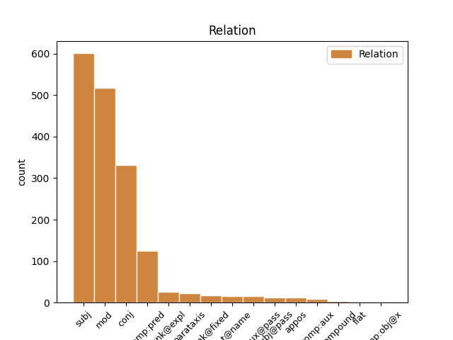
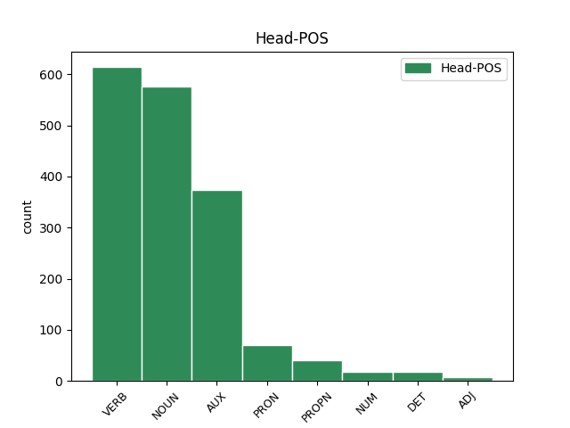
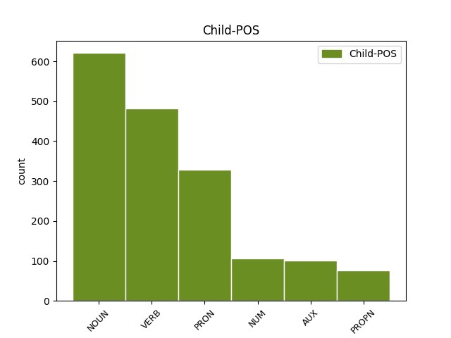

Distribution of features within this leaf



Agreement Rules sorted by frequency.
- When the dependent token is the subject(subj) of the head token, and the head token is VERB and the dependent token is NOUN.
1 Rexuveneceu rexuvenecer VERB Vei30s Mood=Ind|Number=Sing|Person=3|Tense=Past|VerbForm=Fin 0 _ _ _
2 se _ _ _ _ 0 _ _ _
3 o _ _ _ _ 0 _ _ _
4 plantel plantel NOUN Scms Gender=Masc|Number=Sing 1 subj _ _
5 e _ _ _ _ 0 _ _ _
6 a _ _ _ _ 0 _ _ _
7 perda _ _ _ _ 0 _ _ _
8 de _ _ _ _ 0 _ _ _
9 traballo _ _ _ _ 0 _ _ _
10 non _ _ _ _ 0 _ _ _
11 foi _ _ _ _ 0 _ _ _
12 neta _ _ _ _ 0 _ _ _
13 . _ _ _ _ 0 _ _ _
1 De _ _ _ _ 0 _ _ _
2 dar _ _ _ _ 0 _ _ _
3 se _ _ _ _ 0 _ _ _
4 esa _ _ _ _ 0 _ _ _
5 prexubilación _ _ _ _ 0 _ _ _
6 por _ _ _ _ 0 _ _ _
7 la _ _ _ _ 0 _ _ _
8 SEPI _ _ _ _ 0 _ _ _
9 , _ _ _ _ 0 _ _ _
10 tería _ _ _ _ 0 _ _ _
11 que _ _ _ _ 0 _ _ _
12 ser _ _ _ _ 0 _ _ _
13 mediante _ _ _ _ 0 _ _ _
14 un _ _ _ _ 0 _ _ _
15 expediente expediente NOUN Scms Gender=Masc|Number=Sing 0 _ _ _
16 aberto abrir VERB V0p0ms Gender=Masc|Number=Sing|VerbForm=Part 15 mod _ _
17 a _ _ _ _ 0 _ _ _
18 todos _ _ _ _ 0 _ _ _
19 os _ _ _ _ 0 _ _ _
20 que _ _ _ _ 0 _ _ _
21 cumpran _ _ _ _ 0 _ _ _
22 52 _ _ _ _ 0 _ _ _
23 anos _ _ _ _ 0 _ _ _
24 e _ _ _ _ 0 _ _ _
25 con _ _ _ _ 0 _ _ _
26 garantía _ _ _ _ 0 _ _ _
27 de _ _ _ _ 0 _ _ _
28 cobertura _ _ _ _ 0 _ _ _
29 de _ _ _ _ 0 _ _ _
30 as _ _ _ _ 0 _ _ _
31 vacantes _ _ _ _ 0 _ _ _
32 " _ _ _ _ 0 _ _ _
33 . _ _ _ _ 0 _ _ _
1 Segundo _ _ _ _ 0 _ _ _
2 Cagiao _ _ _ _ 0 _ _ _
3 , _ _ _ _ 0 _ _ _
4 isto _ _ _ _ 0 _ _ _
5 foi _ _ _ _ 0 _ _ _
6 o _ _ _ _ 0 _ _ _
7 que que PRON Tnms Gender=Masc|Number=Sing|PronType=Rel 8 subj _ _
8 dificultou dificultar VERB Vei30s Mood=Ind|Number=Sing|Person=3|Tense=Past|VerbForm=Fin 0 _ _ _
9 os _ _ _ _ 0 _ _ _
10 que _ _ _ _ 0 _ _ _
11 ían _ _ _ _ 0 _ _ _
12 ser _ _ _ _ 0 _ _ _
13 derradeiros _ _ _ _ 0 _ _ _
14 pasos _ _ _ _ 0 _ _ _
15 de _ _ _ _ 0 _ _ _
16 a _ _ _ _ 0 _ _ _
17 regulación _ _ _ _ 0 _ _ _
18 laboral _ _ _ _ 0 _ _ _
19 de _ _ _ _ 0 _ _ _
20 as _ _ _ _ 0 _ _ _
21 antigas _ _ _ _ 0 _ _ _
22 Astano _ _ _ _ 0 _ _ _
23 e _ _ _ _ 0 _ _ _
24 Bazán _ _ _ _ 0 _ _ _
25 , _ _ _ _ 0 _ _ _
26 denominada _ _ _ _ 0 _ _ _
27 Navantia _ _ _ _ 0 _ _ _
28 dende _ _ _ _ 0 _ _ _
29 esta _ _ _ _ 0 _ _ _
30 semana _ _ _ _ 0 _ _ _
31 . _ _ _ _ 0 _ _ _
1 Piño _ _ _ _ 0 _ _ _
2 Vidal _ _ _ _ 0 _ _ _
3 , _ _ _ _ 0 _ _ _
4 responsábel _ _ _ _ 0 _ _ _
5 de _ _ _ _ 0 _ _ _
6 a _ _ _ _ 0 _ _ _
7 Secretaría _ _ _ _ 0 _ _ _
8 de _ _ _ _ 0 _ _ _
9 Formación formación NOUN Scfs Gender=Fem|Number=Sing 0 _ _ _
10 e _ _ _ _ 0 _ _ _
11 Comunicación comunicación NOUN Scfs Gender=Fem|Number=Sing 9 conj _ _
12 de _ _ _ _ 0 _ _ _
13 Comisións _ _ _ _ 0 _ _ _
14 Obreiras _ _ _ _ 0 _ _ _
15 en _ _ _ _ 0 _ _ _
16 Ferrol _ _ _ _ 0 _ _ _
17 e _ _ _ _ 0 _ _ _
18 afectado _ _ _ _ 0 _ _ _
19 el _ _ _ _ 0 _ _ _
20 mesmo _ _ _ _ 0 _ _ _
21 por _ _ _ _ 0 _ _ _
22 lo _ _ _ _ 0 _ _ _
23 expediente _ _ _ _ 0 _ _ _
24 de _ _ _ _ 0 _ _ _
25 regulación _ _ _ _ 0 _ _ _
26 de _ _ _ _ 0 _ _ _
27 emprego _ _ _ _ 0 _ _ _
28 de _ _ _ _ 0 _ _ _
29 os _ _ _ _ 0 _ _ _
30 asteleiros _ _ _ _ 0 _ _ _
31 , _ _ _ _ 0 _ _ _
32 ten _ _ _ _ 0 _ _ _
33 o _ _ _ _ 0 _ _ _
34 claro _ _ _ _ 0 _ _ _
35 : _ _ _ _ 0 _ _ _
1 Rexuveneceu _ _ _ _ 0 _ _ _
2 se _ _ _ _ 0 _ _ _
3 o _ _ _ _ 0 _ _ _
4 plantel _ _ _ _ 0 _ _ _
5 e _ _ _ _ 0 _ _ _
6 a _ _ _ _ 0 _ _ _
7 perda perda NOUN Scfs Gender=Fem|Number=Sing 11 subj _ _
8 de _ _ _ _ 0 _ _ _
9 traballo _ _ _ _ 0 _ _ _
10 non _ _ _ _ 0 _ _ _
11 foi ser AUX Vei30s Mood=Ind|Number=Sing|Person=3|Tense=Past|VerbForm=Fin 0 _ _ _
12 neta _ _ _ _ 0 _ _ _
13 . _ _ _ _ 0 _ _ _
1 De _ _ _ _ 0 _ _ _
2 dar _ _ _ _ 0 _ _ _
3 se _ _ _ _ 0 _ _ _
4 esa _ _ _ _ 0 _ _ _
5 prexubilación _ _ _ _ 0 _ _ _
6 por _ _ _ _ 0 _ _ _
7 la _ _ _ _ 0 _ _ _
8 SEPI _ _ _ _ 0 _ _ _
9 , _ _ _ _ 0 _ _ _
10 tería _ _ _ _ 0 _ _ _
11 que _ _ _ _ 0 _ _ _
12 ser _ _ _ _ 0 _ _ _
13 mediante _ _ _ _ 0 _ _ _
14 un _ _ _ _ 0 _ _ _
15 expediente _ _ _ _ 0 _ _ _
16 aberto _ _ _ _ 0 _ _ _
17 a _ _ _ _ 0 _ _ _
18 todos _ _ _ _ 0 _ _ _
19 os _ _ _ _ 0 _ _ _
20 que _ _ _ _ 0 _ _ _
21 cumpran _ _ _ _ 0 _ _ _
22 52 52 NUM Ncdmp Gender=Masc|Number=Plur|NumType=Card 23 mod _ _
23 anos ano NOUN Scmp Gender=Masc|Number=Plur 0 _ _ _
24 e _ _ _ _ 0 _ _ _
25 con _ _ _ _ 0 _ _ _
26 garantía _ _ _ _ 0 _ _ _
27 de _ _ _ _ 0 _ _ _
28 cobertura _ _ _ _ 0 _ _ _
29 de _ _ _ _ 0 _ _ _
30 as _ _ _ _ 0 _ _ _
31 vacantes _ _ _ _ 0 _ _ _
32 " _ _ _ _ 0 _ _ _
33 . _ _ _ _ 0 _ _ _
1 Costa-Gavras _ _ _ _ 0 _ _ _
2 , _ _ _ _ 0 _ _ _
3 con _ _ _ _ 0 _ _ _
4 a _ _ _ _ 0 _ _ _
5 súa _ _ _ _ 0 _ _ _
6 película _ _ _ _ 0 _ _ _
7 Le _ _ _ _ 0 _ _ _
8 Couperet _ _ _ _ 0 _ _ _
9 , _ _ _ _ 0 _ _ _
10 acaba _ _ _ _ 0 _ _ _
11 de _ _ _ _ 0 _ _ _
12 resaltar _ _ _ _ 0 _ _ _
13 de _ _ _ _ 0 _ _ _
14 forma _ _ _ _ 0 _ _ _
15 dramática _ _ _ _ 0 _ _ _
16 cómo _ _ _ _ 0 _ _ _
17 humilla _ _ _ _ 0 _ _ _
18 , _ _ _ _ 0 _ _ _
19 aniquila aniquilar VERB Vpi30s Mood=Ind|Number=Sing|Person=3|Tense=Pres|VerbForm=Fin 0 _ _ _
20 , _ _ _ _ 0 _ _ _
21 deprime deprimir VERB Vpi30s Mood=Ind|Number=Sing|Person=3|Tense=Pres|VerbForm=Fin 19 conj _ _
22 e _ _ _ _ 0 _ _ _
23 até _ _ _ _ 0 _ _ _
24 pode _ _ _ _ 0 _ _ _
25 volver _ _ _ _ 0 _ _ _
26 a _ _ _ _ 0 _ _ _
27 un _ _ _ _ 0 _ _ _
28 tolo _ _ _ _ 0 _ _ _
29 a _ _ _ _ 0 _ _ _
30 perda _ _ _ _ 0 _ _ _
31 de _ _ _ _ 0 _ _ _
32 o _ _ _ _ 0 _ _ _
33 traballo _ _ _ _ 0 _ _ _
34 . _ _ _ _ 0 _ _ _
1 Segundo _ _ _ _ 0 _ _ _
2 Cagiao _ _ _ _ 0 _ _ _
3 , _ _ _ _ 0 _ _ _
4 isto _ _ _ _ 0 _ _ _
5 foi _ _ _ _ 0 _ _ _
6 o _ _ _ _ 0 _ _ _
7 que _ _ _ _ 0 _ _ _
8 dificultou _ _ _ _ 0 _ _ _
9 os _ _ _ _ 0 _ _ _
10 que que PRON Tnmp Gender=Masc|Number=Plur|PronType=Rel 11 subj _ _
11 ían ir AUX Vii30p Mood=Ind|Number=Plur|Person=3|Tense=Imp|VerbForm=Fin 0 _ _ _
12 ser _ _ _ _ 0 _ _ _
13 derradeiros _ _ _ _ 0 _ _ _
14 pasos _ _ _ _ 0 _ _ _
15 de _ _ _ _ 0 _ _ _
16 a _ _ _ _ 0 _ _ _
17 regulación _ _ _ _ 0 _ _ _
18 laboral _ _ _ _ 0 _ _ _
19 de _ _ _ _ 0 _ _ _
20 as _ _ _ _ 0 _ _ _
21 antigas _ _ _ _ 0 _ _ _
22 Astano _ _ _ _ 0 _ _ _
23 e _ _ _ _ 0 _ _ _
24 Bazán _ _ _ _ 0 _ _ _
25 , _ _ _ _ 0 _ _ _
26 denominada _ _ _ _ 0 _ _ _
27 Navantia _ _ _ _ 0 _ _ _
28 dende _ _ _ _ 0 _ _ _
29 esta _ _ _ _ 0 _ _ _
30 semana _ _ _ _ 0 _ _ _
31 . _ _ _ _ 0 _ _ _
1 Emilio _ _ _ _ 0 _ _ _
2 Cagiao _ _ _ _ 0 _ _ _
3 , _ _ _ _ 0 _ _ _
4 secretario _ _ _ _ 0 _ _ _
5 de _ _ _ _ 0 _ _ _
6 a _ _ _ _ 0 _ _ _
7 CIG _ _ _ _ 0 _ _ _
8 en _ _ _ _ 0 _ _ _
9 Ferrol _ _ _ _ 0 _ _ _
10 , _ _ _ _ 0 _ _ _
11 di _ _ _ _ 0 _ _ _
12 que _ _ _ _ 0 _ _ _
13 " _ _ _ _ 0 _ _ _
14 e _ _ _ _ 0 _ _ _
15 unha _ _ _ _ 0 _ _ _
16 verdadeira _ _ _ _ 0 _ _ _
17 vergonza _ _ _ _ 0 _ _ _
18 que _ _ _ _ 0 _ _ _
19 se _ _ _ _ 0 _ _ _
20 estea _ _ _ _ 0 _ _ _
21 xogando _ _ _ _ 0 _ _ _
22 con _ _ _ _ 0 _ _ _
23 os _ _ _ _ 0 _ _ _
24 traballadores _ _ _ _ 0 _ _ _
25 por _ _ _ _ 0 _ _ _
26 non _ _ _ _ 0 _ _ _
27 dar _ _ _ _ 0 _ _ _
28 lle _ _ _ _ 0 _ _ _
29 solución _ _ _ _ 0 _ _ _
30 a _ _ _ _ 0 _ _ _
31 o _ _ _ _ 0 _ _ _
32 que _ _ _ _ 0 _ _ _
33 eles _ _ _ _ 0 _ _ _
34 chaman _ _ _ _ 0 _ _ _
35 " _ _ _ _ 0 _ _ _
36 flecos _ _ _ _ 0 _ _ _
37 " _ _ _ _ 0 _ _ _
38 , _ _ _ _ 0 _ _ _
39 cando _ _ _ _ 0 _ _ _
40 a _ _ _ _ 0 _ _ _
41 verdadeira _ _ _ _ 0 _ _ _
42 realidade realidade NOUN Scfs Gender=Fem|Number=Sing 43 comp:pred _ _
43 é ser AUX Vpi30s Mood=Ind|Number=Sing|Person=3|Tense=Pres|VerbForm=Fin 0 _ _ _
44 por _ _ _ _ 0 _ _ _
45 que _ _ _ _ 0 _ _ _
46 os _ _ _ _ 0 _ _ _
47 de _ _ _ _ 0 _ _ _
48 Comisións _ _ _ _ 0 _ _ _
49 queren _ _ _ _ 0 _ _ _
50 prexubilar _ _ _ _ 0 _ _ _
51 tamén _ _ _ _ 0 _ _ _
52 algúns _ _ _ _ 0 _ _ _
53 traballadores _ _ _ _ 0 _ _ _
54 de _ _ _ _ 0 _ _ _
55 as _ _ _ _ 0 _ _ _
56 compañias _ _ _ _ 0 _ _ _
57 auxiliares _ _ _ _ 0 _ _ _
58 con _ _ _ _ 0 _ _ _
59 o _ _ _ _ 0 _ _ _
60 pretexto _ _ _ _ 0 _ _ _
61 de _ _ _ _ 0 _ _ _
62 que _ _ _ _ 0 _ _ _
63 poden _ _ _ _ 0 _ _ _
64 ter _ _ _ _ 0 _ _ _
65 garantía _ _ _ _ 0 _ _ _
66 de _ _ _ _ 0 _ _ _
67 emprego _ _ _ _ 0 _ _ _
68 . _ _ _ _ 0 _ _ _
1 Estes _ _ _ _ 0 _ _ _
2 traballadores _ _ _ _ 0 _ _ _
3 , _ _ _ _ 0 _ _ _
4 que _ _ _ _ 0 _ _ _
5 teñen _ _ _ _ 0 _ _ _
6 que _ _ _ _ 0 _ _ _
7 ter _ _ _ _ 0 _ _ _
8 52 _ _ _ _ 0 _ _ _
9 anos _ _ _ _ 0 _ _ _
10 cumpridos _ _ _ _ 0 _ _ _
11 , _ _ _ _ 0 _ _ _
12 van _ _ _ _ 0 _ _ _
13 seguir _ _ _ _ 0 _ _ _
14 cobrando _ _ _ _ 0 _ _ _
15 o _ _ _ _ 0 _ _ _
16 que _ _ _ _ 0 _ _ _
17 cobraban _ _ _ _ 0 _ _ _
18 até _ _ _ _ 0 _ _ _
19 agora _ _ _ _ 0 _ _ _
20 e _ _ _ _ 0 _ _ _
21 pasarán _ _ _ _ 0 _ _ _
22 a _ _ _ _ 0 _ _ _
23 engordar _ _ _ _ 0 _ _ _
24 unha _ _ _ _ 0 _ _ _
25 nómina nómina NOUN Scfs Gender=Fem|Number=Sing 0 _ _ _
26 que _ _ _ _ 0 _ _ _
27 xa _ _ _ _ 0 _ _ _
28 era ser AUX Vii30s Mood=Ind|Number=Sing|Person=3|Tense=Imp|VerbForm=Fin 25 mod _ _
29 moi _ _ _ _ 0 _ _ _
30 coñecida _ _ _ _ 0 _ _ _
31 en _ _ _ _ 0 _ _ _
32 Ferrol _ _ _ _ 0 _ _ _
33 , _ _ _ _ 0 _ _ _
34 a _ _ _ _ 0 _ _ _
35 de _ _ _ _ 0 _ _ _
36 os _ _ _ _ 0 _ _ _
37 que _ _ _ _ 0 _ _ _
38 cobran _ _ _ _ 0 _ _ _
39 sen _ _ _ _ 0 _ _ _
40 traballar _ _ _ _ 0 _ _ _
41 porque _ _ _ _ 0 _ _ _
42 o _ _ _ _ 0 _ _ _
43 seu _ _ _ _ 0 _ _ _
44 posto _ _ _ _ 0 _ _ _
45 foi _ _ _ _ 0 _ _ _
46 borrado _ _ _ _ 0 _ _ _
47 de _ _ _ _ 0 _ _ _
48 o _ _ _ _ 0 _ _ _
49 mapa _ _ _ _ 0 _ _ _
50 . _ _ _ _ 0 _ _ _
1 De _ _ _ _ 0 _ _ _
2 dar _ _ _ _ 0 _ _ _
3 se _ _ _ _ 0 _ _ _
4 esa _ _ _ _ 0 _ _ _
5 prexubilación _ _ _ _ 0 _ _ _
6 por _ _ _ _ 0 _ _ _
7 la _ _ _ _ 0 _ _ _
8 SEPI _ _ _ _ 0 _ _ _
9 , _ _ _ _ 0 _ _ _
10 tería _ _ _ _ 0 _ _ _
11 que _ _ _ _ 0 _ _ _
12 ser _ _ _ _ 0 _ _ _
13 mediante _ _ _ _ 0 _ _ _
14 un _ _ _ _ 0 _ _ _
15 expediente _ _ _ _ 0 _ _ _
16 aberto _ _ _ _ 0 _ _ _
17 a _ _ _ _ 0 _ _ _
18 todos _ _ _ _ 0 _ _ _
19 os o PRON Ddmp Gender=Masc|Number=Plur|Person=3|PronType=Art 0 _ _ _
20 que _ _ _ _ 0 _ _ _
21 cumpran cumprir VERB Vps30p Mood=Sub|Number=Plur|Person=3|Tense=Pres|VerbForm=Fin 19 mod _ _
22 52 _ _ _ _ 0 _ _ _
23 anos _ _ _ _ 0 _ _ _
24 e _ _ _ _ 0 _ _ _
25 con _ _ _ _ 0 _ _ _
26 garantía _ _ _ _ 0 _ _ _
27 de _ _ _ _ 0 _ _ _
28 cobertura _ _ _ _ 0 _ _ _
29 de _ _ _ _ 0 _ _ _
30 as _ _ _ _ 0 _ _ _
31 vacantes _ _ _ _ 0 _ _ _
32 " _ _ _ _ 0 _ _ _
33 . _ _ _ _ 0 _ _ _
1 as _ _ _ _ 0 _ _ _
2 Bases Bases PROPN Spfp Gender=Fem|Number=Plur 3 subj _ _
3 contemplan contemplar VERB Vpi30p Mood=Ind|Number=Plur|Person=3|Tense=Pres|VerbForm=Fin 0 _ _ _
4 o _ _ _ _ 0 _ _ _
5 Estatuto _ _ _ _ 0 _ _ _
6 como _ _ _ _ 0 _ _ _
7 a _ _ _ _ 0 _ _ _
8 norma _ _ _ _ 0 _ _ _
9 fundamental _ _ _ _ 0 _ _ _
10 e _ _ _ _ 0 _ _ _
11 primaria _ _ _ _ 0 _ _ _
12 de _ _ _ _ 0 _ _ _
13 a _ _ _ _ 0 _ _ _
14 nación _ _ _ _ 0 _ _ _
15 galega _ _ _ _ 0 _ _ _
16 , _ _ _ _ 0 _ _ _
17 e _ _ _ _ 0 _ _ _
18 como _ _ _ _ 0 _ _ _
19 fundamento _ _ _ _ 0 _ _ _
20 político _ _ _ _ 0 _ _ _
21 para _ _ _ _ 0 _ _ _
22 a _ _ _ _ 0 _ _ _
23 relación _ _ _ _ 0 _ _ _
24 con _ _ _ _ 0 _ _ _
25 o _ _ _ _ 0 _ _ _
26 Estado _ _ _ _ 0 _ _ _
27 español _ _ _ _ 0 _ _ _
28 , _ _ _ _ 0 _ _ _
29 con _ _ _ _ 0 _ _ _
30 a _ _ _ _ 0 _ _ _
31 Unión _ _ _ _ 0 _ _ _
32 Europea _ _ _ _ 0 _ _ _
33 e _ _ _ _ 0 _ _ _
34 con _ _ _ _ 0 _ _ _
35 as _ _ _ _ 0 _ _ _
36 restantes _ _ _ _ 0 _ _ _
37 nacións _ _ _ _ 0 _ _ _
38 e _ _ _ _ 0 _ _ _
39 pobos _ _ _ _ 0 _ _ _
40 de _ _ _ _ 0 _ _ _
41 o _ _ _ _ 0 _ _ _
42 mundo _ _ _ _ 0 _ _ _
43 . _ _ _ _ 0 _ _ _
1 En _ _ _ _ 0 _ _ _
2 esta _ _ _ _ 0 _ _ _
3 arte _ _ _ _ 0 _ _ _
4 usa _ _ _ _ 0 _ _ _
5 se _ _ _ _ 0 _ _ _
6 calquera _ _ _ _ 0 _ _ _
7 material material NOUN Scms Gender=Masc|Number=Sing 0 _ _ _
8 : _ _ _ _ 0 _ _ _
9 xesta xesta NOUN Scfs Gender=Fem|Number=Sing 7 mod _ SpaceAfter=No
10 , _ _ _ _ 0 _ _ _
11 toxo _ _ _ _ 0 _ _ _
12 , _ _ _ _ 0 _ _ _
13 uces _ _ _ _ 0 _ _ _
14 , _ _ _ _ 0 _ _ _
15 a _ _ _ _ 0 _ _ _
16 flor _ _ _ _ 0 _ _ _
17 de _ _ _ _ 0 _ _ _
18 o _ _ _ _ 0 _ _ _
19 grelo _ _ _ _ 0 _ _ _
20 ou _ _ _ _ 0 _ _ _
21 de _ _ _ _ 0 _ _ _
22 a _ _ _ _ 0 _ _ _
23 ervilla _ _ _ _ 0 _ _ _
24 ... _ _ _ _ 0 _ _ _
1 Segundo _ _ _ _ 0 _ _ _
2 Cagiao _ _ _ _ 0 _ _ _
3 , _ _ _ _ 0 _ _ _
4 isto este PRON Enns Gender=Neut|Number=Sing|PronType=Dem 5 comp:pred _ _
5 foi ser AUX Vei30s Mood=Ind|Number=Sing|Person=3|Tense=Past|VerbForm=Fin 0 _ _ _
6 o _ _ _ _ 0 _ _ _
7 que _ _ _ _ 0 _ _ _
8 dificultou _ _ _ _ 0 _ _ _
9 os _ _ _ _ 0 _ _ _
10 que _ _ _ _ 0 _ _ _
11 ían _ _ _ _ 0 _ _ _
12 ser _ _ _ _ 0 _ _ _
13 derradeiros _ _ _ _ 0 _ _ _
14 pasos _ _ _ _ 0 _ _ _
15 de _ _ _ _ 0 _ _ _
16 a _ _ _ _ 0 _ _ _
17 regulación _ _ _ _ 0 _ _ _
18 laboral _ _ _ _ 0 _ _ _
19 de _ _ _ _ 0 _ _ _
20 as _ _ _ _ 0 _ _ _
21 antigas _ _ _ _ 0 _ _ _
22 Astano _ _ _ _ 0 _ _ _
23 e _ _ _ _ 0 _ _ _
24 Bazán _ _ _ _ 0 _ _ _
25 , _ _ _ _ 0 _ _ _
26 denominada _ _ _ _ 0 _ _ _
27 Navantia _ _ _ _ 0 _ _ _
28 dende _ _ _ _ 0 _ _ _
29 esta _ _ _ _ 0 _ _ _
30 semana _ _ _ _ 0 _ _ _
31 . _ _ _ _ 0 _ _ _
1 Eu _ _ _ _ 0 _ _ _
2 dei _ _ _ _ 0 _ _ _
3 varios _ _ _ _ 0 _ _ _
4 cursiños _ _ _ _ 0 _ _ _
5 de _ _ _ _ 0 _ _ _
6 ikebana _ _ _ _ 0 _ _ _
7 en _ _ _ _ 0 _ _ _
8 as _ _ _ _ 0 _ _ _
9 asociacións _ _ _ _ 0 _ _ _
10 culturais _ _ _ _ 0 _ _ _
11 de _ _ _ _ 0 _ _ _
12 Vidán _ _ _ _ 0 _ _ _
13 e _ _ _ _ 0 _ _ _
14 de _ _ _ _ 0 _ _ _
15 Vite _ _ _ _ 0 _ _ _
16 , _ _ _ _ 0 _ _ _
17 e _ _ _ _ 0 _ _ _
18 decatei decatar VERB Vei10s Mood=Ind|Number=Sing|Person=1|Tense=Past|VerbForm=Fin 0 _ _ _
19 me me PRON Raf1as Clitic=Yes|Gender=Com|Number=Sing|Person=1|PronType=Prs 18 unk@expl _ _
20 de _ _ _ _ 0 _ _ _
21 que _ _ _ _ 0 _ _ _
22 a _ _ _ _ 0 _ _ _
23 xente _ _ _ _ 0 _ _ _
24 desfruta _ _ _ _ 0 _ _ _
25 aprendendo _ _ _ _ 0 _ _ _
26 a _ _ _ _ 0 _ _ _
27 . _ _ _ _ 0 _ _ _
1 Rexuveneceu rexuvenecer VERB Vei30s Mood=Ind|Number=Sing|Person=3|Tense=Past|VerbForm=Fin 0 _ _ _
2 se _ _ _ _ 0 _ _ _
3 o _ _ _ _ 0 _ _ _
4 plantel _ _ _ _ 0 _ _ _
5 e _ _ _ _ 0 _ _ _
6 a _ _ _ _ 0 _ _ _
7 perda _ _ _ _ 0 _ _ _
8 de _ _ _ _ 0 _ _ _
9 traballo _ _ _ _ 0 _ _ _
10 non _ _ _ _ 0 _ _ _
11 foi ser AUX Vei30s Mood=Ind|Number=Sing|Person=3|Tense=Past|VerbForm=Fin 1 conj _ _
12 neta _ _ _ _ 0 _ _ _
13 . _ _ _ _ 0 _ _ _
1 Estes _ _ _ _ 0 _ _ _
2 traballadores _ _ _ _ 0 _ _ _
3 , _ _ _ _ 0 _ _ _
4 que _ _ _ _ 0 _ _ _
5 teñen _ _ _ _ 0 _ _ _
6 que _ _ _ _ 0 _ _ _
7 ter _ _ _ _ 0 _ _ _
8 52 _ _ _ _ 0 _ _ _
9 anos _ _ _ _ 0 _ _ _
10 cumpridos _ _ _ _ 0 _ _ _
11 , _ _ _ _ 0 _ _ _
12 van _ _ _ _ 0 _ _ _
13 seguir _ _ _ _ 0 _ _ _
14 cobrando _ _ _ _ 0 _ _ _
15 o _ _ _ _ 0 _ _ _
16 que _ _ _ _ 0 _ _ _
17 cobraban _ _ _ _ 0 _ _ _
18 até _ _ _ _ 0 _ _ _
19 agora _ _ _ _ 0 _ _ _
20 e _ _ _ _ 0 _ _ _
21 pasarán _ _ _ _ 0 _ _ _
22 a _ _ _ _ 0 _ _ _
23 engordar _ _ _ _ 0 _ _ _
24 unha _ _ _ _ 0 _ _ _
25 nómina _ _ _ _ 0 _ _ _
26 que _ _ _ _ 0 _ _ _
27 xa _ _ _ _ 0 _ _ _
28 era ser AUX Vii30s Mood=Ind|Number=Sing|Person=3|Tense=Imp|VerbForm=Fin 0 _ _ _
29 moi _ _ _ _ 0 _ _ _
30 coñecida coñecer VERB V0p0fs Gender=Fem|Number=Sing|VerbForm=Part 28 comp:pred _ _
31 en _ _ _ _ 0 _ _ _
32 Ferrol _ _ _ _ 0 _ _ _
33 , _ _ _ _ 0 _ _ _
34 a _ _ _ _ 0 _ _ _
35 de _ _ _ _ 0 _ _ _
36 os _ _ _ _ 0 _ _ _
37 que _ _ _ _ 0 _ _ _
38 cobran _ _ _ _ 0 _ _ _
39 sen _ _ _ _ 0 _ _ _
40 traballar _ _ _ _ 0 _ _ _
41 porque _ _ _ _ 0 _ _ _
42 o _ _ _ _ 0 _ _ _
43 seu _ _ _ _ 0 _ _ _
44 posto _ _ _ _ 0 _ _ _
45 foi _ _ _ _ 0 _ _ _
46 borrado _ _ _ _ 0 _ _ _
47 de _ _ _ _ 0 _ _ _
48 o _ _ _ _ 0 _ _ _
49 mapa _ _ _ _ 0 _ _ _
50 . _ _ _ _ 0 _ _ _
1 Estes _ _ _ _ 0 _ _ _
2 traballadores _ _ _ _ 0 _ _ _
3 , _ _ _ _ 0 _ _ _
4 que _ _ _ _ 0 _ _ _
5 teñen _ _ _ _ 0 _ _ _
6 que _ _ _ _ 0 _ _ _
7 ter _ _ _ _ 0 _ _ _
8 52 _ _ _ _ 0 _ _ _
9 anos _ _ _ _ 0 _ _ _
10 cumpridos _ _ _ _ 0 _ _ _
11 , _ _ _ _ 0 _ _ _
12 van ir AUX Vpi30p Mood=Ind|Number=Plur|Person=3|Tense=Pres|VerbForm=Fin 0 _ _ _
13 seguir _ _ _ _ 0 _ _ _
14 cobrando _ _ _ _ 0 _ _ _
15 o _ _ _ _ 0 _ _ _
16 que _ _ _ _ 0 _ _ _
17 cobraban _ _ _ _ 0 _ _ _
18 até _ _ _ _ 0 _ _ _
19 agora _ _ _ _ 0 _ _ _
20 e _ _ _ _ 0 _ _ _
21 pasarán pasar VERB Vfi30p Mood=Ind|Number=Plur|Person=3|Tense=Fut|VerbForm=Fin 12 conj _ _
22 a _ _ _ _ 0 _ _ _
23 engordar _ _ _ _ 0 _ _ _
24 unha _ _ _ _ 0 _ _ _
25 nómina _ _ _ _ 0 _ _ _
26 que _ _ _ _ 0 _ _ _
27 xa _ _ _ _ 0 _ _ _
28 era _ _ _ _ 0 _ _ _
29 moi _ _ _ _ 0 _ _ _
30 coñecida _ _ _ _ 0 _ _ _
31 en _ _ _ _ 0 _ _ _
32 Ferrol _ _ _ _ 0 _ _ _
33 , _ _ _ _ 0 _ _ _
34 a _ _ _ _ 0 _ _ _
35 de _ _ _ _ 0 _ _ _
36 os _ _ _ _ 0 _ _ _
37 que _ _ _ _ 0 _ _ _
38 cobran _ _ _ _ 0 _ _ _
39 sen _ _ _ _ 0 _ _ _
40 traballar _ _ _ _ 0 _ _ _
41 porque _ _ _ _ 0 _ _ _
42 o _ _ _ _ 0 _ _ _
43 seu _ _ _ _ 0 _ _ _
44 posto _ _ _ _ 0 _ _ _
45 foi _ _ _ _ 0 _ _ _
46 borrado _ _ _ _ 0 _ _ _
47 de _ _ _ _ 0 _ _ _
48 o _ _ _ _ 0 _ _ _
49 mapa _ _ _ _ 0 _ _ _
50 . _ _ _ _ 0 _ _ _
1 Estes _ _ _ _ 0 _ _ _
2 traballadores _ _ _ _ 0 _ _ _
3 , _ _ _ _ 0 _ _ _
4 que _ _ _ _ 0 _ _ _
5 teñen _ _ _ _ 0 _ _ _
6 que _ _ _ _ 0 _ _ _
7 ter _ _ _ _ 0 _ _ _
8 52 _ _ _ _ 0 _ _ _
9 anos _ _ _ _ 0 _ _ _
10 cumpridos _ _ _ _ 0 _ _ _
11 , _ _ _ _ 0 _ _ _
12 van _ _ _ _ 0 _ _ _
13 seguir _ _ _ _ 0 _ _ _
14 cobrando _ _ _ _ 0 _ _ _
15 o _ _ _ _ 0 _ _ _
16 que _ _ _ _ 0 _ _ _
17 cobraban _ _ _ _ 0 _ _ _
18 até _ _ _ _ 0 _ _ _
19 agora _ _ _ _ 0 _ _ _
20 e _ _ _ _ 0 _ _ _
21 pasarán _ _ _ _ 0 _ _ _
22 a _ _ _ _ 0 _ _ _
23 engordar _ _ _ _ 0 _ _ _
24 unha _ _ _ _ 0 _ _ _
25 nómina _ _ _ _ 0 _ _ _
26 que _ _ _ _ 0 _ _ _
27 xa _ _ _ _ 0 _ _ _
28 era _ _ _ _ 0 _ _ _
29 moi _ _ _ _ 0 _ _ _
30 coñecida _ _ _ _ 0 _ _ _
31 en _ _ _ _ 0 _ _ _
32 Ferrol _ _ _ _ 0 _ _ _
33 , _ _ _ _ 0 _ _ _
34 a _ _ _ _ 0 _ _ _
35 de _ _ _ _ 0 _ _ _
36 os _ _ _ _ 0 _ _ _
37 que _ _ _ _ 0 _ _ _
38 cobran _ _ _ _ 0 _ _ _
39 sen _ _ _ _ 0 _ _ _
40 traballar _ _ _ _ 0 _ _ _
41 porque _ _ _ _ 0 _ _ _
42 o _ _ _ _ 0 _ _ _
43 seu _ _ _ _ 0 _ _ _
44 posto _ _ _ _ 0 _ _ _
45 foi ser AUX Vei30s Mood=Ind|Number=Sing|Person=3|Tense=Past|VerbForm=Fin 0 _ _ _
46 borrado borrar VERB V0p0ms Gender=Masc|Number=Sing|VerbForm=Part 45 comp:aux@pass _ _
47 de _ _ _ _ 0 _ _ _
48 o _ _ _ _ 0 _ _ _
49 mapa _ _ _ _ 0 _ _ _
50 . _ _ _ _ 0 _ _ _
1 Reducido reducir VERB V0p0ms Gender=Masc|Number=Sing|VerbForm=Part 20 mod _ _
2 a _ _ _ _ 0 _ _ _
3 nada _ _ _ _ 0 _ _ _
4 por _ _ _ _ 0 _ _ _
5 los _ _ _ _ 0 _ _ _
6 encargados _ _ _ _ 0 _ _ _
7 de _ _ _ _ 0 _ _ _
8 recrutar _ _ _ _ 0 _ _ _
9 novos _ _ _ _ 0 _ _ _
10 empregados _ _ _ _ 0 _ _ _
11 de _ _ _ _ 0 _ _ _
12 abultada _ _ _ _ 0 _ _ _
13 cualificación _ _ _ _ 0 _ _ _
14 , _ _ _ _ 0 _ _ _
15 o _ _ _ _ 0 _ _ _
16 protagonista _ _ _ _ 0 _ _ _
17 de _ _ _ _ 0 _ _ _
18 Le _ _ _ _ 0 _ _ _
19 Couperet _ _ _ _ 0 _ _ _
20 decide decidir VERB Vpi30s Mood=Ind|Number=Sing|Person=3|Tense=Pres|VerbForm=Fin 0 _ _ _
21 eliminar _ _ _ _ 0 _ _ _
22 a _ _ _ _ 0 _ _ _
23 competencia _ _ _ _ 0 _ _ _
24 . _ _ _ _ 0 _ _ _
1 A _ _ _ _ 0 _ _ _
2 partir _ _ _ _ 0 _ _ _
3 de _ _ _ _ 0 _ _ _
4 estes _ _ _ _ 0 _ _ _
5 e _ _ _ _ 0 _ _ _
6 coma _ _ _ _ 0 _ _ _
7 se _ _ _ _ 0 _ _ _
8 de _ _ _ _ 0 _ _ _
9 un _ _ _ _ 0 _ _ _
10 exercicio _ _ _ _ 0 _ _ _
11 ou _ _ _ _ 0 _ _ _
12 de _ _ _ _ 0 _ _ _
13 unha _ _ _ _ 0 _ _ _
14 proposta _ _ _ _ 0 _ _ _
15 de _ _ _ _ 0 _ _ _
16 A _ _ _ _ 0 _ _ _
17 gramática _ _ _ _ 0 _ _ _
18 de _ _ _ _ 0 _ _ _
19 a _ _ _ _ 0 _ _ _
20 fantasía _ _ _ _ 0 _ _ _
21 , _ _ _ _ 0 _ _ _
22 de _ _ _ _ 0 _ _ _
23 o _ _ _ _ 0 _ _ _
24 Obradoiro _ _ _ _ 0 _ _ _
25 Literario _ _ _ _ 0 _ _ _
26 ' _ _ _ _ 0 _ _ _
27 Gianni gianni PROPN Spms Gender=Masc|Number=Sing 0 _ _ _
28 Rodari rodari PROPN Spms Gender=Masc|Number=Sing 27 flat@name _ _
29 ' _ _ _ _ 0 _ _ _
30 se _ _ _ _ 0 _ _ _
31 tratase _ _ _ _ 0 _ _ _
32 , _ _ _ _ 0 _ _ _
33 o _ _ _ _ 0 _ _ _
34 vilalbés _ _ _ _ 0 _ _ _
35 constrúe _ _ _ _ 0 _ _ _
36 os _ _ _ _ 0 _ _ _
37 relatos _ _ _ _ 0 _ _ _
38 que _ _ _ _ 0 _ _ _
39 nos _ _ _ _ 0 _ _ _
40 levan _ _ _ _ 0 _ _ _
41 a _ _ _ _ 0 _ _ _
42 o _ _ _ _ 0 _ _ _
43 mundo _ _ _ _ 0 _ _ _
44 de _ _ _ _ 0 _ _ _
45 o _ _ _ _ 0 _ _ _
46 cómic _ _ _ _ 0 _ _ _
47 , _ _ _ _ 0 _ _ _
48 que _ _ _ _ 0 _ _ _
49 o _ _ _ _ 0 _ _ _
50 autor _ _ _ _ 0 _ _ _
51 coñece _ _ _ _ 0 _ _ _
52 ben _ _ _ _ 0 _ _ _
53 por _ _ _ _ 0 _ _ _
54 ser _ _ _ _ 0 _ _ _
55 unha _ _ _ _ 0 _ _ _
56 de _ _ _ _ 0 _ _ _
57 as _ _ _ _ 0 _ _ _
58 súas _ _ _ _ 0 _ _ _
59 grandes _ _ _ _ 0 _ _ _
60 paixóns _ _ _ _ 0 _ _ _
61 , _ _ _ _ 0 _ _ _
62 para _ _ _ _ 0 _ _ _
63 nos _ _ _ _ 0 _ _ _
64 presentar _ _ _ _ 0 _ _ _
65 un _ _ _ _ 0 _ _ _
66 superheroe _ _ _ _ 0 _ _ _
67 que _ _ _ _ 0 _ _ _
68 xa _ _ _ _ 0 _ _ _
69 non _ _ _ _ 0 _ _ _
70 exerce _ _ _ _ 0 _ _ _
71 de _ _ _ _ 0 _ _ _
72 tal _ _ _ _ 0 _ _ _
73 , _ _ _ _ 0 _ _ _
74 humanizando _ _ _ _ 0 _ _ _
75 a _ _ _ _ 0 _ _ _
76 Spiderman _ _ _ _ 0 _ _ _
77 aínda _ _ _ _ 0 _ _ _
78 máis _ _ _ _ 0 _ _ _
79 de _ _ _ _ 0 _ _ _
80 o _ _ _ _ 0 _ _ _
81 que _ _ _ _ 0 _ _ _
82 o _ _ _ _ 0 _ _ _
83 fixo _ _ _ _ 0 _ _ _
84 o _ _ _ _ 0 _ _ _
85 seu _ _ _ _ 0 _ _ _
86 creador _ _ _ _ 0 _ _ _
87 Stan _ _ _ _ 0 _ _ _
88 Lee _ _ _ _ 0 _ _ _
89 ; _ _ _ _ 0 _ _ _
90 un _ _ _ _ 0 _ _ _
91 vampiro _ _ _ _ 0 _ _ _
92 en _ _ _ _ 0 _ _ _
93 paro _ _ _ _ 0 _ _ _
94 ou _ _ _ _ 0 _ _ _
95 un _ _ _ _ 0 _ _ _
96 rotulista _ _ _ _ 0 _ _ _
97 que _ _ _ _ 0 _ _ _
98 está _ _ _ _ 0 _ _ _
99 chantado _ _ _ _ 0 _ _ _
100 en _ _ _ _ 0 _ _ _
101 a _ _ _ _ 0 _ _ _
102 realidade _ _ _ _ 0 _ _ _
103 de _ _ _ _ 0 _ _ _
104 o _ _ _ _ 0 _ _ _
105 país _ _ _ _ 0 _ _ _
106 e _ _ _ _ 0 _ _ _
107 que _ _ _ _ 0 _ _ _
108 , _ _ _ _ 0 _ _ _
109 sen _ _ _ _ 0 _ _ _
110 estridencias _ _ _ _ 0 _ _ _
111 , _ _ _ _ 0 _ _ _
112 nos _ _ _ _ 0 _ _ _
113 mostra _ _ _ _ 0 _ _ _
114 o _ _ _ _ 0 _ _ _
115 que _ _ _ _ 0 _ _ _
116 somos _ _ _ _ 0 _ _ _
117 . _ _ _ _ 0 _ _ _
1 É _ _ _ _ 0 _ _ _
2 , _ _ _ _ 0 _ _ _
3 en _ _ _ _ 0 _ _ _
4 todo todo DET Idms Gender=Masc|Number=Sing|PronType=Ind 0 _ _ _
5 caso caso NOUN Scms Gender=Masc|Number=Sing 4 unk@fixed _ SpaceAfter=No
6 , _ _ _ _ 0 _ _ _
7 o _ _ _ _ 0 _ _ _
8 único _ _ _ _ 0 _ _ _
9 punto _ _ _ _ 0 _ _ _
10 en _ _ _ _ 0 _ _ _
11 común _ _ _ _ 0 _ _ _
12 entre _ _ _ _ 0 _ _ _
13 ambos _ _ _ _ 0 _ _ _
14 . _ _ _ _ 0 _ _ _
1 En _ _ _ _ 0 _ _ _
2 o _ _ _ _ 0 _ _ _
3 preciso _ _ _ _ 0 _ _ _
4 momento _ _ _ _ 0 _ _ _
5 en _ _ _ _ 0 _ _ _
6 que _ _ _ _ 0 _ _ _
7 se _ _ _ _ 0 _ _ _
8 publican _ _ _ _ 0 _ _ _
9 estas _ _ _ _ 0 _ _ _
10 liñas _ _ _ _ 0 _ _ _
11 , _ _ _ _ 0 _ _ _
12 un _ _ _ _ 0 _ _ _
13 total _ _ _ _ 0 _ _ _
14 de _ _ _ _ 0 _ _ _
15 1.405 _ _ _ _ 0 _ _ _
16 traballadores _ _ _ _ 0 _ _ _
17 ferroláns _ _ _ _ 0 _ _ _
18 _ _ _ _ _ 0 _ _ _
19 704 704 NUM Ncnmp Gender=Masc|Number=Plur|NumType=Card 0 _ _ _
20 de _ _ _ _ 0 _ _ _
21 Astano _ _ _ _ 0 _ _ _
22 e _ _ _ _ 0 _ _ _
23 701 701 NUM Ncnmp Gender=Masc|Number=Plur|NumType=Card 19 conj _ _
24 de _ _ _ _ 0 _ _ _
25 a _ _ _ _ 0 _ _ _
26 antiga _ _ _ _ 0 _ _ _
27 Bazán _ _ _ _ 0 _ _ _
28 _ _ _ _ _ 0 _ _ _
29 están _ _ _ _ 0 _ _ _
30 collendo _ _ _ _ 0 _ _ _
31 o _ _ _ _ 0 _ _ _
32 camiño _ _ _ _ 0 _ _ _
33 de _ _ _ _ 0 _ _ _
34 volta _ _ _ _ 0 _ _ _
35 a _ _ _ _ 0 _ _ _
36 as _ _ _ _ 0 _ _ _
37 súas _ _ _ _ 0 _ _ _
38 casas _ _ _ _ 0 _ _ _
39 como _ _ _ _ 0 _ _ _
40 consecuencia _ _ _ _ 0 _ _ _
41 de _ _ _ _ 0 _ _ _
42 un _ _ _ _ 0 _ _ _
43 expediente _ _ _ _ 0 _ _ _
44 de _ _ _ _ 0 _ _ _
45 regulación _ _ _ _ 0 _ _ _
46 de _ _ _ _ 0 _ _ _
47 emprego _ _ _ _ 0 _ _ _
48 , _ _ _ _ 0 _ _ _
49 aceptado _ _ _ _ 0 _ _ _
50 por _ _ _ _ 0 _ _ _
51 Comisións _ _ _ _ 0 _ _ _
52 Obreiras _ _ _ _ 0 _ _ _
53 e _ _ _ _ 0 _ _ _
54 UGT _ _ _ _ 0 _ _ _
55 e _ _ _ _ 0 _ _ _
56 rechazado _ _ _ _ 0 _ _ _
57 por _ _ _ _ 0 _ _ _
58 la _ _ _ _ 0 _ _ _
59 CIG _ _ _ _ 0 _ _ _
60 , _ _ _ _ 0 _ _ _
61 que _ _ _ _ 0 _ _ _
62 os _ _ _ _ 0 _ _ _
63 leva _ _ _ _ 0 _ _ _
64 dous _ _ _ _ 0 _ _ _
65 anos _ _ _ _ 0 _ _ _
66 a _ _ _ _ 0 _ _ _
67 o _ _ _ _ 0 _ _ _
68 paro _ _ _ _ 0 _ _ _
69 , _ _ _ _ 0 _ _ _
70 a _ _ _ _ 0 _ _ _
71 o _ _ _ _ 0 _ _ _
72 subsidio _ _ _ _ 0 _ _ _
73 de _ _ _ _ 0 _ _ _
74 o _ _ _ _ 0 _ _ _
75 INEM _ _ _ _ 0 _ _ _
76 despois _ _ _ _ 0 _ _ _
77 , _ _ _ _ 0 _ _ _
78 até _ _ _ _ 0 _ _ _
79 que _ _ _ _ 0 _ _ _
80 cumpran _ _ _ _ 0 _ _ _
81 60 _ _ _ _ 0 _ _ _
82 anos _ _ _ _ 0 _ _ _
83 , _ _ _ _ 0 _ _ _
84 e _ _ _ _ 0 _ _ _
85 , _ _ _ _ 0 _ _ _
86 a _ _ _ _ 0 _ _ _
87 continuación _ _ _ _ 0 _ _ _
88 , _ _ _ _ 0 _ _ _
89 a _ _ _ _ 0 _ _ _
90 a _ _ _ _ 0 _ _ _
91 súa _ _ _ _ 0 _ _ _
92 prexubilación _ _ _ _ 0 _ _ _
93 . _ _ _ _ 0 _ _ _
1 Segundo _ _ _ _ 0 _ _ _
2 Cagiao _ _ _ _ 0 _ _ _
3 , _ _ _ _ 0 _ _ _
4 isto _ _ _ _ 0 _ _ _
5 foi _ _ _ _ 0 _ _ _
6 o _ _ _ _ 0 _ _ _
7 que _ _ _ _ 0 _ _ _
8 dificultou _ _ _ _ 0 _ _ _
9 os o PRON Ddmp Gender=Masc|Number=Plur|Person=3|PronType=Art 0 _ _ _
10 que _ _ _ _ 0 _ _ _
11 ían ir AUX Vii30p Mood=Ind|Number=Plur|Person=3|Tense=Imp|VerbForm=Fin 9 mod _ _
12 ser _ _ _ _ 0 _ _ _
13 derradeiros _ _ _ _ 0 _ _ _
14 pasos _ _ _ _ 0 _ _ _
15 de _ _ _ _ 0 _ _ _
16 a _ _ _ _ 0 _ _ _
17 regulación _ _ _ _ 0 _ _ _
18 laboral _ _ _ _ 0 _ _ _
19 de _ _ _ _ 0 _ _ _
20 as _ _ _ _ 0 _ _ _
21 antigas _ _ _ _ 0 _ _ _
22 Astano _ _ _ _ 0 _ _ _
23 e _ _ _ _ 0 _ _ _
24 Bazán _ _ _ _ 0 _ _ _
25 , _ _ _ _ 0 _ _ _
26 denominada _ _ _ _ 0 _ _ _
27 Navantia _ _ _ _ 0 _ _ _
28 dende _ _ _ _ 0 _ _ _
29 esta _ _ _ _ 0 _ _ _
30 semana _ _ _ _ 0 _ _ _
31 . _ _ _ _ 0 _ _ _
1 De _ _ _ _ 0 _ _ _
2 non _ _ _ _ 0 _ _ _
3 parar _ _ _ _ 0 _ _ _
4 a _ _ _ _ 0 _ _ _
5 sangría _ _ _ _ 0 _ _ _
6 económica _ _ _ _ 0 _ _ _
7 e _ _ _ _ 0 _ _ _
8 social _ _ _ _ 0 _ _ _
9 de _ _ _ _ 0 _ _ _
10 Ferrol _ _ _ _ 0 _ _ _
11 , _ _ _ _ 0 _ _ _
12 o _ _ _ _ 0 _ _ _
13 seu _ _ _ _ 0 _ _ _
14 futuro _ _ _ _ 0 _ _ _
15 é ser AUX Vpi30s Mood=Ind|Number=Sing|Person=3|Tense=Pres|VerbForm=Fin 0 _ _ _
16 moi _ _ _ _ 0 _ _ _
17 negro _ _ _ _ 0 _ _ _
18 e _ _ _ _ 0 _ _ _
19 esta _ _ _ _ 0 _ _ _
20 preocupación _ _ _ _ 0 _ _ _
21 está estar AUX Vpi30s Mood=Ind|Number=Sing|Person=3|Tense=Pres|VerbForm=Fin 15 conj _ _
22 patente _ _ _ _ 0 _ _ _
23 xa _ _ _ _ 0 _ _ _
24 en _ _ _ _ 0 _ _ _
25 os _ _ _ _ 0 _ _ _
26 habitantes _ _ _ _ 0 _ _ _
27 de _ _ _ _ 0 _ _ _
28 a _ _ _ _ 0 _ _ _
29 cidade _ _ _ _ 0 _ _ _
30 , _ _ _ _ 0 _ _ _
31 agora _ _ _ _ 0 _ _ _
32 mesmo _ _ _ _ 0 _ _ _
33 máis _ _ _ _ 0 _ _ _
34 desmoralizados _ _ _ _ 0 _ _ _
35 que _ _ _ _ 0 _ _ _
36 nunca _ _ _ _ 0 _ _ _
37 . _ _ _ _ 0 _ _ _
1 Por _ _ _ _ 0 _ _ _
2 que _ _ _ _ 0 _ _ _
3 din _ _ _ _ 0 _ _ _
4 que _ _ _ _ 0 _ _ _
5 o _ _ _ _ 0 _ _ _
6 Papa Papa PROPN Spms Gender=Masc|Number=Sing 7 subj _ _
7 está estar AUX Vpi30s Mood=Ind|Number=Sing|Person=3|Tense=Pres|VerbForm=Fin 0 _ _ _
8 grave _ _ _ _ 0 _ _ _
9 se _ _ _ _ 0 _ _ _
10 xa _ _ _ _ 0 _ _ _
11 conseguiu _ _ _ _ 0 _ _ _
12 pronunciar _ _ _ _ 0 _ _ _
13 algunhas _ _ _ _ 0 _ _ _
14 palabras _ _ _ _ 0 _ _ _
15 ? _ _ _ _ 0 _ _ _
1 Os _ _ _ _ 0 _ _ _
2 estaleiros _ _ _ _ 0 _ _ _
3 de _ _ _ _ 0 _ _ _
4 Ferrol _ _ _ _ 0 _ _ _
5 , _ _ _ _ 0 _ _ _
6 que _ _ _ _ 0 _ _ _
7 ocupaban _ _ _ _ 0 _ _ _
8 arredor _ _ _ _ 0 _ _ _
9 de _ _ _ _ 0 _ _ _
10 14.000 _ _ _ _ 0 _ _ _
11 traballadores _ _ _ _ 0 _ _ _
12 cando _ _ _ _ 0 _ _ _
13 corrían _ _ _ _ 0 _ _ _
14 os _ _ _ _ 0 _ _ _
15 anos _ _ _ _ 0 _ _ _
16 70 _ _ _ _ 0 _ _ _
17 , _ _ _ _ 0 _ _ _
18 fican ficar VERB Vpi30p Mood=Ind|Number=Plur|Person=3|Tense=Pres|VerbForm=Fin 0 _ _ _
19 agora _ _ _ _ 0 _ _ _
20 atendidos atender VERB V0p0mp Gender=Masc|Number=Plur|VerbForm=Part 18 comp:pred _ _
21 por _ _ _ _ 0 _ _ _
22 2.000 _ _ _ _ 0 _ _ _
23 , _ _ _ _ 0 _ _ _
24 en _ _ _ _ 0 _ _ _
25 a _ _ _ _ 0 _ _ _
26 súa _ _ _ _ 0 _ _ _
27 maior _ _ _ _ 0 _ _ _
28 parte _ _ _ _ 0 _ _ _
29 administrativos _ _ _ _ 0 _ _ _
30 e _ _ _ _ 0 _ _ _
31 técnicos _ _ _ _ 0 _ _ _
32 . _ _ _ _ 0 _ _ _
1 Estes _ _ _ _ 0 _ _ _
2 traballadores _ _ _ _ 0 _ _ _
3 , _ _ _ _ 0 _ _ _
4 que _ _ _ _ 0 _ _ _
5 teñen _ _ _ _ 0 _ _ _
6 que _ _ _ _ 0 _ _ _
7 ter _ _ _ _ 0 _ _ _
8 52 _ _ _ _ 0 _ _ _
9 anos _ _ _ _ 0 _ _ _
10 cumpridos _ _ _ _ 0 _ _ _
11 , _ _ _ _ 0 _ _ _
12 van _ _ _ _ 0 _ _ _
13 seguir _ _ _ _ 0 _ _ _
14 cobrando _ _ _ _ 0 _ _ _
15 o _ _ _ _ 0 _ _ _
16 que _ _ _ _ 0 _ _ _
17 cobraban _ _ _ _ 0 _ _ _
18 até _ _ _ _ 0 _ _ _
19 agora _ _ _ _ 0 _ _ _
20 e _ _ _ _ 0 _ _ _
21 pasarán _ _ _ _ 0 _ _ _
22 a _ _ _ _ 0 _ _ _
23 engordar _ _ _ _ 0 _ _ _
24 unha _ _ _ _ 0 _ _ _
25 nómina _ _ _ _ 0 _ _ _
26 que _ _ _ _ 0 _ _ _
27 xa _ _ _ _ 0 _ _ _
28 era _ _ _ _ 0 _ _ _
29 moi _ _ _ _ 0 _ _ _
30 coñecida _ _ _ _ 0 _ _ _
31 en _ _ _ _ 0 _ _ _
32 Ferrol _ _ _ _ 0 _ _ _
33 , _ _ _ _ 0 _ _ _
34 a _ _ _ _ 0 _ _ _
35 de _ _ _ _ 0 _ _ _
36 os _ _ _ _ 0 _ _ _
37 que _ _ _ _ 0 _ _ _
38 cobran _ _ _ _ 0 _ _ _
39 sen _ _ _ _ 0 _ _ _
40 traballar _ _ _ _ 0 _ _ _
41 porque _ _ _ _ 0 _ _ _
42 o _ _ _ _ 0 _ _ _
43 seu _ _ _ _ 0 _ _ _
44 posto posto NOUN Scms Gender=Masc|Number=Sing 45 subj@pass _ _
45 foi ser AUX Vei30s Mood=Ind|Number=Sing|Person=3|Tense=Past|VerbForm=Fin 0 _ _ _
46 borrado _ _ _ _ 0 _ _ _
47 de _ _ _ _ 0 _ _ _
48 o _ _ _ _ 0 _ _ _
49 mapa _ _ _ _ 0 _ _ _
50 . _ _ _ _ 0 _ _ _
1 Quedou _ _ _ _ 0 _ _ _
2 por _ _ _ _ 0 _ _ _
3 facer _ _ _ _ 0 _ _ _
4 se _ _ _ _ 0 _ _ _
5 a _ _ _ _ 0 _ _ _
6 edición _ _ _ _ 0 _ _ _
7 de _ _ _ _ 0 _ _ _
8 prezo _ _ _ _ 0 _ _ _
9 popular _ _ _ _ 0 _ _ _
10 , _ _ _ _ 0 _ _ _
11 por _ _ _ _ 0 _ _ _
12 la _ _ _ _ 0 _ _ _
13 que _ _ _ _ 0 _ _ _
14 se _ _ _ _ 0 _ _ _
15 ten _ _ _ _ 0 _ _ _
16 interesado _ _ _ _ 0 _ _ _
17 en _ _ _ _ 0 _ _ _
18 as _ _ _ _ 0 _ _ _
19 últimas _ _ _ _ 0 _ _ _
20 semanas _ _ _ _ 0 _ _ _
21 tanto _ _ _ _ 0 _ _ _
22 a _ _ _ _ 0 _ _ _
23 Real _ _ _ _ 0 _ _ _
24 Academia _ _ _ _ 0 _ _ _
25 como _ _ _ _ 0 _ _ _
26 a _ _ _ _ 0 _ _ _
27 Xunta _ _ _ _ 0 _ _ _
28 de _ _ _ _ 0 _ _ _
29 Galicia _ _ _ _ 0 _ _ _
30 e _ _ _ _ 0 _ _ _
31 o _ _ _ _ 0 _ _ _
32 Instituto _ _ _ _ 0 _ _ _
33 Cervantes _ _ _ _ 0 _ _ _
34 , _ _ _ _ 0 _ _ _
35 e _ _ _ _ 0 _ _ _
36 que _ _ _ _ 0 _ _ _
37 podería _ _ _ _ 0 _ _ _
38 ver _ _ _ _ 0 _ _ _
39 a _ _ _ _ 0 _ _ _
40 luz _ _ _ _ 0 _ _ _
41 en _ _ _ _ 0 _ _ _
42 os _ _ _ _ 0 _ _ _
43 próximos _ _ _ _ 0 _ _ _
44 meses _ _ _ _ 0 _ _ _
45 , _ _ _ _ 0 _ _ _
46 " _ _ _ _ 0 _ _ _
47 gostaría gostar VERB Vci30s Mood=Cnd,Ind|Number=Sing|Person=3|VerbForm=Fin 52 parataxis _ _
48 me _ _ _ _ 0 _ _ _
49 que _ _ _ _ 0 _ _ _
50 saira _ _ _ _ 0 _ _ _
51 , _ _ _ _ 0 _ _ _
52 di dicir VERB Vpi30s Mood=Ind|Number=Sing|Person=3|Tense=Pres|VerbForm=Fin 0 _ _ _
53 nos _ _ _ _ 0 _ _ _
54 Valentín _ _ _ _ 0 _ _ _
55 Arias _ _ _ _ 0 _ _ _
56 , _ _ _ _ 0 _ _ _
57 pero _ _ _ _ 0 _ _ _
58 habería _ _ _ _ 0 _ _ _
59 que _ _ _ _ 0 _ _ _
60 dar _ _ _ _ 0 _ _ _
61 lle _ _ _ _ 0 _ _ _
62 un _ _ _ _ 0 _ _ _
63 repaso _ _ _ _ 0 _ _ _
64 a _ _ _ _ 0 _ _ _
65 a _ _ _ _ 0 _ _ _
66 tradución _ _ _ _ 0 _ _ _
67 . _ _ _ _ 0 _ _ _
1 En _ _ _ _ 0 _ _ _
2 o _ _ _ _ 0 _ _ _
3 tocante _ _ _ _ 0 _ _ _
4 a _ _ _ _ 0 _ _ _
5 a _ _ _ _ 0 _ _ _
6 música _ _ _ _ 0 _ _ _
7 clásica _ _ _ _ 0 _ _ _
8 , _ _ _ _ 0 _ _ _
9 por _ _ _ _ 0 _ _ _
10 que _ _ _ _ 0 _ _ _
11 o _ _ _ _ 0 _ _ _
12 público _ _ _ _ 0 _ _ _
13 prefire _ _ _ _ 0 _ _ _
14 música _ _ _ _ 0 _ _ _
15 de _ _ _ _ 0 _ _ _
16 outras _ _ _ _ 0 _ _ _
17 épocas _ _ _ _ 0 _ _ _
18 ( _ _ _ _ 0 _ _ _
19 de _ _ _ _ 0 _ _ _
20 o _ _ _ _ 0 _ _ _
21 Renacemento _ _ _ _ 0 _ _ _
22 , _ _ _ _ 0 _ _ _
23 Barroco Barroco PROPN Spms Gender=Masc|Number=Sing 0 _ _ _
24 , _ _ _ _ 0 _ _ _
25 Clasicismo Clasicismo PROPN Spms Gender=Masc|Number=Sing 23 conj _ SpaceAfter=No
26 ... _ _ _ _ 0 _ _ _
27 ) _ _ _ _ 0 _ _ _
28 rexeitando _ _ _ _ 0 _ _ _
29 a _ _ _ _ 0 _ _ _
30 contemporánea _ _ _ _ 0 _ _ _
31 ? _ _ _ _ 0 _ _ _
1 As _ _ _ _ 0 _ _ _
2 Bases bases PROPN Spfp Gender=Fem|Number=Plur 0 _ _ _
3 de _ _ _ _ 0 _ _ _
4 o _ _ _ _ 0 _ _ _
5 Novo _ _ _ _ 0 _ _ _
6 Estatuto _ _ _ _ 0 _ _ _
7 apresentadas apresentar VERB V0p0fp Gender=Fem|Number=Plur|VerbForm=Part 2 mod _ _
8 estes _ _ _ _ 0 _ _ _
9 días _ _ _ _ 0 _ _ _
10 en _ _ _ _ 0 _ _ _
11 Santiago _ _ _ _ 0 _ _ _
12 de _ _ _ _ 0 _ _ _
13 Compostela _ _ _ _ 0 _ _ _
14 por _ _ _ _ 0 _ _ _
15 los _ _ _ _ 0 _ _ _
16 representantes _ _ _ _ 0 _ _ _
17 de _ _ _ _ 0 _ _ _
18 o _ _ _ _ 0 _ _ _
19 grupo _ _ _ _ 0 _ _ _
20 de _ _ _ _ 0 _ _ _
21 redactores _ _ _ _ 0 _ _ _
22 convidados _ _ _ _ 0 _ _ _
23 por _ _ _ _ 0 _ _ _
24 lo _ _ _ _ 0 _ _ _
25 BNG _ _ _ _ 0 _ _ _
26 supoñen _ _ _ _ 0 _ _ _
27 un _ _ _ _ 0 _ _ _
28 paso _ _ _ _ 0 _ _ _
29 adiante _ _ _ _ 0 _ _ _
30 afortunado _ _ _ _ 0 _ _ _
31 en _ _ _ _ 0 _ _ _
32 o _ _ _ _ 0 _ _ _
33 proceso _ _ _ _ 0 _ _ _
34 que _ _ _ _ 0 _ _ _
35 debería _ _ _ _ 0 _ _ _
36 levar _ _ _ _ 0 _ _ _
37 a _ _ _ _ 0 _ _ _
38 a _ _ _ _ 0 _ _ _
39 aprobación _ _ _ _ 0 _ _ _
40 por _ _ _ _ 0 _ _ _
41 referendo _ _ _ _ 0 _ _ _
42 de _ _ _ _ 0 _ _ _
43 un _ _ _ _ 0 _ _ _
44 Estatuto _ _ _ _ 0 _ _ _
45 de _ _ _ _ 0 _ _ _
46 Nación _ _ _ _ 0 _ _ _
47 para _ _ _ _ 0 _ _ _
48 Galiza _ _ _ _ 0 _ _ _
49 . _ _ _ _ 0 _ _ _
1 Pensei _ _ _ _ 0 _ _ _
2 que _ _ _ _ 0 _ _ _
3 retrocedía _ _ _ _ 0 _ _ _
4 varios _ _ _ _ 0 _ _ _
5 séculos _ _ _ _ 0 _ _ _
6 , _ _ _ _ 0 _ _ _
7 o _ _ _ _ 0 _ _ _
8 propio _ _ _ _ 0 _ _ _
9 Lope _ _ _ _ 0 _ _ _
10 de _ _ _ _ 0 _ _ _
11 Vega _ _ _ _ 0 _ _ _
12 tería ter AUX Vci30s Mood=Cnd,Ind|Number=Sing|Person=3|VerbForm=Fin 0 _ _ _
13 o _ _ _ _ 0 _ _ _
14 feito facer VERB V0p0ms Gender=Masc|Number=Sing|VerbForm=Part 12 comp:aux _ _
15 así _ _ _ _ 0 _ _ _
16 , _ _ _ _ 0 _ _ _
17 representar _ _ _ _ 0 _ _ _
18 os _ _ _ _ 0 _ _ _
19 galegos _ _ _ _ 0 _ _ _
20 como _ _ _ _ 0 _ _ _
21 individuos _ _ _ _ 0 _ _ _
22 incultos _ _ _ _ 0 _ _ _
23 , _ _ _ _ 0 _ _ _
24 necesitados _ _ _ _ 0 _ _ _
25 , _ _ _ _ 0 _ _ _
26 desestruturados _ _ _ _ 0 _ _ _
27 , _ _ _ _ 0 _ _ _
28 rexeitados _ _ _ _ 0 _ _ _
29 . _ _ _ _ 0 _ _ _
1 Estes _ _ _ _ 0 _ _ _
2 traballadores _ _ _ _ 0 _ _ _
3 , _ _ _ _ 0 _ _ _
4 que _ _ _ _ 0 _ _ _
5 teñen _ _ _ _ 0 _ _ _
6 que _ _ _ _ 0 _ _ _
7 ter _ _ _ _ 0 _ _ _
8 52 _ _ _ _ 0 _ _ _
9 anos _ _ _ _ 0 _ _ _
10 cumpridos _ _ _ _ 0 _ _ _
11 , _ _ _ _ 0 _ _ _
12 van _ _ _ _ 0 _ _ _
13 seguir _ _ _ _ 0 _ _ _
14 cobrando _ _ _ _ 0 _ _ _
15 o _ _ _ _ 0 _ _ _
16 que _ _ _ _ 0 _ _ _
17 cobraban _ _ _ _ 0 _ _ _
18 até _ _ _ _ 0 _ _ _
19 agora _ _ _ _ 0 _ _ _
20 e _ _ _ _ 0 _ _ _
21 pasarán _ _ _ _ 0 _ _ _
22 a _ _ _ _ 0 _ _ _
23 engordar _ _ _ _ 0 _ _ _
24 unha _ _ _ _ 0 _ _ _
25 nómina nómina NOUN Scfs Gender=Fem|Number=Sing 0 _ _ _
26 que _ _ _ _ 0 _ _ _
27 xa _ _ _ _ 0 _ _ _
28 era _ _ _ _ 0 _ _ _
29 moi _ _ _ _ 0 _ _ _
30 coñecida _ _ _ _ 0 _ _ _
31 en _ _ _ _ 0 _ _ _
32 Ferrol _ _ _ _ 0 _ _ _
33 , _ _ _ _ 0 _ _ _
34 a o PRON Ddfs Gender=Fem|Number=Sing|Person=3|PronType=Art 25 mod _ _
35 de _ _ _ _ 0 _ _ _
36 os _ _ _ _ 0 _ _ _
37 que _ _ _ _ 0 _ _ _
38 cobran _ _ _ _ 0 _ _ _
39 sen _ _ _ _ 0 _ _ _
40 traballar _ _ _ _ 0 _ _ _
41 porque _ _ _ _ 0 _ _ _
42 o _ _ _ _ 0 _ _ _
43 seu _ _ _ _ 0 _ _ _
44 posto _ _ _ _ 0 _ _ _
45 foi _ _ _ _ 0 _ _ _
46 borrado _ _ _ _ 0 _ _ _
47 de _ _ _ _ 0 _ _ _
48 o _ _ _ _ 0 _ _ _
49 mapa _ _ _ _ 0 _ _ _
50 . _ _ _ _ 0 _ _ _
1 E _ _ _ _ 0 _ _ _
2 , _ _ _ _ 0 _ _ _
3 para _ _ _ _ 0 _ _ _
4 completarmos _ _ _ _ 0 _ _ _
5 este _ _ _ _ 0 _ _ _
6 trípode _ _ _ _ 0 _ _ _
7 , _ _ _ _ 0 _ _ _
8 trespés trespés NOUN Scms Gender=Masc|Number=Sing 0 _ _ _
9 ou _ _ _ _ 0 _ _ _
10 trepia _ _ _ _ 0 _ _ _
11 , _ _ _ _ 0 _ _ _
12 un _ _ _ _ 0 _ _ _
13 terceiro _ _ _ _ 0 _ _ _
14 pé pé NOUN Scms Gender=Masc|Number=Sing 8 appos _ _
15 que _ _ _ _ 0 _ _ _
16 traemos _ _ _ _ 0 _ _ _
17 de _ _ _ _ 0 _ _ _
18 o _ _ _ _ 0 _ _ _
19 inglés _ _ _ _ 0 _ _ _
20 . _ _ _ _ 0 _ _ _
1 O _ _ _ _ 0 _ _ _
2 cuarto _ _ _ _ 0 _ _ _
3 de _ _ _ _ 0 _ _ _
4 o _ _ _ _ 0 _ _ _
5 tetrapléxico _ _ _ _ 0 _ _ _
6 , _ _ _ _ 0 _ _ _
7 con _ _ _ _ 0 _ _ _
8 os _ _ _ _ 0 _ _ _
9 seus _ _ _ _ 0 _ _ _
10 discos _ _ _ _ 0 _ _ _
11 , _ _ _ _ 0 _ _ _
12 os _ _ _ _ 0 _ _ _
13 seus _ _ _ _ 0 _ _ _
14 libros _ _ _ _ 0 _ _ _
15 , _ _ _ _ 0 _ _ _
16 e _ _ _ _ 0 _ _ _
17 a _ _ _ _ 0 _ _ _
18 súa _ _ _ _ 0 _ _ _
19 familia _ _ _ _ 0 _ _ _
20 , _ _ _ _ 0 _ _ _
21 merece _ _ _ _ 0 _ _ _
22 pasar _ _ _ _ 0 _ _ _
23 a _ _ _ _ 0 _ _ _
24 a _ _ _ _ 0 _ _ _
25 historia _ _ _ _ 0 _ _ _
26 de _ _ _ _ 0 _ _ _
27 as _ _ _ _ 0 _ _ _
28 artes _ _ _ _ 0 _ _ _
29 , _ _ _ _ 0 _ _ _
30 igual _ _ _ _ 0 _ _ _
31 que _ _ _ _ 0 _ _ _
32 o _ _ _ _ 0 _ _ _
33 salón _ _ _ _ 0 _ _ _
34 submarino _ _ _ _ 0 _ _ _
35 de _ _ _ _ 0 _ _ _
36 o _ _ _ _ 0 _ _ _
37 capitán _ _ _ _ 0 _ _ _
38 Nemo _ _ _ _ 0 _ _ _
39 , _ _ _ _ 0 _ _ _
40 o _ _ _ _ 0 _ _ _
41 gabinete _ _ _ _ 0 _ _ _
42 de _ _ _ _ 0 _ _ _
43 o _ _ _ _ 0 _ _ _
44 doutor doutor NOUN Scms Gender=Masc|Number=Sing 0 _ _ _
45 Caligari Caligari PROPN Spms Gender=Masc|Number=Sing 44 mod _ _
46 ou _ _ _ _ 0 _ _ _
47 o _ _ _ _ 0 _ _ _
48 cuarto _ _ _ _ 0 _ _ _
49 en _ _ _ _ 0 _ _ _
50 o _ _ _ _ 0 _ _ _
51 que _ _ _ _ 0 _ _ _
52 escribía _ _ _ _ 0 _ _ _
53 Enmanuel _ _ _ _ 0 _ _ _
54 Kant _ _ _ _ 0 _ _ _
55 . _ _ _ _ 0 _ _ _
1 A _ _ _ _ 0 _ _ _
2 partir _ _ _ _ 0 _ _ _
3 de _ _ _ _ 0 _ _ _
4 estes _ _ _ _ 0 _ _ _
5 e _ _ _ _ 0 _ _ _
6 coma _ _ _ _ 0 _ _ _
7 se _ _ _ _ 0 _ _ _
8 de _ _ _ _ 0 _ _ _
9 un _ _ _ _ 0 _ _ _
10 exercicio _ _ _ _ 0 _ _ _
11 ou _ _ _ _ 0 _ _ _
12 de _ _ _ _ 0 _ _ _
13 unha _ _ _ _ 0 _ _ _
14 proposta _ _ _ _ 0 _ _ _
15 de _ _ _ _ 0 _ _ _
16 A _ _ _ _ 0 _ _ _
17 gramática _ _ _ _ 0 _ _ _
18 de _ _ _ _ 0 _ _ _
19 a _ _ _ _ 0 _ _ _
20 fantasía _ _ _ _ 0 _ _ _
21 , _ _ _ _ 0 _ _ _
22 de _ _ _ _ 0 _ _ _
23 o _ _ _ _ 0 _ _ _
24 Obradoiro obradoiro PROPN Spms Gender=Masc|Number=Sing 0 _ _ _
25 Literario _ _ _ _ 0 _ _ _
26 ' _ _ _ _ 0 _ _ _
27 Gianni gianni PROPN Spms Gender=Masc|Number=Sing 24 mod _ _
28 Rodari _ _ _ _ 0 _ _ _
29 ' _ _ _ _ 0 _ _ _
30 se _ _ _ _ 0 _ _ _
31 tratase _ _ _ _ 0 _ _ _
32 , _ _ _ _ 0 _ _ _
33 o _ _ _ _ 0 _ _ _
34 vilalbés _ _ _ _ 0 _ _ _
35 constrúe _ _ _ _ 0 _ _ _
36 os _ _ _ _ 0 _ _ _
37 relatos _ _ _ _ 0 _ _ _
38 que _ _ _ _ 0 _ _ _
39 nos _ _ _ _ 0 _ _ _
40 levan _ _ _ _ 0 _ _ _
41 a _ _ _ _ 0 _ _ _
42 o _ _ _ _ 0 _ _ _
43 mundo _ _ _ _ 0 _ _ _
44 de _ _ _ _ 0 _ _ _
45 o _ _ _ _ 0 _ _ _
46 cómic _ _ _ _ 0 _ _ _
47 , _ _ _ _ 0 _ _ _
48 que _ _ _ _ 0 _ _ _
49 o _ _ _ _ 0 _ _ _
50 autor _ _ _ _ 0 _ _ _
51 coñece _ _ _ _ 0 _ _ _
52 ben _ _ _ _ 0 _ _ _
53 por _ _ _ _ 0 _ _ _
54 ser _ _ _ _ 0 _ _ _
55 unha _ _ _ _ 0 _ _ _
56 de _ _ _ _ 0 _ _ _
57 as _ _ _ _ 0 _ _ _
58 súas _ _ _ _ 0 _ _ _
59 grandes _ _ _ _ 0 _ _ _
60 paixóns _ _ _ _ 0 _ _ _
61 , _ _ _ _ 0 _ _ _
62 para _ _ _ _ 0 _ _ _
63 nos _ _ _ _ 0 _ _ _
64 presentar _ _ _ _ 0 _ _ _
65 un _ _ _ _ 0 _ _ _
66 superheroe _ _ _ _ 0 _ _ _
67 que _ _ _ _ 0 _ _ _
68 xa _ _ _ _ 0 _ _ _
69 non _ _ _ _ 0 _ _ _
70 exerce _ _ _ _ 0 _ _ _
71 de _ _ _ _ 0 _ _ _
72 tal _ _ _ _ 0 _ _ _
73 , _ _ _ _ 0 _ _ _
74 humanizando _ _ _ _ 0 _ _ _
75 a _ _ _ _ 0 _ _ _
76 Spiderman _ _ _ _ 0 _ _ _
77 aínda _ _ _ _ 0 _ _ _
78 máis _ _ _ _ 0 _ _ _
79 de _ _ _ _ 0 _ _ _
80 o _ _ _ _ 0 _ _ _
81 que _ _ _ _ 0 _ _ _
82 o _ _ _ _ 0 _ _ _
83 fixo _ _ _ _ 0 _ _ _
84 o _ _ _ _ 0 _ _ _
85 seu _ _ _ _ 0 _ _ _
86 creador _ _ _ _ 0 _ _ _
87 Stan _ _ _ _ 0 _ _ _
88 Lee _ _ _ _ 0 _ _ _
89 ; _ _ _ _ 0 _ _ _
90 un _ _ _ _ 0 _ _ _
91 vampiro _ _ _ _ 0 _ _ _
92 en _ _ _ _ 0 _ _ _
93 paro _ _ _ _ 0 _ _ _
94 ou _ _ _ _ 0 _ _ _
95 un _ _ _ _ 0 _ _ _
96 rotulista _ _ _ _ 0 _ _ _
97 que _ _ _ _ 0 _ _ _
98 está _ _ _ _ 0 _ _ _
99 chantado _ _ _ _ 0 _ _ _
100 en _ _ _ _ 0 _ _ _
101 a _ _ _ _ 0 _ _ _
102 realidade _ _ _ _ 0 _ _ _
103 de _ _ _ _ 0 _ _ _
104 o _ _ _ _ 0 _ _ _
105 país _ _ _ _ 0 _ _ _
106 e _ _ _ _ 0 _ _ _
107 que _ _ _ _ 0 _ _ _
108 , _ _ _ _ 0 _ _ _
109 sen _ _ _ _ 0 _ _ _
110 estridencias _ _ _ _ 0 _ _ _
111 , _ _ _ _ 0 _ _ _
112 nos _ _ _ _ 0 _ _ _
113 mostra _ _ _ _ 0 _ _ _
114 o _ _ _ _ 0 _ _ _
115 que _ _ _ _ 0 _ _ _
116 somos _ _ _ _ 0 _ _ _
117 . _ _ _ _ 0 _ _ _
1 É ser AUX Vpi30s Mood=Ind|Number=Sing|Person=3|Tense=Pres|VerbForm=Fin 0 _ _ _
2 unha _ _ _ _ 0 _ _ _
3 de _ _ _ _ 0 _ _ _
4 as _ _ _ _ 0 _ _ _
5 grandes _ _ _ _ 0 _ _ _
6 artes _ _ _ _ 0 _ _ _
7 que _ _ _ _ 0 _ _ _
8 nos _ _ _ _ 0 _ _ _
9 toca _ _ _ _ 0 _ _ _
10 un _ _ _ _ 0 _ _ _
11 nervio _ _ _ _ 0 _ _ _
12 , _ _ _ _ 0 _ _ _
13 unha _ _ _ _ 0 _ _ _
14 emoción _ _ _ _ 0 _ _ _
15 que _ _ _ _ 0 _ _ _
16 as _ _ _ _ 0 _ _ _
17 outras _ _ _ _ 0 _ _ _
18 non _ _ _ _ 0 _ _ _
19 son _ _ _ _ 0 _ _ _
20 quen _ _ _ _ 0 _ _ _
21 de _ _ _ _ 0 _ _ _
22 tocar _ _ _ _ 0 _ _ _
23 ... _ _ _ _ 0 _ _ _
24 chega chegar VERB Vpi30s Mood=Ind|Number=Sing|Person=3|Tense=Pres|VerbForm=Fin 1 parataxis _ _
25 a _ _ _ _ 0 _ _ _
26 o _ _ _ _ 0 _ _ _
27 corazón _ _ _ _ 0 _ _ _
28 de _ _ _ _ 0 _ _ _
29 outra _ _ _ _ 0 _ _ _
30 maneira _ _ _ _ 0 _ _ _
31 . _ _ _ _ 0 _ _ _
1 Precisamente _ _ _ _ 0 _ _ _
2 , _ _ _ _ 0 _ _ _
3 debido deber VERB V0p0ms Gender=Masc|Number=Sing|VerbForm=Part 19 mod _ _
4 a _ _ _ _ 0 _ _ _
5 que _ _ _ _ 0 _ _ _
6 tivo _ _ _ _ 0 _ _ _
7 a _ _ _ _ 0 _ _ _
8 súa _ _ _ _ 0 _ _ _
9 orixe _ _ _ _ 0 _ _ _
10 en _ _ _ _ 0 _ _ _
11 os _ _ _ _ 0 _ _ _
12 monxes _ _ _ _ 0 _ _ _
13 de _ _ _ _ 0 _ _ _
14 os _ _ _ _ 0 _ _ _
15 que _ _ _ _ 0 _ _ _
16 falei _ _ _ _ 0 _ _ _
17 antes _ _ _ _ 0 _ _ _
18 , _ _ _ _ 0 _ _ _
19 foi ser AUX Vei30s Mood=Ind|Number=Sing|Person=3|Tense=Past|VerbForm=Fin 0 _ _ _
20 durante _ _ _ _ 0 _ _ _
21 moito _ _ _ _ 0 _ _ _
22 tempo _ _ _ _ 0 _ _ _
23 unha _ _ _ _ 0 _ _ _
24 arte _ _ _ _ 0 _ _ _
25 practicada _ _ _ _ 0 _ _ _
26 só _ _ _ _ 0 _ _ _
27 por _ _ _ _ 0 _ _ _
28 los _ _ _ _ 0 _ _ _
29 homes _ _ _ _ 0 _ _ _
30 . _ _ _ _ 0 _ _ _
1 Hai _ _ _ _ 0 _ _ _
2 moitas _ _ _ _ 0 _ _ _
3 obras _ _ _ _ 0 _ _ _
4 que que PRON Tnfp Gender=Fem|Number=Plur|PronType=Rel 7 subj@pass _ _
5 aínda _ _ _ _ 0 _ _ _
6 non _ _ _ _ 0 _ _ _
7 foron ser AUX Vei30p Mood=Ind|Number=Plur|Person=3|Tense=Past|VerbForm=Fin 0 _ _ _
8 tocadas _ _ _ _ 0 _ _ _
9 , _ _ _ _ 0 _ _ _
10 que _ _ _ _ 0 _ _ _
11 non _ _ _ _ 0 _ _ _
12 todo _ _ _ _ 0 _ _ _
13 o _ _ _ _ 0 _ _ _
14 mundo _ _ _ _ 0 _ _ _
15 quere _ _ _ _ 0 _ _ _
16 facer _ _ _ _ 0 _ _ _
17 . _ _ _ _ 0 _ _ _
1 Piño _ _ _ _ 0 _ _ _
2 Vidal _ _ _ _ 0 _ _ _
3 , _ _ _ _ 0 _ _ _
4 responsábel _ _ _ _ 0 _ _ _
5 de _ _ _ _ 0 _ _ _
6 a _ _ _ _ 0 _ _ _
7 Secretaría _ _ _ _ 0 _ _ _
8 de _ _ _ _ 0 _ _ _
9 Formación _ _ _ _ 0 _ _ _
10 e _ _ _ _ 0 _ _ _
11 Comunicación _ _ _ _ 0 _ _ _
12 de _ _ _ _ 0 _ _ _
13 Comisións _ _ _ _ 0 _ _ _
14 Obreiras _ _ _ _ 0 _ _ _
15 en _ _ _ _ 0 _ _ _
16 Ferrol _ _ _ _ 0 _ _ _
17 e _ _ _ _ 0 _ _ _
18 afectado _ _ _ _ 0 _ _ _
19 el el PRON Rtn3ms Case=Nom|Gender=Masc|Number=Sing|Person=3|PronType=Prs 0 _ _ _
20 mesmo mesmo PRON Inms Gender=Masc|Number=Sing|PronType=Ind 19 mod _ _
21 por _ _ _ _ 0 _ _ _
22 lo _ _ _ _ 0 _ _ _
23 expediente _ _ _ _ 0 _ _ _
24 de _ _ _ _ 0 _ _ _
25 regulación _ _ _ _ 0 _ _ _
26 de _ _ _ _ 0 _ _ _
27 emprego _ _ _ _ 0 _ _ _
28 de _ _ _ _ 0 _ _ _
29 os _ _ _ _ 0 _ _ _
30 asteleiros _ _ _ _ 0 _ _ _
31 , _ _ _ _ 0 _ _ _
32 ten _ _ _ _ 0 _ _ _
33 o _ _ _ _ 0 _ _ _
34 claro _ _ _ _ 0 _ _ _
35 : _ _ _ _ 0 _ _ _
1 Andrés _ _ _ _ 0 _ _ _
2 Torres _ _ _ _ 0 _ _ _
3 Queiruga _ _ _ _ 0 _ _ _
4 achega _ _ _ _ 0 _ _ _
5 se _ _ _ _ 0 _ _ _
6 a _ _ _ _ 0 _ _ _
7 o _ _ _ _ 0 _ _ _
8 pensamento _ _ _ _ 0 _ _ _
9 de _ _ _ _ 0 _ _ _
10 Amor _ _ _ _ 0 _ _ _
11 Ruibal _ _ _ _ 0 _ _ _
12 e _ _ _ _ 0 _ _ _
13 Manuel _ _ _ _ 0 _ _ _
14 Suárez _ _ _ _ 0 _ _ _
15 dá dar VERB Vpi30s Mood=Ind|Number=Sing|Person=3|Tense=Pres|VerbForm=Fin 0 _ _ _
16 conta conta NOUN Scfs Gender=Fem|Number=Sing 15 unk@fixed _ _
17 de _ _ _ _ 0 _ _ _
18 as _ _ _ _ 0 _ _ _
19 dificultades _ _ _ _ 0 _ _ _
20 de _ _ _ _ 0 _ _ _
21 os _ _ _ _ 0 _ _ _
22 emigrantes _ _ _ _ 0 _ _ _
23 galegos _ _ _ _ 0 _ _ _
24 en _ _ _ _ 0 _ _ _
25 a _ _ _ _ 0 _ _ _
26 Arxentina _ _ _ _ 0 _ _ _
27 . _ _ _ _ 0 _ _ _
1 A _ _ _ _ 0 _ _ _
2 segunda segundo NUM Nonfs Gender=Fem|Number=Sing|NumType=Ord 3 subj _ _
3 vén vir VERB Vpi30s Mood=Ind|Number=Sing|Person=3|Tense=Pres|VerbForm=Fin 0 _ _ _
4 de _ _ _ _ 0 _ _ _
5 o _ _ _ _ 0 _ _ _
6 inglés _ _ _ _ 0 _ _ _
7 pedigree _ _ _ _ 0 _ _ _
8 mais _ _ _ _ 0 _ _ _
9 a _ _ _ _ 0 _ _ _
10 súa _ _ _ _ 0 _ _ _
11 orixe _ _ _ _ 0 _ _ _
12 está _ _ _ _ 0 _ _ _
13 en _ _ _ _ 0 _ _ _
14 o _ _ _ _ 0 _ _ _
15 francés _ _ _ _ 0 _ _ _
16 pied _ _ _ _ 0 _ _ _
17 de _ _ _ _ 0 _ _ _
18 grue _ _ _ _ 0 _ _ _
19 ' _ _ _ _ 0 _ _ _
20 pé _ _ _ _ 0 _ _ _
21 de _ _ _ _ 0 _ _ _
22 grou _ _ _ _ 0 _ _ _
23 ' _ _ _ _ 0 _ _ _
24 pois _ _ _ _ 0 _ _ _
25 en _ _ _ _ 0 _ _ _
26 os _ _ _ _ 0 _ _ _
27 rexistros _ _ _ _ 0 _ _ _
28 xenealóxicos _ _ _ _ 0 _ _ _
29 ingleses _ _ _ _ 0 _ _ _
30 utilizaba _ _ _ _ 0 _ _ _
31 se _ _ _ _ 0 _ _ _
32 un _ _ _ _ 0 _ _ _
33 signo _ _ _ _ 0 _ _ _
34 con _ _ _ _ 0 _ _ _
35 tres _ _ _ _ 0 _ _ _
36 riscos _ _ _ _ 0 _ _ _
37 que _ _ _ _ 0 _ _ _
38 lembraban _ _ _ _ 0 _ _ _
39 a _ _ _ _ 0 _ _ _
40 pegada _ _ _ _ 0 _ _ _
41 _ _ _ _ _ 0 _ _ _
42 aquí _ _ _ _ 0 _ _ _
43 si _ _ _ _ 0 _ _ _
44 _ _ _ _ _ 0 _ _ _
45 de _ _ _ _ 0 _ _ _
46 aquela _ _ _ _ 0 _ _ _
47 ave _ _ _ _ 0 _ _ _
48 . _ _ _ _ 0 _ _ _
1 Dende _ _ _ _ 0 _ _ _
2 entón _ _ _ _ 0 _ _ _
3 considero considerar VERB Vpi10s Mood=Ind|Number=Sing|Person=1|Tense=Pres|VerbForm=Fin 0 _ _ _
4 o _ _ _ _ 0 _ _ _
5 o _ _ _ _ 0 _ _ _
6 mellor _ _ _ _ 0 _ _ _
7 profesor profesor NOUN Scms Gender=Masc|Number=Sing 3 comp:pred _ _
8 que _ _ _ _ 0 _ _ _
9 tiven _ _ _ _ 0 _ _ _
10 . _ _ _ _ 0 _ _ _
1 Contos _ _ _ _ 0 _ _ _
2 por _ _ _ _ 0 _ _ _
3 palabras _ _ _ _ 0 _ _ _
4 foi _ _ _ _ 0 _ _ _
5 merecente merecente ADJ A0ms Gender=Masc|Number=Sing 0 _ _ _
6 en _ _ _ _ 0 _ _ _
7 o _ _ _ _ 0 _ _ _
8 seu _ _ _ _ 0 _ _ _
9 tempo _ _ _ _ 0 _ _ _
10 de _ _ _ _ 0 _ _ _
11 o _ _ _ _ 0 _ _ _
12 premio _ _ _ _ 0 _ _ _
13 Lazarillo _ _ _ _ 0 _ _ _
14 e _ _ _ _ 0 _ _ _
15 foi _ _ _ _ 0 _ _ _
16 incluído _ _ _ _ 0 _ _ _
17 en _ _ _ _ 0 _ _ _
18 a _ _ _ _ 0 _ _ _
19 lista _ _ _ _ 0 _ _ _
20 de _ _ _ _ 0 _ _ _
21 honra _ _ _ _ 0 _ _ _
22 de _ _ _ _ 0 _ _ _
23 o _ _ _ _ 0 _ _ _
24 IBBY _ _ _ _ 0 _ _ _
25 , _ _ _ _ 0 _ _ _
26 traducido traducir VERB V0p0ms Gender=Masc|Number=Sing|VerbForm=Part 5 conj _ _
27 a _ _ _ _ 0 _ _ _
28 varios _ _ _ _ 0 _ _ _
29 idiomas _ _ _ _ 0 _ _ _
30 agora _ _ _ _ 0 _ _ _
31 con _ _ _ _ 0 _ _ _
32 as _ _ _ _ 0 _ _ _
33 ilustracións _ _ _ _ 0 _ _ _
34 de _ _ _ _ 0 _ _ _
35 Enjamio _ _ _ _ 0 _ _ _
36 e _ _ _ _ 0 _ _ _
37 en _ _ _ _ 0 _ _ _
38 esta _ _ _ _ 0 _ _ _
39 edición _ _ _ _ 0 _ _ _
40 que _ _ _ _ 0 _ _ _
41 coido _ _ _ _ 0 _ _ _
42 definitiva _ _ _ _ 0 _ _ _
43 agardo _ _ _ _ 0 _ _ _
44 que _ _ _ _ 0 _ _ _
45 siga _ _ _ _ 0 _ _ _
46 a _ _ _ _ 0 _ _ _
47 recolleitar _ _ _ _ 0 _ _ _
48 o _ _ _ _ 0 _ _ _
49 favor _ _ _ _ 0 _ _ _
50 de _ _ _ _ 0 _ _ _
51 os _ _ _ _ 0 _ _ _
52 lectores _ _ _ _ 0 _ _ _
53 , _ _ _ _ 0 _ _ _
54 como _ _ _ _ 0 _ _ _
55 fixo _ _ _ _ 0 _ _ _
56 dende _ _ _ _ 0 _ _ _
57 a _ _ _ _ 0 _ _ _
58 súa _ _ _ _ 0 _ _ _
59 publicación _ _ _ _ 0 _ _ _
60 . _ _ _ _ 0 _ _ _
1 Emilio _ _ _ _ 0 _ _ _
2 Cagiao _ _ _ _ 0 _ _ _
3 , _ _ _ _ 0 _ _ _
4 secretario _ _ _ _ 0 _ _ _
5 de _ _ _ _ 0 _ _ _
6 a _ _ _ _ 0 _ _ _
7 CIG _ _ _ _ 0 _ _ _
8 en _ _ _ _ 0 _ _ _
9 Ferrol _ _ _ _ 0 _ _ _
10 , _ _ _ _ 0 _ _ _
11 di _ _ _ _ 0 _ _ _
12 que _ _ _ _ 0 _ _ _
13 " _ _ _ _ 0 _ _ _
14 e ser AUX Vpi30s Mood=Ind|Number=Sing|Person=3|Tense=Pres|VerbForm=Fin 0 _ _ _
15 unha _ _ _ _ 0 _ _ _
16 verdadeira _ _ _ _ 0 _ _ _
17 vergonza _ _ _ _ 0 _ _ _
18 que _ _ _ _ 0 _ _ _
19 se _ _ _ _ 0 _ _ _
20 estea _ _ _ _ 0 _ _ _
21 xogando _ _ _ _ 0 _ _ _
22 con _ _ _ _ 0 _ _ _
23 os _ _ _ _ 0 _ _ _
24 traballadores _ _ _ _ 0 _ _ _
25 por _ _ _ _ 0 _ _ _
26 non _ _ _ _ 0 _ _ _
27 dar _ _ _ _ 0 _ _ _
28 lle _ _ _ _ 0 _ _ _
29 solución _ _ _ _ 0 _ _ _
30 a _ _ _ _ 0 _ _ _
31 o _ _ _ _ 0 _ _ _
32 que _ _ _ _ 0 _ _ _
33 eles _ _ _ _ 0 _ _ _
34 chaman _ _ _ _ 0 _ _ _
35 " _ _ _ _ 0 _ _ _
36 flecos _ _ _ _ 0 _ _ _
37 " _ _ _ _ 0 _ _ _
38 , _ _ _ _ 0 _ _ _
39 cando _ _ _ _ 0 _ _ _
40 a _ _ _ _ 0 _ _ _
41 verdadeira _ _ _ _ 0 _ _ _
42 realidade _ _ _ _ 0 _ _ _
43 é ser AUX Vpi30s Mood=Ind|Number=Sing|Person=3|Tense=Pres|VerbForm=Fin 14 mod _ _
44 por _ _ _ _ 0 _ _ _
45 que _ _ _ _ 0 _ _ _
46 os _ _ _ _ 0 _ _ _
47 de _ _ _ _ 0 _ _ _
48 Comisións _ _ _ _ 0 _ _ _
49 queren _ _ _ _ 0 _ _ _
50 prexubilar _ _ _ _ 0 _ _ _
51 tamén _ _ _ _ 0 _ _ _
52 algúns _ _ _ _ 0 _ _ _
53 traballadores _ _ _ _ 0 _ _ _
54 de _ _ _ _ 0 _ _ _
55 as _ _ _ _ 0 _ _ _
56 compañias _ _ _ _ 0 _ _ _
57 auxiliares _ _ _ _ 0 _ _ _
58 con _ _ _ _ 0 _ _ _
59 o _ _ _ _ 0 _ _ _
60 pretexto _ _ _ _ 0 _ _ _
61 de _ _ _ _ 0 _ _ _
62 que _ _ _ _ 0 _ _ _
63 poden _ _ _ _ 0 _ _ _
64 ter _ _ _ _ 0 _ _ _
65 garantía _ _ _ _ 0 _ _ _
66 de _ _ _ _ 0 _ _ _
67 emprego _ _ _ _ 0 _ _ _
68 . _ _ _ _ 0 _ _ _
1 Sería _ _ _ _ 0 _ _ _
2 a _ _ _ _ 0 _ _ _
3 mellor _ _ _ _ 0 _ _ _
4 opción _ _ _ _ 0 _ _ _
5 para _ _ _ _ 0 _ _ _
6 a _ _ _ _ 0 _ _ _
7 saúde _ _ _ _ 0 _ _ _
8 , _ _ _ _ 0 _ _ _
9 para _ _ _ _ 0 _ _ _
10 o _ _ _ _ 0 _ _ _
11 medio medio NOUN Scms Gender=Masc|Number=Sing 0 _ _ _
12 ambiente ambiente NOUN Scms Gender=Masc|Number=Sing 11 compound _ _
13 e _ _ _ _ 0 _ _ _
14 para _ _ _ _ 0 _ _ _
15 o _ _ _ _ 0 _ _ _
16 peto _ _ _ _ 0 _ _ _
17 . _ _ _ _ 0 _ _ _
1 O _ _ _ _ 0 _ _ _
2 Consello _ _ _ _ 0 _ _ _
3 de _ _ _ _ 0 _ _ _
4 a _ _ _ _ 0 _ _ _
5 Cultura _ _ _ _ 0 _ _ _
6 presentou _ _ _ _ 0 _ _ _
7 o _ _ _ _ 0 _ _ _
8 pasado _ _ _ _ 0 _ _ _
9 1 _ _ _ _ 0 _ _ _
10 de _ _ _ _ 0 _ _ _
11 marzo _ _ _ _ 0 _ _ _
12 o _ _ _ _ 0 _ _ _
13 catálogo _ _ _ _ 0 _ _ _
14 de _ _ _ _ 0 _ _ _
15 o _ _ _ _ 0 _ _ _
16 Fondo _ _ _ _ 0 _ _ _
17 ' _ _ _ _ 0 _ _ _
18 Guerra guerra PROPN Spms Gender=Masc|Number=Sing 0 _ _ _
19 Campos' _ _ _ _ 0 _ _ _
20 ' _ _ _ _ 0 _ _ _
21 de _ _ _ _ 0 _ _ _
22 a _ _ _ _ 0 _ _ _
23 Catedral _ _ _ _ 0 _ _ _
24 de _ _ _ _ 0 _ _ _
25 Santiago _ _ _ _ 0 _ _ _
26 , _ _ _ _ 0 _ _ _
27 conxunto conxunto NOUN Scms Gender=Masc|Number=Sing 18 appos _ _
28 de _ _ _ _ 0 _ _ _
29 documentos _ _ _ _ 0 _ _ _
30 sobre _ _ _ _ 0 _ _ _
31 o _ _ _ _ 0 _ _ _
32 tema _ _ _ _ 0 _ _ _
33 xacobeo _ _ _ _ 0 _ _ _
34 que _ _ _ _ 0 _ _ _
35 acumulou _ _ _ _ 0 _ _ _
36 o _ _ _ _ 0 _ _ _
37 que _ _ _ _ 0 _ _ _
38 fora _ _ _ _ 0 _ _ _
39 bispo _ _ _ _ 0 _ _ _
40 auxiliar _ _ _ _ 0 _ _ _
41 de _ _ _ _ 0 _ _ _
42 Compostela _ _ _ _ 0 _ _ _
43 e _ _ _ _ 0 _ _ _
44 bispo _ _ _ _ 0 _ _ _
45 de _ _ _ _ 0 _ _ _
46 Cuenca _ _ _ _ 0 _ _ _
47 , _ _ _ _ 0 _ _ _
48 José _ _ _ _ 0 _ _ _
49 Guerra _ _ _ _ 0 _ _ _
50 . _ _ _ _ 0 _ _ _
1 Pensei pensar VERB Vei10s Mood=Ind|Number=Sing|Person=1|Tense=Past|VerbForm=Fin 0 _ _ _
2 que _ _ _ _ 0 _ _ _
3 retrocedía _ _ _ _ 0 _ _ _
4 varios _ _ _ _ 0 _ _ _
5 séculos _ _ _ _ 0 _ _ _
6 , _ _ _ _ 0 _ _ _
7 o _ _ _ _ 0 _ _ _
8 propio _ _ _ _ 0 _ _ _
9 Lope _ _ _ _ 0 _ _ _
10 de _ _ _ _ 0 _ _ _
11 Vega _ _ _ _ 0 _ _ _
12 tería ter AUX Vci30s Mood=Cnd,Ind|Number=Sing|Person=3|VerbForm=Fin 1 parataxis _ _
13 o _ _ _ _ 0 _ _ _
14 feito _ _ _ _ 0 _ _ _
15 así _ _ _ _ 0 _ _ _
16 , _ _ _ _ 0 _ _ _
17 representar _ _ _ _ 0 _ _ _
18 os _ _ _ _ 0 _ _ _
19 galegos _ _ _ _ 0 _ _ _
20 como _ _ _ _ 0 _ _ _
21 individuos _ _ _ _ 0 _ _ _
22 incultos _ _ _ _ 0 _ _ _
23 , _ _ _ _ 0 _ _ _
24 necesitados _ _ _ _ 0 _ _ _
25 , _ _ _ _ 0 _ _ _
26 desestruturados _ _ _ _ 0 _ _ _
27 , _ _ _ _ 0 _ _ _
28 rexeitados _ _ _ _ 0 _ _ _
29 . _ _ _ _ 0 _ _ _
1 Cantos _ _ _ _ 0 _ _ _
2 de _ _ _ _ 0 _ _ _
3 os _ _ _ _ 0 _ _ _
4 espectadores _ _ _ _ 0 _ _ _
5 que _ _ _ _ 0 _ _ _
6 vén _ _ _ _ 0 _ _ _
7 estes _ _ _ _ 0 _ _ _
8 días _ _ _ _ 0 _ _ _
9 a _ _ _ _ 0 _ _ _
10 película _ _ _ _ 0 _ _ _
11 ignoraban _ _ _ _ 0 _ _ _
12 que _ _ _ _ 0 _ _ _
13 o _ _ _ _ 0 _ _ _
14 Berlín Berlín PROPN Spms Gender=Masc|Number=Sing 16 subj@pass _ _
15 nazi _ _ _ _ 0 _ _ _
16 foi ser AUX Vei30s Mood=Ind|Number=Sing|Person=3|Tense=Past|VerbForm=Fin 0 _ _ _
17 tomado _ _ _ _ 0 _ _ _
18 por _ _ _ _ 0 _ _ _
19 los _ _ _ _ 0 _ _ _
20 soviéticos _ _ _ _ 0 _ _ _
21 e _ _ _ _ 0 _ _ _
22 non _ _ _ _ 0 _ _ _
23 por _ _ _ _ 0 _ _ _
24 los _ _ _ _ 0 _ _ _
25 norteamericanos _ _ _ _ 0 _ _ _
26 ? _ _ _ _ 0 _ _ _
1 Benvido _ _ _ _ 0 _ _ _
2 sexa ser AUX Vps30s Mood=Sub|Number=Sing|Person=3|Tense=Pres|VerbForm=Fin 0 _ _ _
3 este _ _ _ _ 0 _ _ _
4 recordatorio _ _ _ _ 0 _ _ _
5 de _ _ _ _ 0 _ _ _
6 que _ _ _ _ 0 _ _ _
7 en _ _ _ _ 0 _ _ _
8 a _ _ _ _ 0 _ _ _
9 Galiza _ _ _ _ 0 _ _ _
10 non _ _ _ _ 0 _ _ _
11 houbo _ _ _ _ 0 _ _ _
12 guerra _ _ _ _ 0 _ _ _
13 , _ _ _ _ 0 _ _ _
14 o _ _ _ _ 0 _ _ _
15 que _ _ _ _ 0 _ _ _
16 aquí _ _ _ _ 0 _ _ _
17 verdadeiramente _ _ _ _ 0 _ _ _
18 houbo _ _ _ _ 0 _ _ _
19 foi ser AUX Vei30s Mood=Ind|Number=Sing|Person=3|Tense=Past|VerbForm=Fin 2 parataxis _ _
20 unha _ _ _ _ 0 _ _ _
21 feroz _ _ _ _ 0 _ _ _
22 purga _ _ _ _ 0 _ _ _
23 social _ _ _ _ 0 _ _ _
24 de _ _ _ _ 0 _ _ _
25 non _ _ _ _ 0 _ _ _
26 afectos _ _ _ _ 0 _ _ _
27 a _ _ _ _ 0 _ _ _
28 o _ _ _ _ 0 _ _ _
29 ditador _ _ _ _ 0 _ _ _
30 . _ _ _ _ 0 _ _ _
1 Participaba _ _ _ _ 0 _ _ _
2 regularmente _ _ _ _ 0 _ _ _
3 en _ _ _ _ 0 _ _ _
4 recitais _ _ _ _ 0 _ _ _
5 e _ _ _ _ 0 _ _ _
6 actos _ _ _ _ 0 _ _ _
7 de _ _ _ _ 0 _ _ _
8 espallamento _ _ _ _ 0 _ _ _
9 de _ _ _ _ 0 _ _ _
10 a _ _ _ _ 0 _ _ _
11 poesía _ _ _ _ 0 _ _ _
12 galega _ _ _ _ 0 _ _ _
13 tanto _ _ _ _ 0 _ _ _
14 en _ _ _ _ 0 _ _ _
15 a _ _ _ _ 0 _ _ _
16 Galiza _ _ _ _ 0 _ _ _
17 como _ _ _ _ 0 _ _ _
18 en _ _ _ _ 0 _ _ _
19 o _ _ _ _ 0 _ _ _
20 exterior _ _ _ _ 0 _ _ _
21 e _ _ _ _ 0 _ _ _
22 a _ _ _ _ 0 _ _ _
23 súa _ _ _ _ 0 _ _ _
24 actividade _ _ _ _ 0 _ _ _
25 literaria _ _ _ _ 0 _ _ _
26 estivo _ _ _ _ 0 _ _ _
27 presente _ _ _ _ 0 _ _ _
28 en _ _ _ _ 0 _ _ _
29 moitos _ _ _ _ 0 _ _ _
30 ámbitos _ _ _ _ 0 _ _ _
31 criativos _ _ _ _ 0 _ _ _
32 con _ _ _ _ 0 _ _ _
33 libros _ _ _ _ 0 _ _ _
34 como _ _ _ _ 0 _ _ _
35 Silencio, _ _ _ _ 0 _ _ _
36 ensaiamos _ _ _ _ 0 _ _ _
37 ( _ _ _ _ 0 _ _ _
38 1992 _ _ _ _ 0 _ _ _
39 ) _ _ _ _ 0 _ _ _
40 , _ _ _ _ 0 _ _ _
41 as _ _ _ _ 0 _ _ _
42 novelas _ _ _ _ 0 _ _ _
43 Teoría teoría PROPN Sp00 Gender=Fem|Number=Sing 0 _ _ _
44 de _ _ _ _ 0 _ _ _
45 xogos _ _ _ _ 0 _ _ _
46 ( _ _ _ _ 0 _ _ _
47 1997 1997 NUM Ncnms Gender=Masc|Number=Sing|NumType=Card 43 mod _ SpaceAfter=No
48 ) _ _ _ _ 0 _ _ _
49 e _ _ _ _ 0 _ _ _
50 As _ _ _ _ 0 _ _ _
51 chaves _ _ _ _ 0 _ _ _
52 de _ _ _ _ 0 _ _ _
53 o _ _ _ _ 0 _ _ _
54 tempo _ _ _ _ 0 _ _ _
55 ( _ _ _ _ 0 _ _ _
56 2001 _ _ _ _ 0 _ _ _
57 ) _ _ _ _ 0 _ _ _
58 e _ _ _ _ 0 _ _ _
59 tamén _ _ _ _ 0 _ _ _
60 de _ _ _ _ 0 _ _ _
61 o _ _ _ _ 0 _ _ _
62 teatro _ _ _ _ 0 _ _ _
63 , _ _ _ _ 0 _ _ _
64 xénero _ _ _ _ 0 _ _ _
65 para _ _ _ _ 0 _ _ _
66 o _ _ _ _ 0 _ _ _
67 que _ _ _ _ 0 _ _ _
68 escrebeu _ _ _ _ 0 _ _ _
69 os _ _ _ _ 0 _ _ _
70 textos _ _ _ _ 0 _ _ _
71 Concerto _ _ _ _ 0 _ _ _
72 para _ _ _ _ 0 _ _ _
73 un _ _ _ _ 0 _ _ _
74 home _ _ _ _ 0 _ _ _
75 só _ _ _ _ 0 _ _ _
76 ( _ _ _ _ 0 _ _ _
77 1989 _ _ _ _ 0 _ _ _
78 ) _ _ _ _ 0 _ _ _
79 , _ _ _ _ 0 _ _ _
80 O _ _ _ _ 0 _ _ _
81 representante _ _ _ _ 0 _ _ _
82 ( _ _ _ _ 0 _ _ _
83 1990 _ _ _ _ 0 _ _ _
84 ) _ _ _ _ 0 _ _ _
85 , _ _ _ _ 0 _ _ _
86 O _ _ _ _ 0 _ _ _
87 paseo _ _ _ _ 0 _ _ _
88 de _ _ _ _ 0 _ _ _
89 as _ _ _ _ 0 _ _ _
90 Esfinxes _ _ _ _ 0 _ _ _
91 ( _ _ _ _ 0 _ _ _
92 1991 _ _ _ _ 0 _ _ _
93 ) _ _ _ _ 0 _ _ _
94 e _ _ _ _ 0 _ _ _
95 As _ _ _ _ 0 _ _ _
96 certezas _ _ _ _ 0 _ _ _
97 de _ _ _ _ 0 _ _ _
98 Ofelia _ _ _ _ 0 _ _ _
99 ( _ _ _ _ 0 _ _ _
100 1999 _ _ _ _ 0 _ _ _
101 ) _ _ _ _ 0 _ _ _
102 . _ _ _ _ 0 _ _ _
1 " _ _ _ _ 0 _ _ _
2 Explica _ _ _ _ 0 _ _ _
3 lle _ _ _ _ 0 _ _ _
4 a _ _ _ _ 0 _ _ _
5 os _ _ _ _ 0 _ _ _
6 de _ _ _ _ 0 _ _ _
7 a _ _ _ _ 0 _ _ _
8 rúa _ _ _ _ 0 _ _ _
9 o _ _ _ _ 0 _ _ _
10 que _ _ _ _ 0 _ _ _
11 viches _ _ _ _ 0 _ _ _
12 aquí _ _ _ _ 0 _ _ _
13 " _ _ _ _ 0 _ _ _
14 a _ _ _ _ 0 _ _ _
15 frase _ _ _ _ 0 _ _ _
16 con _ _ _ _ 0 _ _ _
17 a _ _ _ _ 0 _ _ _
18 que _ _ _ _ 0 _ _ _
19 se _ _ _ _ 0 _ _ _
20 despide _ _ _ _ 0 _ _ _
21 de _ _ _ _ 0 _ _ _
22 ela _ _ _ _ 0 _ _ _
23 unha _ _ _ _ 0 _ _ _
24 de _ _ _ _ 0 _ _ _
25 as _ _ _ _ 0 _ _ _
26 reclusas _ _ _ _ 0 _ _ _
27 bate _ _ _ _ 0 _ _ _
28 lle _ _ _ _ 0 _ _ _
29 en _ _ _ _ 0 _ _ _
30 a _ _ _ _ 0 _ _ _
31 cabeza _ _ _ _ 0 _ _ _
32 ate _ _ _ _ 0 _ _ _
33 que _ _ _ _ 0 _ _ _
34 uns _ _ _ _ 0 _ _ _
35 trinta _ _ _ _ 0 _ _ _
36 anos _ _ _ _ 0 _ _ _
37 despois _ _ _ _ 0 _ _ _
38 pon _ _ _ _ 0 _ _ _
39 por _ _ _ _ 0 _ _ _
40 escrito _ _ _ _ 0 _ _ _
41 algúns algún PRON Inmp Gender=Masc|Number=Plur|PronType=Ind 0 _ _ _
42 de _ _ _ _ 0 _ _ _
43 os _ _ _ _ 0 _ _ _
44 episodios _ _ _ _ 0 _ _ _
45 máis _ _ _ _ 0 _ _ _
46 crueis _ _ _ _ 0 _ _ _
47 de _ _ _ _ 0 _ _ _
48 a _ _ _ _ 0 _ _ _
49 represión _ _ _ _ 0 _ _ _
50 pero _ _ _ _ 0 _ _ _
51 tamén _ _ _ _ 0 _ _ _
52 historias historia NOUN Scfp Gender=Fem|Number=Plur 41 conj _ _
53 de _ _ _ _ 0 _ _ _
54 poderosa _ _ _ _ 0 _ _ _
55 solidariedade _ _ _ _ 0 _ _ _
56 carcelária _ _ _ _ 0 _ _ _
57 . _ _ _ _ 0 _ _ _
1 Non _ _ _ _ 0 _ _ _
2 desatendendo _ _ _ _ 0 _ _ _
3 ningunha ningún PRON Infs Gender=Fem|Number=Sing|PronType=Ind 0 _ _ _
4 ( _ _ _ _ 0 _ _ _
5 a _ _ _ _ 0 _ _ _
6 inseguranza inseguranza NOUN Scfs Gender=Fem|Number=Sing 3 mod _ _
7 e _ _ _ _ 0 _ _ _
8 temores _ _ _ _ 0 _ _ _
9 de _ _ _ _ 0 _ _ _
10 a _ _ _ _ 0 _ _ _
11 xente _ _ _ _ 0 _ _ _
12 de _ _ _ _ 0 _ _ _
13 Abades _ _ _ _ 0 _ _ _
14 , _ _ _ _ 0 _ _ _
15 o _ _ _ _ 0 _ _ _
16 heroísmo _ _ _ _ 0 _ _ _
17 e _ _ _ _ 0 _ _ _
18 tráxica _ _ _ _ 0 _ _ _
19 vida _ _ _ _ 0 _ _ _
20 de _ _ _ _ 0 _ _ _
21 os _ _ _ _ 0 _ _ _
22 fuxidos _ _ _ _ 0 _ _ _
23 , _ _ _ _ 0 _ _ _
24 a _ _ _ _ 0 _ _ _
25 maldade _ _ _ _ 0 _ _ _
26 e _ _ _ _ 0 _ _ _
27 inquina _ _ _ _ 0 _ _ _
28 de _ _ _ _ 0 _ _ _
29 os _ _ _ _ 0 _ _ _
30 represores _ _ _ _ 0 _ _ _
31 ) _ _ _ _ 0 _ _ _
32 tampouco _ _ _ _ 0 _ _ _
33 decanta _ _ _ _ 0 _ _ _
34 a _ _ _ _ 0 _ _ _
35 novela _ _ _ _ 0 _ _ _
36 por _ _ _ _ 0 _ _ _
37 algunha _ _ _ _ 0 _ _ _
38 , _ _ _ _ 0 _ _ _
39 de _ _ _ _ 0 _ _ _
40 xeito _ _ _ _ 0 _ _ _
41 que _ _ _ _ 0 _ _ _
42 se _ _ _ _ 0 _ _ _
43 perde _ _ _ _ 0 _ _ _
44 entre _ _ _ _ 0 _ _ _
45 todas _ _ _ _ 0 _ _ _
46 elas _ _ _ _ 0 _ _ _
47 e _ _ _ _ 0 _ _ _
48 todas _ _ _ _ 0 _ _ _
49 resultan _ _ _ _ 0 _ _ _
50 un _ _ _ _ 0 _ _ _
51 tanto _ _ _ _ 0 _ _ _
52 insubstanciais _ _ _ _ 0 _ _ _
53 . _ _ _ _ 0 _ _ _
1 Xente xente NOUN Scfs Gender=Fem|Number=Sing 5 parataxis _ _
2 nova _ _ _ _ 0 _ _ _
3 , _ _ _ _ 0 _ _ _
4 como _ _ _ _ 0 _ _ _
5 dicía dicir VERB Vii30s Mood=Ind|Number=Sing|Person=3|Tense=Imp|VerbForm=Fin 0 _ _ _
6 o _ _ _ _ 0 _ _ _
7 anuncio _ _ _ _ 0 _ _ _
8 , _ _ _ _ 0 _ _ _
9 sobradamente _ _ _ _ 0 _ _ _
10 preparada _ _ _ _ 0 _ _ _
11 . _ _ _ _ 0 _ _ _
1 Estudou _ _ _ _ 0 _ _ _
2 logo _ _ _ _ 0 _ _ _
3 en _ _ _ _ 0 _ _ _
4 Harvard _ _ _ _ 0 _ _ _
5 , _ _ _ _ 0 _ _ _
6 antes _ _ _ _ 0 _ _ _
7 de _ _ _ _ 0 _ _ _
8 vivir _ _ _ _ 0 _ _ _
9 varios _ _ _ _ 0 _ _ _
10 anos _ _ _ _ 0 _ _ _
11 en _ _ _ _ 0 _ _ _
12 o o DET Ddms Definite=Def|Gender=Masc|Number=Sing|PronType=Art 0 _ _ _
13 Lonxano _ _ _ _ 0 _ _ _
14 Oriente _ _ _ _ 0 _ _ _
15 , _ _ _ _ 0 _ _ _
16 onde _ _ _ _ 0 _ _ _
17 aprendeu aprender VERB Vei30s Mood=Ind|Number=Sing|Person=3|Tense=Past|VerbForm=Fin 12 mod _ _
18 os _ _ _ _ 0 _ _ _
19 segredos _ _ _ _ 0 _ _ _
20 de _ _ _ _ 0 _ _ _
21 a _ _ _ _ 0 _ _ _
22 ikebana _ _ _ _ 0 _ _ _
23 . _ _ _ _ 0 _ _ _
1 Os _ _ _ _ 0 _ _ _
2 estaleiros _ _ _ _ 0 _ _ _
3 de _ _ _ _ 0 _ _ _
4 Ferrol _ _ _ _ 0 _ _ _
5 , _ _ _ _ 0 _ _ _
6 que _ _ _ _ 0 _ _ _
7 ocupaban _ _ _ _ 0 _ _ _
8 arredor _ _ _ _ 0 _ _ _
9 de _ _ _ _ 0 _ _ _
10 14.000 _ _ _ _ 0 _ _ _
11 traballadores _ _ _ _ 0 _ _ _
12 cando _ _ _ _ 0 _ _ _
13 corrían _ _ _ _ 0 _ _ _
14 os _ _ _ _ 0 _ _ _
15 anos _ _ _ _ 0 _ _ _
16 70 _ _ _ _ 0 _ _ _
17 , _ _ _ _ 0 _ _ _
18 fican _ _ _ _ 0 _ _ _
19 agora _ _ _ _ 0 _ _ _
20 atendidos _ _ _ _ 0 _ _ _
21 por _ _ _ _ 0 _ _ _
22 2.000 2.000 NUM Ncnmp Gender=Masc|Number=Plur|NumType=Card 0 _ _ _
23 , _ _ _ _ 0 _ _ _
24 en _ _ _ _ 0 _ _ _
25 a _ _ _ _ 0 _ _ _
26 súa _ _ _ _ 0 _ _ _
27 maior _ _ _ _ 0 _ _ _
28 parte _ _ _ _ 0 _ _ _
29 administrativos administrativo NOUN Scmp Gender=Masc|Number=Plur 22 mod _ _
30 e _ _ _ _ 0 _ _ _
31 técnicos _ _ _ _ 0 _ _ _
32 . _ _ _ _ 0 _ _ _
1 A _ _ _ _ 0 _ _ _
2 administración _ _ _ _ 0 _ _ _
3 é _ _ _ _ 0 _ _ _
4 a _ _ _ _ 0 _ _ _
5 única único ADJ A0fs Gender=Fem|Number=Sing 0 _ _ _
6 que _ _ _ _ 0 _ _ _
7 se _ _ _ _ 0 _ _ _
8 libra librar VERB Vpi30s Mood=Ind|Number=Sing|Person=3|Tense=Pres|VerbForm=Fin 5 mod _ SpaceAfter=No
9 " _ _ _ _ 0 _ _ _
10 . _ _ _ _ 0 _ _ _
1 A _ _ _ _ 0 _ _ _
2 mesma mesmo PRON Infs Gender=Fem|Number=Sing|PronType=Ind 0 _ _ _
3 que _ _ _ _ 0 _ _ _
4 hai _ _ _ _ 0 _ _ _
5 catro _ _ _ _ 0 _ _ _
6 anos _ _ _ _ 0 _ _ _
7 e _ _ _ _ 0 _ _ _
8 que _ _ _ _ 0 _ _ _
9 a o PRON Ddfs Gender=Fem|Number=Sing|Person=3|PronType=Art 2 conj _ _
10 de _ _ _ _ 0 _ _ _
11 Abel _ _ _ _ 0 _ _ _
12 Caballero _ _ _ _ 0 _ _ _
13 hai _ _ _ _ 0 _ _ _
14 oito _ _ _ _ 0 _ _ _
15 : _ _ _ _ 0 _ _ _
1 Os _ _ _ _ 0 _ _ _
2 planos _ _ _ _ 0 _ _ _
3 desenvolvían _ _ _ _ 0 _ _ _
4 se _ _ _ _ 0 _ _ _
5 segundo _ _ _ _ 0 _ _ _
6 o _ _ _ _ 0 _ _ _
7 previsto _ _ _ _ 0 _ _ _
8 até _ _ _ _ 0 _ _ _
9 que _ _ _ _ 0 _ _ _
10 Francisco _ _ _ _ 0 _ _ _
11 López _ _ _ _ 0 _ _ _
12 Peña _ _ _ _ 0 _ _ _
13 recuperou _ _ _ _ 0 _ _ _
14 a _ _ _ _ 0 _ _ _
15 cadeira _ _ _ _ 0 _ _ _
16 en _ _ _ _ 0 _ _ _
17 o _ _ _ _ 0 _ _ _
18 consorcio _ _ _ _ 0 _ _ _
19 e _ _ _ _ 0 _ _ _
20 comezou _ _ _ _ 0 _ _ _
21 a _ _ _ _ 0 _ _ _
22 revisar _ _ _ _ 0 _ _ _
23 os _ _ _ _ 0 _ _ _
24 papeis papel NOUN Scmp Gender=Masc|Number=Plur 0 _ _ _
25 asinados asinar VERB V0p0mp Gender=Masc|Number=Plur|VerbForm=Part 24 comp:pred _ _
26 por _ _ _ _ 0 _ _ _
27 quen _ _ _ _ 0 _ _ _
28 o _ _ _ _ 0 _ _ _
29 substituíu _ _ _ _ 0 _ _ _
30 en _ _ _ _ 0 _ _ _
31 o _ _ _ _ 0 _ _ _
32 posto _ _ _ _ 0 _ _ _
33 durante _ _ _ _ 0 _ _ _
34 oito _ _ _ _ 0 _ _ _
35 anos _ _ _ _ 0 _ _ _
36 . _ _ _ _ 0 _ _ _
1 Galiza _ _ _ _ 0 _ _ _
2 terá _ _ _ _ 0 _ _ _
3 voz _ _ _ _ 0 _ _ _
4 e _ _ _ _ 0 _ _ _
5 voto _ _ _ _ 0 _ _ _
6 directos _ _ _ _ 0 _ _ _
7 en _ _ _ _ 0 _ _ _
8 o _ _ _ _ 0 _ _ _
9 Comité comité PROPN Spms Gender=Masc|Number=Sing 0 _ _ _
10 de _ _ _ _ 0 _ _ _
11 Rexións _ _ _ _ 0 _ _ _
12 e _ _ _ _ 0 _ _ _
13 en _ _ _ _ 0 _ _ _
14 calquera _ _ _ _ 0 _ _ _
15 outra _ _ _ _ 0 _ _ _
16 institución _ _ _ _ 0 _ _ _
17 ou _ _ _ _ 0 _ _ _
18 órgano órgano NOUN Scms Gender=Masc|Number=Sing 9 conj _ _
19 de _ _ _ _ 0 _ _ _
20 representación _ _ _ _ 0 _ _ _
21 territorial _ _ _ _ 0 _ _ _
22 de _ _ _ _ 0 _ _ _
23 a _ _ _ _ 0 _ _ _
24 Unión _ _ _ _ 0 _ _ _
25 . _ _ _ _ 0 _ _ _
1 E _ _ _ _ 0 _ _ _
2 pasa _ _ _ _ 0 _ _ _
3 o _ _ _ _ 0 _ _ _
4 mesmo _ _ _ _ 0 _ _ _
5 con _ _ _ _ 0 _ _ _
6 as _ _ _ _ 0 _ _ _
7 bases _ _ _ _ 0 _ _ _
8 XIII _ _ _ _ 0 _ _ _
9 ( _ _ _ _ 0 _ _ _
10 A _ _ _ _ 0 _ _ _
11 actividade _ _ _ _ 0 _ _ _
12 económica _ _ _ _ 0 _ _ _
13 e _ _ _ _ 0 _ _ _
14 o _ _ _ _ 0 _ _ _
15 desenvolvemento _ _ _ _ 0 _ _ _
16 substentábel _ _ _ _ 0 _ _ _
17 ) _ _ _ _ 0 _ _ _
18 , _ _ _ _ 0 _ _ _
19 a _ _ _ _ 0 _ _ _
20 XIV XIV NUM Ncnfs Gender=Fem|Number=Sing|NumType=Card 0 _ _ _
21 ( _ _ _ _ 0 _ _ _
22 O _ _ _ _ 0 _ _ _
23 financiamento financiamento NOUN Scms Gender=Masc|Number=Sing 20 appos _ _
24 público _ _ _ _ 0 _ _ _
25 de _ _ _ _ 0 _ _ _
26 o _ _ _ _ 0 _ _ _
27 Poder _ _ _ _ 0 _ _ _
28 galego _ _ _ _ 0 _ _ _
29 . _ _ _ _ 0 _ _ _
30 O _ _ _ _ 0 _ _ _
31 sistema _ _ _ _ 0 _ _ _
32 fiscal _ _ _ _ 0 _ _ _
33 e _ _ _ _ 0 _ _ _
34 a _ _ _ _ 0 _ _ _
35 Facenda _ _ _ _ 0 _ _ _
36 galega _ _ _ _ 0 _ _ _
37 ) _ _ _ _ 0 _ _ _
38 ou _ _ _ _ 0 _ _ _
39 a _ _ _ _ 0 _ _ _
40 XV _ _ _ _ 0 _ _ _
41 ( _ _ _ _ 0 _ _ _
42 O _ _ _ _ 0 _ _ _
43 dereito _ _ _ _ 0 _ _ _
44 universal _ _ _ _ 0 _ _ _
45 a _ _ _ _ 0 _ _ _
46 a _ _ _ _ 0 _ _ _
47 prestación _ _ _ _ 0 _ _ _
48 sanitaria _ _ _ _ 0 _ _ _
49 e _ _ _ _ 0 _ _ _
50 a _ _ _ _ 0 _ _ _
51 sanidade _ _ _ _ 0 _ _ _
52 galega _ _ _ _ 0 _ _ _
53 ) _ _ _ _ 0 _ _ _
54 . _ _ _ _ 0 _ _ _
1 E _ _ _ _ 0 _ _ _
2 pasa _ _ _ _ 0 _ _ _
3 o _ _ _ _ 0 _ _ _
4 mesmo _ _ _ _ 0 _ _ _
5 con _ _ _ _ 0 _ _ _
6 as _ _ _ _ 0 _ _ _
7 bases _ _ _ _ 0 _ _ _
8 XIII _ _ _ _ 0 _ _ _
9 ( _ _ _ _ 0 _ _ _
10 A _ _ _ _ 0 _ _ _
11 actividade _ _ _ _ 0 _ _ _
12 económica _ _ _ _ 0 _ _ _
13 e _ _ _ _ 0 _ _ _
14 o _ _ _ _ 0 _ _ _
15 desenvolvemento _ _ _ _ 0 _ _ _
16 substentábel _ _ _ _ 0 _ _ _
17 ) _ _ _ _ 0 _ _ _
18 , _ _ _ _ 0 _ _ _
19 a _ _ _ _ 0 _ _ _
20 XIV _ _ _ _ 0 _ _ _
21 ( _ _ _ _ 0 _ _ _
22 O _ _ _ _ 0 _ _ _
23 financiamento financiamento NOUN Scms Gender=Masc|Number=Sing 0 _ _ _
24 público _ _ _ _ 0 _ _ _
25 de _ _ _ _ 0 _ _ _
26 o _ _ _ _ 0 _ _ _
27 Poder _ _ _ _ 0 _ _ _
28 galego _ _ _ _ 0 _ _ _
29 . _ _ _ _ 0 _ _ _
30 O _ _ _ _ 0 _ _ _
31 sistema sistema NOUN Scms Gender=Masc|Number=Sing 23 flat@name _ _
32 fiscal _ _ _ _ 0 _ _ _
33 e _ _ _ _ 0 _ _ _
34 a _ _ _ _ 0 _ _ _
35 Facenda _ _ _ _ 0 _ _ _
36 galega _ _ _ _ 0 _ _ _
37 ) _ _ _ _ 0 _ _ _
38 ou _ _ _ _ 0 _ _ _
39 a _ _ _ _ 0 _ _ _
40 XV _ _ _ _ 0 _ _ _
41 ( _ _ _ _ 0 _ _ _
42 O _ _ _ _ 0 _ _ _
43 dereito _ _ _ _ 0 _ _ _
44 universal _ _ _ _ 0 _ _ _
45 a _ _ _ _ 0 _ _ _
46 a _ _ _ _ 0 _ _ _
47 prestación _ _ _ _ 0 _ _ _
48 sanitaria _ _ _ _ 0 _ _ _
49 e _ _ _ _ 0 _ _ _
50 a _ _ _ _ 0 _ _ _
51 sanidade _ _ _ _ 0 _ _ _
52 galega _ _ _ _ 0 _ _ _
53 ) _ _ _ _ 0 _ _ _
54 . _ _ _ _ 0 _ _ _
1 Pois _ _ _ _ 0 _ _ _
2 a _ _ _ _ 0 _ _ _
3 iniciativa _ _ _ _ 0 _ _ _
4 de _ _ _ _ 0 _ _ _
5 a _ _ _ _ 0 _ _ _
6 obra _ _ _ _ 0 _ _ _
7 , _ _ _ _ 0 _ _ _
8 por _ _ _ _ 0 _ _ _
9 encargo _ _ _ _ 0 _ _ _
10 de _ _ _ _ 0 _ _ _
11 o _ _ _ _ 0 _ _ _
12 Concello _ _ _ _ 0 _ _ _
13 , _ _ _ _ 0 _ _ _
14 debe _ _ _ _ 0 _ _ _
15 se _ _ _ _ 0 _ _ _
16 a _ _ _ _ 0 _ _ _
17 a _ _ _ _ 0 _ _ _
18 Empresa empresa PROPN Spfs Gender=Fem|Number=Sing 0 _ _ _
19 Municipal _ _ _ _ 0 _ _ _
20 de _ _ _ _ 0 _ _ _
21 Subministro _ _ _ _ 0 _ _ _
22 de _ _ _ _ 0 _ _ _
23 Auga _ _ _ _ 0 _ _ _
24 EMALCSA _ _ _ _ 0 _ _ _
25 , _ _ _ _ 0 _ _ _
26 sociedade sociedade NOUN Scfs Gender=Fem|Number=Sing 18 mod _ _
27 de _ _ _ _ 0 _ _ _
28 servizos _ _ _ _ 0 _ _ _
29 de _ _ _ _ 0 _ _ _
30 solvencia _ _ _ _ 0 _ _ _
31 recoñecida _ _ _ _ 0 _ _ _
32 por _ _ _ _ 0 _ _ _
33 todos _ _ _ _ 0 _ _ _
34 os _ _ _ _ 0 _ _ _
35 grupos _ _ _ _ 0 _ _ _
36 municipais _ _ _ _ 0 _ _ _
37 , _ _ _ _ 0 _ _ _
38 que _ _ _ _ 0 _ _ _
39 constitúe _ _ _ _ 0 _ _ _
40 un _ _ _ _ 0 _ _ _
41 instrumento _ _ _ _ 0 _ _ _
42 político _ _ _ _ 0 _ _ _
43 de _ _ _ _ 0 _ _ _
44 control _ _ _ _ 0 _ _ _
45 de _ _ _ _ 0 _ _ _
46 primeira _ _ _ _ 0 _ _ _
47 magnitude _ _ _ _ 0 _ _ _
48 de _ _ _ _ 0 _ _ _
49 o _ _ _ _ 0 _ _ _
50 goberno _ _ _ _ 0 _ _ _
51 local _ _ _ _ 0 _ _ _
52 e _ _ _ _ 0 _ _ _
53 que _ _ _ _ 0 _ _ _
54 leva _ _ _ _ 0 _ _ _
55 moitos _ _ _ _ 0 _ _ _
56 anos _ _ _ _ 0 _ _ _
57 dando _ _ _ _ 0 _ _ _
58 beneficios _ _ _ _ 0 _ _ _
59 económicos _ _ _ _ 0 _ _ _
60 a _ _ _ _ 0 _ _ _
61 as _ _ _ _ 0 _ _ _
62 arcas _ _ _ _ 0 _ _ _
63 municipais _ _ _ _ 0 _ _ _
64 , _ _ _ _ 0 _ _ _
65 como _ _ _ _ 0 _ _ _
66 expresión _ _ _ _ 0 _ _ _
67 sensíbel _ _ _ _ 0 _ _ _
68 de _ _ _ _ 0 _ _ _
69 que _ _ _ _ 0 _ _ _
70 a _ _ _ _ 0 _ _ _
71 empresa _ _ _ _ 0 _ _ _
72 pública _ _ _ _ 0 _ _ _
73 tamén _ _ _ _ 0 _ _ _
74 pode _ _ _ _ 0 _ _ _
75 ser _ _ _ _ 0 _ _ _
76 tan _ _ _ _ 0 _ _ _
77 rendíbel _ _ _ _ 0 _ _ _
78 como _ _ _ _ 0 _ _ _
79 a _ _ _ _ 0 _ _ _
80 privada _ _ _ _ 0 _ _ _
81 con _ _ _ _ 0 _ _ _
82 unha _ _ _ _ 0 _ _ _
83 administración _ _ _ _ 0 _ _ _
84 adecuada _ _ _ _ 0 _ _ _
85 . _ _ _ _ 0 _ _ _
1 A _ _ _ _ 0 _ _ _
2 larvada _ _ _ _ 0 _ _ _
3 guerra _ _ _ _ 0 _ _ _
4 política _ _ _ _ 0 _ _ _
5 que _ _ _ _ 0 _ _ _
6 se _ _ _ _ 0 _ _ _
7 mantén _ _ _ _ 0 _ _ _
8 entre _ _ _ _ 0 _ _ _
9 o _ _ _ _ 0 _ _ _
10 mandatario mandatario NOUN Scms Gender=Masc|Number=Sing 0 _ _ _
11 branquiazul _ _ _ _ 0 _ _ _
12 e _ _ _ _ 0 _ _ _
13 o _ _ _ _ 0 _ _ _
14 Concello Concello PROPN Spms Gender=Masc|Number=Sing 10 conj _ _
15 facía _ _ _ _ 0 _ _ _
16 inviábel _ _ _ _ 0 _ _ _
17 , _ _ _ _ 0 _ _ _
18 como _ _ _ _ 0 _ _ _
19 en _ _ _ _ 0 _ _ _
20 moitas _ _ _ _ 0 _ _ _
21 outras _ _ _ _ 0 _ _ _
22 cousas _ _ _ _ 0 _ _ _
23 , _ _ _ _ 0 _ _ _
24 a _ _ _ _ 0 _ _ _
25 súa _ _ _ _ 0 _ _ _
26 materialización _ _ _ _ 0 _ _ _
27 . _ _ _ _ 0 _ _ _
1 En _ _ _ _ 0 _ _ _
2 calquera _ _ _ _ 0 _ _ _
3 caso _ _ _ _ 0 _ _ _
4 agardemos _ _ _ _ 0 _ _ _
5 que _ _ _ _ 0 _ _ _
6 as _ _ _ _ 0 _ _ _
7 iniciais _ _ _ _ 0 _ _ _
8 boas _ _ _ _ 0 _ _ _
9 impresións _ _ _ _ 0 _ _ _
10 se _ _ _ _ 0 _ _ _
11 consoliden _ _ _ _ 0 _ _ _
12 e _ _ _ _ 0 _ _ _
13 que _ _ _ _ 0 _ _ _
14 poidamos _ _ _ _ 0 _ _ _
15 ter _ _ _ _ 0 _ _ _
16 unha _ _ _ _ 0 _ _ _
17 instalación _ _ _ _ 0 _ _ _
18 axeitada _ _ _ _ 0 _ _ _
19 a _ _ _ _ 0 _ _ _
20 a _ _ _ _ 0 _ _ _
21 verdadeira _ _ _ _ 0 _ _ _
22 dimensión _ _ _ _ 0 _ _ _
23 humana _ _ _ _ 0 _ _ _
24 de _ _ _ _ 0 _ _ _
25 a _ _ _ _ 0 _ _ _
26 cidade _ _ _ _ 0 _ _ _
27 como _ _ _ _ 0 _ _ _
28 continente _ _ _ _ 0 _ _ _
29 de _ _ _ _ 0 _ _ _
30 cultura _ _ _ _ 0 _ _ _
31 e _ _ _ _ 0 _ _ _
32 respecto _ _ _ _ 0 _ _ _
33 por _ _ _ _ 0 _ _ _
34 la _ _ _ _ 0 _ _ _
35 Natureza _ _ _ _ 0 _ _ _
36 , _ _ _ _ 0 _ _ _
37 en _ _ _ _ 0 _ _ _
38 estes _ _ _ _ 0 _ _ _
39 tristes _ _ _ _ 0 _ _ _
40 tempos _ _ _ _ 0 _ _ _
41 de _ _ _ _ 0 _ _ _
42 cegos _ _ _ _ 0 _ _ _
43 egoístas _ _ _ _ 0 _ _ _
44 que _ _ _ _ 0 _ _ _
45 non _ _ _ _ 0 _ _ _
46 ven _ _ _ _ 0 _ _ _
47 máis _ _ _ _ 0 _ _ _
48 aló _ _ _ _ 0 _ _ _
49 de _ _ _ _ 0 _ _ _
50 un _ _ _ _ 0 _ _ _
51 escaso _ _ _ _ 0 _ _ _
52 espazo _ _ _ _ 0 _ _ _
53 temporal _ _ _ _ 0 _ _ _
54 e _ _ _ _ 0 _ _ _
55 os _ _ _ _ 0 _ _ _
56 intereses _ _ _ _ 0 _ _ _
57 de _ _ _ _ 0 _ _ _
58 as _ _ _ _ 0 _ _ _
59 grandes _ _ _ _ 0 _ _ _
60 corporacións _ _ _ _ 0 _ _ _
61 , _ _ _ _ 0 _ _ _
62 fechando _ _ _ _ 0 _ _ _
63 os _ _ _ _ 0 _ _ _
64 ollos _ _ _ _ 0 _ _ _
65 a _ _ _ _ 0 _ _ _
66 ese _ _ _ _ 0 _ _ _
67 futuro _ _ _ _ 0 _ _ _
68 negro _ _ _ _ 0 _ _ _
69 que _ _ _ _ 0 _ _ _
70 se _ _ _ _ 0 _ _ _
71 lles _ _ _ _ 0 _ _ _
72 está _ _ _ _ 0 _ _ _
73 manifestando _ _ _ _ 0 _ _ _
74 , _ _ _ _ 0 _ _ _
75 día _ _ _ _ 0 _ _ _
76 a _ _ _ _ 0 _ _ _
77 día _ _ _ _ 0 _ _ _
78 , _ _ _ _ 0 _ _ _
79 e _ _ _ _ 0 _ _ _
80 de _ _ _ _ 0 _ _ _
81 o _ _ _ _ 0 _ _ _
82 que _ _ _ _ 0 _ _ _
83 prefiren preferir VERB Vpi30p Mood=Ind|Number=Plur|Person=3|Tense=Pres|VerbForm=Fin 0 _ _ _
84 desviaren desviar VERB V0f30p Number=Plur|Person=3|VerbForm=Inf 83 comp:obj@x _ _
85 a _ _ _ _ 0 _ _ _
86 ollada _ _ _ _ 0 _ _ _
87 . _ _ _ _ 0 _ _ _
1 A _ _ _ _ 0 _ _ _
2 Plataforma _ _ _ _ 0 _ _ _
3 Nunca _ _ _ _ 0 _ _ _
4 Máis _ _ _ _ 0 _ _ _
5 foi _ _ _ _ 0 _ _ _
6 chamada _ _ _ _ 0 _ _ _
7 a _ _ _ _ 0 _ _ _
8 comparecer _ _ _ _ 0 _ _ _
9 en _ _ _ _ 0 _ _ _
10 esta _ _ _ _ 0 _ _ _
11 comisión _ _ _ _ 0 _ _ _
12 o _ _ _ _ 0 _ _ _
13 vindeiro _ _ _ _ 0 _ _ _
14 luns luns NOUN Scms Gender=Masc|Number=Sing 0 _ _ _
15 , _ _ _ _ 0 _ _ _
16 7 7 NUM Ncnms Gender=Masc|Number=Sing|NumType=Card 14 appos _ _
17 de _ _ _ _ 0 _ _ _
18 marzo _ _ _ _ 0 _ _ _
19 , _ _ _ _ 0 _ _ _
20 representada _ _ _ _ 0 _ _ _
21 por _ _ _ _ 0 _ _ _
22 Rafa _ _ _ _ 0 _ _ _
23 Villar _ _ _ _ 0 _ _ _
24 , _ _ _ _ 0 _ _ _
25 que _ _ _ _ 0 _ _ _
26 irá _ _ _ _ 0 _ _ _
27 acompañado _ _ _ _ 0 _ _ _
28 por _ _ _ _ 0 _ _ _
29 persoas _ _ _ _ 0 _ _ _
30 representativas _ _ _ _ 0 _ _ _
31 de _ _ _ _ 0 _ _ _
32 os _ _ _ _ 0 _ _ _
33 distintos _ _ _ _ 0 _ _ _
34 ámbitos _ _ _ _ 0 _ _ _
35 en _ _ _ _ 0 _ _ _
36 os _ _ _ _ 0 _ _ _
37 que _ _ _ _ 0 _ _ _
38 traballa _ _ _ _ 0 _ _ _
39 esta _ _ _ _ 0 _ _ _
40 organización _ _ _ _ 0 _ _ _
41 . _ _ _ _ 0 _ _ _
1 Teñen _ _ _ _ 0 _ _ _
2 que _ _ _ _ 0 _ _ _
3 saber _ _ _ _ 0 _ _ _
4 que _ _ _ _ 0 _ _ _
5 non _ _ _ _ 0 _ _ _
6 había _ _ _ _ 0 _ _ _
7 ningún _ _ _ _ 0 _ _ _
8 plano _ _ _ _ 0 _ _ _
9 serio _ _ _ _ 0 _ _ _
10 para _ _ _ _ 0 _ _ _
11 facer _ _ _ _ 0 _ _ _
12 lle lle PRON Rad3ms Case=Dat|Clitic=Yes|Gender=Masc|Number=Sing|Person=3|PronType=Prs 0 _ _ _
13 fronte fronte NOUN Scfs Gender=Fem|Number=Sing 12 unk@fixed _ _
14 a _ _ _ _ 0 _ _ _
15 o _ _ _ _ 0 _ _ _
16 chapapote _ _ _ _ 0 _ _ _
17 en _ _ _ _ 0 _ _ _
18 as _ _ _ _ 0 _ _ _
19 rías _ _ _ _ 0 _ _ _
20 , _ _ _ _ 0 _ _ _
21 o _ _ _ _ 0 _ _ _
22 único _ _ _ _ 0 _ _ _
23 eran _ _ _ _ 0 _ _ _
24 os _ _ _ _ 0 _ _ _
25 plásticos _ _ _ _ 0 _ _ _
26 para _ _ _ _ 0 _ _ _
27 defender _ _ _ _ 0 _ _ _
28 as _ _ _ _ 0 _ _ _
29 bateas _ _ _ _ 0 _ _ _
30 e _ _ _ _ 0 _ _ _
31 dirixir _ _ _ _ 0 _ _ _
32 o _ _ _ _ 0 _ _ _
33 fuel _ _ _ _ 0 _ _ _
34 a _ _ _ _ 0 _ _ _
35 as _ _ _ _ 0 _ _ _
36 zonas _ _ _ _ 0 _ _ _
37 de _ _ _ _ 0 _ _ _
38 sacrificio _ _ _ _ 0 _ _ _
39 internas _ _ _ _ 0 _ _ _
40 , _ _ _ _ 0 _ _ _
41 que _ _ _ _ 0 _ _ _
42 non _ _ _ _ 0 _ _ _
43 se _ _ _ _ 0 _ _ _
44 puxeron _ _ _ _ 0 _ _ _
45 as _ _ _ _ 0 _ _ _
46 barreiras _ _ _ _ 0 _ _ _
47 prometidas _ _ _ _ 0 _ _ _
48 , _ _ _ _ 0 _ _ _
49 que _ _ _ _ 0 _ _ _
50 as _ _ _ _ 0 _ _ _
51 quixeron _ _ _ _ 0 _ _ _
52 poñer _ _ _ _ 0 _ _ _
53 as _ _ _ _ 0 _ _ _
54 romperon _ _ _ _ 0 _ _ _
55 os _ _ _ _ 0 _ _ _
56 propios _ _ _ _ 0 _ _ _
57 técnicos _ _ _ _ 0 _ _ _
58 de _ _ _ _ 0 _ _ _
59 SASEMAR _ _ _ _ 0 _ _ _
60 . _ _ _ _ 0 _ _ _
1 agora _ _ _ _ 0 _ _ _
2 o _ _ _ _ 0 _ _ _
3 que _ _ _ _ 0 _ _ _
4 fai facer VERB Vpi30s Mood=Ind|Number=Sing|Person=3|Tense=Pres|VerbForm=Fin 0 _ _ _
5 falta falta NOUN Scfs Gender=Fem|Number=Sing 4 compound _ _
6 é _ _ _ _ 0 _ _ _
7 tempo _ _ _ _ 0 _ _ _
8 para _ _ _ _ 0 _ _ _
9 pasear _ _ _ _ 0 _ _ _
10 por _ _ _ _ 0 _ _ _
11 elas _ _ _ _ 0 _ _ _
12 . _ _ _ _ 0 _ _ _
1 A _ _ _ _ 0 _ _ _
2 segunda _ _ _ _ 0 _ _ _
3 vén _ _ _ _ 0 _ _ _
4 de _ _ _ _ 0 _ _ _
5 o _ _ _ _ 0 _ _ _
6 inglés inglés ADJ Acms Gender=Masc|Number=Sing 0 _ _ _
7 pedigree pedigree NOUN Scms Gender=Masc|Number=Sing 6 mod _ _
8 mais _ _ _ _ 0 _ _ _
9 a _ _ _ _ 0 _ _ _
10 súa _ _ _ _ 0 _ _ _
11 orixe _ _ _ _ 0 _ _ _
12 está _ _ _ _ 0 _ _ _
13 en _ _ _ _ 0 _ _ _
14 o _ _ _ _ 0 _ _ _
15 francés _ _ _ _ 0 _ _ _
16 pied _ _ _ _ 0 _ _ _
17 de _ _ _ _ 0 _ _ _
18 grue _ _ _ _ 0 _ _ _
19 ' _ _ _ _ 0 _ _ _
20 pé _ _ _ _ 0 _ _ _
21 de _ _ _ _ 0 _ _ _
22 grou _ _ _ _ 0 _ _ _
23 ' _ _ _ _ 0 _ _ _
24 pois _ _ _ _ 0 _ _ _
25 en _ _ _ _ 0 _ _ _
26 os _ _ _ _ 0 _ _ _
27 rexistros _ _ _ _ 0 _ _ _
28 xenealóxicos _ _ _ _ 0 _ _ _
29 ingleses _ _ _ _ 0 _ _ _
30 utilizaba _ _ _ _ 0 _ _ _
31 se _ _ _ _ 0 _ _ _
32 un _ _ _ _ 0 _ _ _
33 signo _ _ _ _ 0 _ _ _
34 con _ _ _ _ 0 _ _ _
35 tres _ _ _ _ 0 _ _ _
36 riscos _ _ _ _ 0 _ _ _
37 que _ _ _ _ 0 _ _ _
38 lembraban _ _ _ _ 0 _ _ _
39 a _ _ _ _ 0 _ _ _
40 pegada _ _ _ _ 0 _ _ _
41 _ _ _ _ _ 0 _ _ _
42 aquí _ _ _ _ 0 _ _ _
43 si _ _ _ _ 0 _ _ _
44 _ _ _ _ _ 0 _ _ _
45 de _ _ _ _ 0 _ _ _
46 aquela _ _ _ _ 0 _ _ _
47 ave _ _ _ _ 0 _ _ _
48 . _ _ _ _ 0 _ _ _
1 Crea _ _ _ _ 0 _ _ _
2 se _ _ _ _ 0 _ _ _
3 por _ _ _ _ 0 _ _ _
4 lo o DET Ddms Definite=Def|Gender=Masc|Number=Sing|PronType=Art 0 _ _ _
5 tanto tanto PRON Inms Gender=Masc|Number=Sing|PronType=Ind 4 unk@fixed _ _
6 unha _ _ _ _ 0 _ _ _
7 bolsa _ _ _ _ 0 _ _ _
8 de _ _ _ _ 0 _ _ _
9 licenciados _ _ _ _ 0 _ _ _
10 en _ _ _ _ 0 _ _ _
11 precario _ _ _ _ 0 _ _ _
12 de _ _ _ _ 0 _ _ _
13 a _ _ _ _ 0 _ _ _
14 que _ _ _ _ 0 _ _ _
15 se _ _ _ _ 0 _ _ _
16 aproveitan _ _ _ _ 0 _ _ _
17 as _ _ _ _ 0 _ _ _
18 empresas _ _ _ _ 0 _ _ _
19 . _ _ _ _ 0 _ _ _
1 Por _ _ _ _ 0 _ _ _
2 iso _ _ _ _ 0 _ _ _
3 tamén _ _ _ _ 0 _ _ _
4 pediremos _ _ _ _ 0 _ _ _
5 que _ _ _ _ 0 _ _ _
6 se _ _ _ _ 0 _ _ _
7 limiten _ _ _ _ 0 _ _ _
8 as _ _ _ _ 0 _ _ _
9 prazas _ _ _ _ 0 _ _ _
10 en _ _ _ _ 0 _ _ _
11 a _ _ _ _ 0 _ _ _
12 Facultade _ _ _ _ 0 _ _ _
13 , _ _ _ _ 0 _ _ _
14 con _ _ _ _ 0 _ _ _
15 o _ _ _ _ 0 _ _ _
16 obxectivo _ _ _ _ 0 _ _ _
17 de _ _ _ _ 0 _ _ _
18 que _ _ _ _ 0 _ _ _
19 quen _ _ _ _ 0 _ _ _
20 se _ _ _ _ 0 _ _ _
21 licencie licenciar VERB Vps30s Mood=Sub|Number=Sing|Person=3|Tense=Pres|VerbForm=Fin 22 subj _ _
22 teña ter VERB Vps30s Mood=Sub|Number=Sing|Person=3|Tense=Pres|VerbForm=Fin 0 _ _ _
23 unhas _ _ _ _ 0 _ _ _
24 condicións _ _ _ _ 0 _ _ _
25 salariais _ _ _ _ 0 _ _ _
26 dignas _ _ _ _ 0 _ _ _
27 . _ _ _ _ 0 _ _ _
1 Reclaman reclamar VERB Vpi30p Mood=Ind|Number=Plur|Person=3|Tense=Pres|VerbForm=Fin 0 _ _ _
2 así _ _ _ _ 0 _ _ _
3 mesmo _ _ _ _ 0 _ _ _
4 , _ _ _ _ 0 _ _ _
5 a _ _ _ _ 0 _ _ _
6 participación _ _ _ _ 0 _ _ _
7 directa _ _ _ _ 0 _ _ _
8 de _ _ _ _ 0 _ _ _
9 Galiza _ _ _ _ 0 _ _ _
10 en _ _ _ _ 0 _ _ _
11 a _ _ _ _ 0 _ _ _
12 UE _ _ _ _ 0 _ _ _
13 , _ _ _ _ 0 _ _ _
14 cando _ _ _ _ 0 _ _ _
15 os _ _ _ _ 0 _ _ _
16 asuntos _ _ _ _ 0 _ _ _
17 sexan ser AUX Vps30p Mood=Sub|Number=Plur|Person=3|Tense=Pres|VerbForm=Fin 1 mod _ _
18 de _ _ _ _ 0 _ _ _
19 o _ _ _ _ 0 _ _ _
20 noso _ _ _ _ 0 _ _ _
21 interese _ _ _ _ 0 _ _ _
22 , _ _ _ _ 0 _ _ _
23 e _ _ _ _ 0 _ _ _
24 a _ _ _ _ 0 _ _ _
25 capacidade _ _ _ _ 0 _ _ _
26 de _ _ _ _ 0 _ _ _
27 definir _ _ _ _ 0 _ _ _
28 as _ _ _ _ 0 _ _ _
29 políticas _ _ _ _ 0 _ _ _
30 estatais _ _ _ _ 0 _ _ _
31 ( _ _ _ _ 0 _ _ _
32 coincidente _ _ _ _ 0 _ _ _
33 en _ _ _ _ 0 _ _ _
34 o _ _ _ _ 0 _ _ _
35 fondo _ _ _ _ 0 _ _ _
36 con _ _ _ _ 0 _ _ _
37 Iniciativas _ _ _ _ 0 _ _ _
38 21 _ _ _ _ 0 _ _ _
39 ) _ _ _ _ 0 _ _ _
40 . _ _ _ _ 0 _ _ _
1 O _ _ _ _ 0 _ _ _
2 Consello _ _ _ _ 0 _ _ _
3 de _ _ _ _ 0 _ _ _
4 a _ _ _ _ 0 _ _ _
5 Cultura _ _ _ _ 0 _ _ _
6 presentou _ _ _ _ 0 _ _ _
7 o _ _ _ _ 0 _ _ _
8 pasado _ _ _ _ 0 _ _ _
9 1 _ _ _ _ 0 _ _ _
10 de _ _ _ _ 0 _ _ _
11 marzo _ _ _ _ 0 _ _ _
12 o _ _ _ _ 0 _ _ _
13 catálogo _ _ _ _ 0 _ _ _
14 de _ _ _ _ 0 _ _ _
15 o _ _ _ _ 0 _ _ _
16 Fondo _ _ _ _ 0 _ _ _
17 ' _ _ _ _ 0 _ _ _
18 Guerra _ _ _ _ 0 _ _ _
19 Campos' _ _ _ _ 0 _ _ _
20 ' _ _ _ _ 0 _ _ _
21 de _ _ _ _ 0 _ _ _
22 a _ _ _ _ 0 _ _ _
23 Catedral _ _ _ _ 0 _ _ _
24 de _ _ _ _ 0 _ _ _
25 Santiago _ _ _ _ 0 _ _ _
26 , _ _ _ _ 0 _ _ _
27 conxunto _ _ _ _ 0 _ _ _
28 de _ _ _ _ 0 _ _ _
29 documentos _ _ _ _ 0 _ _ _
30 sobre _ _ _ _ 0 _ _ _
31 o _ _ _ _ 0 _ _ _
32 tema _ _ _ _ 0 _ _ _
33 xacobeo _ _ _ _ 0 _ _ _
34 que _ _ _ _ 0 _ _ _
35 acumulou _ _ _ _ 0 _ _ _
36 o _ _ _ _ 0 _ _ _
37 que que PRON Tnms Gender=Masc|Number=Sing|PronType=Rel 39 subj _ _
38 fora _ _ _ _ 0 _ _ _
39 bispo bispo NOUN Scms Gender=Masc|Number=Sing 0 _ _ _
40 auxiliar _ _ _ _ 0 _ _ _
41 de _ _ _ _ 0 _ _ _
42 Compostela _ _ _ _ 0 _ _ _
43 e _ _ _ _ 0 _ _ _
44 bispo _ _ _ _ 0 _ _ _
45 de _ _ _ _ 0 _ _ _
46 Cuenca _ _ _ _ 0 _ _ _
47 , _ _ _ _ 0 _ _ _
48 José _ _ _ _ 0 _ _ _
49 Guerra _ _ _ _ 0 _ _ _
50 . _ _ _ _ 0 _ _ _
1 Así _ _ _ _ 0 _ _ _
2 arranca _ _ _ _ 0 _ _ _
3 Sancho _ _ _ _ 0 _ _ _
4 Panza _ _ _ _ 0 _ _ _
5 cando _ _ _ _ 0 _ _ _
6 toma _ _ _ _ 0 _ _ _
7 posesión _ _ _ _ 0 _ _ _
8 de _ _ _ _ 0 _ _ _
9 a _ _ _ _ 0 _ _ _
10 súa _ _ _ _ 0 _ _ _
11 Insua _ _ _ _ 0 _ _ _
12 Barataria _ _ _ _ 0 _ _ _
13 , _ _ _ _ 0 _ _ _
14 " _ _ _ _ 0 _ _ _
15 ¡ _ _ _ _ 0 _ _ _
16 Ouh _ _ _ _ 0 _ _ _
17 , _ _ _ _ 0 _ _ _
18 perpetuo _ _ _ _ 0 _ _ _
19 descubridor _ _ _ _ 0 _ _ _
20 de _ _ _ _ 0 _ _ _
21 as _ _ _ _ 0 _ _ _
22 antípodas _ _ _ _ 0 _ _ _
23 , _ _ _ _ 0 _ _ _
24 facho _ _ _ _ 0 _ _ _
25 de _ _ _ _ 0 _ _ _
26 o _ _ _ _ 0 _ _ _
27 mundo _ _ _ _ 0 _ _ _
28 , _ _ _ _ 0 _ _ _
29 ollo _ _ _ _ 0 _ _ _
30 de _ _ _ _ 0 _ _ _
31 o _ _ _ _ 0 _ _ _
32 ceo _ _ _ _ 0 _ _ _
33 , _ _ _ _ 0 _ _ _
34 abaneo _ _ _ _ 0 _ _ _
35 dóce _ _ _ _ 0 _ _ _
36 de _ _ _ _ 0 _ _ _
37 as _ _ _ _ 0 _ _ _
38 cantimploras _ _ _ _ 0 _ _ _
39 , _ _ _ _ 0 _ _ _
40 Timbrio _ _ _ _ 0 _ _ _
41 aqui _ _ _ _ 0 _ _ _
42 , _ _ _ _ 0 _ _ _
43 Febo _ _ _ _ 0 _ _ _
44 alá _ _ _ _ 0 _ _ _
45 , _ _ _ _ 0 _ _ _
46 tirador _ _ _ _ 0 _ _ _
47 acó _ _ _ _ 0 _ _ _
48 , _ _ _ _ 0 _ _ _
49 menciñeiro _ _ _ _ 0 _ _ _
50 acolá _ _ _ _ 0 _ _ _
51 , _ _ _ _ 0 _ _ _
52 pai _ _ _ _ 0 _ _ _
53 de _ _ _ _ 0 _ _ _
54 a _ _ _ _ 0 _ _ _
55 Poesía _ _ _ _ 0 _ _ _
56 , _ _ _ _ 0 _ _ _
57 Inventor inventor NOUN Scms Gender=Masc|Number=Sing 0 _ _ _
58 de _ _ _ _ 0 _ _ _
59 a _ _ _ _ 0 _ _ _
60 Música _ _ _ _ 0 _ _ _
61 , _ _ _ _ 0 _ _ _
62 ti ti PRON Rtn2ms Case=Nom|Gender=Masc|Number=Sing|Person=2|PronType=Prs 57 conj _ _
63 que _ _ _ _ 0 _ _ _
64 decote _ _ _ _ 0 _ _ _
65 alboreas _ _ _ _ 0 _ _ _
66 e _ _ _ _ 0 _ _ _
67 , _ _ _ _ 0 _ _ _
68 aínda _ _ _ _ 0 _ _ _
69 que _ _ _ _ 0 _ _ _
70 o _ _ _ _ 0 _ _ _
71 semella _ _ _ _ 0 _ _ _
72 , _ _ _ _ 0 _ _ _
73 endexamais _ _ _ _ 0 _ _ _
74 te _ _ _ _ 0 _ _ _
75 escureces _ _ _ _ 0 _ _ _
76 ! _ _ _ _ 0 _ _ _
77 " _ _ _ _ 0 _ _ _
78 . _ _ _ _ 0 _ _ _
1 Quedou _ _ _ _ 0 _ _ _
2 por _ _ _ _ 0 _ _ _
3 facer _ _ _ _ 0 _ _ _
4 se _ _ _ _ 0 _ _ _
5 a _ _ _ _ 0 _ _ _
6 edición _ _ _ _ 0 _ _ _
7 de _ _ _ _ 0 _ _ _
8 prezo _ _ _ _ 0 _ _ _
9 popular _ _ _ _ 0 _ _ _
10 , _ _ _ _ 0 _ _ _
11 por _ _ _ _ 0 _ _ _
12 la _ _ _ _ 0 _ _ _
13 que _ _ _ _ 0 _ _ _
14 se _ _ _ _ 0 _ _ _
15 ten _ _ _ _ 0 _ _ _
16 interesado _ _ _ _ 0 _ _ _
17 en _ _ _ _ 0 _ _ _
18 as _ _ _ _ 0 _ _ _
19 últimas _ _ _ _ 0 _ _ _
20 semanas _ _ _ _ 0 _ _ _
21 tanto _ _ _ _ 0 _ _ _
22 a _ _ _ _ 0 _ _ _
23 Real _ _ _ _ 0 _ _ _
24 Academia _ _ _ _ 0 _ _ _
25 como _ _ _ _ 0 _ _ _
26 a o DET Ddfs Definite=Def|Gender=Fem|Number=Sing|PronType=Art 0 _ _ _
27 Xunta _ _ _ _ 0 _ _ _
28 de _ _ _ _ 0 _ _ _
29 Galicia _ _ _ _ 0 _ _ _
30 e _ _ _ _ 0 _ _ _
31 o _ _ _ _ 0 _ _ _
32 Instituto instituto PROPN Spms Gender=Masc|Number=Sing 26 conj _ _
33 Cervantes _ _ _ _ 0 _ _ _
34 , _ _ _ _ 0 _ _ _
35 e _ _ _ _ 0 _ _ _
36 que _ _ _ _ 0 _ _ _
37 podería _ _ _ _ 0 _ _ _
38 ver _ _ _ _ 0 _ _ _
39 a _ _ _ _ 0 _ _ _
40 luz _ _ _ _ 0 _ _ _
41 en _ _ _ _ 0 _ _ _
42 os _ _ _ _ 0 _ _ _
43 próximos _ _ _ _ 0 _ _ _
44 meses _ _ _ _ 0 _ _ _
45 , _ _ _ _ 0 _ _ _
46 " _ _ _ _ 0 _ _ _
47 gostaría _ _ _ _ 0 _ _ _
48 me _ _ _ _ 0 _ _ _
49 que _ _ _ _ 0 _ _ _
50 saira _ _ _ _ 0 _ _ _
51 , _ _ _ _ 0 _ _ _
52 di _ _ _ _ 0 _ _ _
53 nos _ _ _ _ 0 _ _ _
54 Valentín _ _ _ _ 0 _ _ _
55 Arias _ _ _ _ 0 _ _ _
56 , _ _ _ _ 0 _ _ _
57 pero _ _ _ _ 0 _ _ _
58 habería _ _ _ _ 0 _ _ _
59 que _ _ _ _ 0 _ _ _
60 dar _ _ _ _ 0 _ _ _
61 lle _ _ _ _ 0 _ _ _
62 un _ _ _ _ 0 _ _ _
63 repaso _ _ _ _ 0 _ _ _
64 a _ _ _ _ 0 _ _ _
65 a _ _ _ _ 0 _ _ _
66 tradución _ _ _ _ 0 _ _ _
67 . _ _ _ _ 0 _ _ _
1 Ou _ _ _ _ 0 _ _ _
2 porque _ _ _ _ 0 _ _ _
3 non _ _ _ _ 0 _ _ _
4 se _ _ _ _ 0 _ _ _
5 axusta _ _ _ _ 0 _ _ _
6 a _ _ _ _ 0 _ _ _
7 o _ _ _ _ 0 _ _ _
8 modelo _ _ _ _ 0 _ _ _
9 moral _ _ _ _ 0 _ _ _
10 cristián cristián ADJ A0ms Gender=Masc|Number=Sing 0 _ _ _
11 ( _ _ _ _ 0 _ _ _
12 cuíño cu NOUN Scms Gender=Masc|Number=Sing 10 parataxis _ SpaceAfter=No
13 , _ _ _ _ 0 _ _ _
14 cuíño _ _ _ _ 0 _ _ _
15 ... _ _ _ _ 0 _ _ _
16 ) _ _ _ _ 0 _ _ _
17 ? _ _ _ _ 0 _ _ _
1 A _ _ _ _ 0 _ _ _
2 Asociación asociación PROPN Spfs Gender=Fem|Number=Sing 24 subj _ _
3 de _ _ _ _ 0 _ _ _
4 Escritores _ _ _ _ 0 _ _ _
5 en _ _ _ _ 0 _ _ _
6 Lingua _ _ _ _ 0 _ _ _
7 Galega _ _ _ _ 0 _ _ _
8 , _ _ _ _ 0 _ _ _
9 a _ _ _ _ 0 _ _ _
10 Asociación _ _ _ _ 0 _ _ _
11 Sociopedagóxica _ _ _ _ 0 _ _ _
12 galega _ _ _ _ 0 _ _ _
13 , _ _ _ _ 0 _ _ _
14 a _ _ _ _ 0 _ _ _
15 CIG-ensino _ _ _ _ 0 _ _ _
16 e _ _ _ _ 0 _ _ _
17 a _ _ _ _ 0 _ _ _
18 Mesa _ _ _ _ 0 _ _ _
19 por _ _ _ _ 0 _ _ _
20 la _ _ _ _ 0 _ _ _
21 Normalización _ _ _ _ 0 _ _ _
22 Lingüística _ _ _ _ 0 _ _ _
23 promoven _ _ _ _ 0 _ _ _
24 a o DET Ddfs Definite=Def|Gender=Fem|Number=Sing|PronType=Art 0 _ _ _
25 elaboración _ _ _ _ 0 _ _ _
26 de _ _ _ _ 0 _ _ _
27 un _ _ _ _ 0 _ _ _
28 documental _ _ _ _ 0 _ _ _
29 sobre _ _ _ _ 0 _ _ _
30 Manuel _ _ _ _ 0 _ _ _
31 María _ _ _ _ 0 _ _ _
32 dirixido _ _ _ _ 0 _ _ _
33 por _ _ _ _ 0 _ _ _
34 Margarita _ _ _ _ 0 _ _ _
35 Ledo _ _ _ _ 0 _ _ _
36 e _ _ _ _ 0 _ _ _
37 que _ _ _ _ 0 _ _ _
38 se _ _ _ _ 0 _ _ _
39 poderá _ _ _ _ 0 _ _ _
40 ver _ _ _ _ 0 _ _ _
41 en _ _ _ _ 0 _ _ _
42 o _ _ _ _ 0 _ _ _
43 outono _ _ _ _ 0 _ _ _
44 de _ _ _ _ 0 _ _ _
45 este _ _ _ _ 0 _ _ _
46 ano _ _ _ _ 0 _ _ _
47 . _ _ _ _ 0 _ _ _
1 Como _ _ _ _ 0 _ _ _
2 xa _ _ _ _ 0 _ _ _
3 desde _ _ _ _ 0 _ _ _
4 o _ _ _ _ 0 _ _ _
5 mesmo _ _ _ _ 0 _ _ _
6 título _ _ _ _ 0 _ _ _
7 se _ _ _ _ 0 _ _ _
8 indica _ _ _ _ 0 _ _ _
9 , _ _ _ _ 0 _ _ _
10 trata _ _ _ _ 0 _ _ _
11 se _ _ _ _ 0 _ _ _
12 de _ _ _ _ 0 _ _ _
13 unha _ _ _ _ 0 _ _ _
14 novela _ _ _ _ 0 _ _ _
15 de _ _ _ _ 0 _ _ _
16 fuxidos _ _ _ _ 0 _ _ _
17 , _ _ _ _ 0 _ _ _
18 o _ _ _ _ 0 _ _ _
19 que _ _ _ _ 0 _ _ _
20 ratifican _ _ _ _ 0 _ _ _
21 logo _ _ _ _ 0 _ _ _
22 unhas _ _ _ _ 0 _ _ _
23 palabras _ _ _ _ 0 _ _ _
24 preliminares _ _ _ _ 0 _ _ _
25 de _ _ _ _ 0 _ _ _
26 o _ _ _ _ 0 _ _ _
27 autor _ _ _ _ 0 _ _ _
28 en _ _ _ _ 0 _ _ _
29 as _ _ _ _ 0 _ _ _
30 que _ _ _ _ 0 _ _ _
31 se _ _ _ _ 0 _ _ _
32 fai _ _ _ _ 0 _ _ _
33 referencia _ _ _ _ 0 _ _ _
34 a _ _ _ _ 0 _ _ _
35 o _ _ _ _ 0 _ _ _
36 holocausto _ _ _ _ 0 _ _ _
37 español _ _ _ _ 0 _ _ _
38 , _ _ _ _ 0 _ _ _
39 particularmente _ _ _ _ 0 _ _ _
40 cruento _ _ _ _ 0 _ _ _
41 en _ _ _ _ 0 _ _ _
42 a _ _ _ _ 0 _ _ _
43 Galiza _ _ _ _ 0 _ _ _
44 con _ _ _ _ 0 _ _ _
45 unhas _ _ _ _ 0 _ _ _
46 xentes _ _ _ _ 0 _ _ _
47 ( _ _ _ _ 0 _ _ _
48 homes _ _ _ _ 0 _ _ _
49 , _ _ _ _ 0 _ _ _
50 mulleres _ _ _ _ 0 _ _ _
51 , _ _ _ _ 0 _ _ _
52 cativos _ _ _ _ 0 _ _ _
53 de _ _ _ _ 0 _ _ _
54 poucos _ _ _ _ 0 _ _ _
55 anos _ _ _ _ 0 _ _ _
56 ... _ _ _ _ 0 _ _ _
57 ) _ _ _ _ 0 _ _ _
58 que _ _ _ _ 0 _ _ _
59 o _ _ _ _ 0 _ _ _
60 único _ _ _ _ 0 _ _ _
61 delito _ _ _ _ 0 _ _ _
62 que _ _ _ _ 0 _ _ _
63 cometeran _ _ _ _ 0 _ _ _
64 eran ser AUX Vii30p Mood=Ind|Number=Plur|Person=3|Tense=Imp|VerbForm=Fin 0 _ _ _
65 teren ter VERB V0f30p Number=Plur|Person=3|VerbForm=Inf 64 subj _ _
66 ideas _ _ _ _ 0 _ _ _
67 " _ _ _ _ 0 _ _ _
68 mais _ _ _ _ 0 _ _ _
69 ou _ _ _ _ 0 _ _ _
70 menos _ _ _ _ 0 _ _ _
71 de _ _ _ _ 0 _ _ _
72 esquerdas _ _ _ _ 0 _ _ _
73 , _ _ _ _ 0 _ _ _
74 cando _ _ _ _ 0 _ _ _
75 non _ _ _ _ 0 _ _ _
76 por _ _ _ _ 0 _ _ _
77 simples _ _ _ _ 0 _ _ _
78 inimizades _ _ _ _ 0 _ _ _
79 de _ _ _ _ 0 _ _ _
80 tipo _ _ _ _ 0 _ _ _
81 familiar _ _ _ _ 0 _ _ _
82 ou _ _ _ _ 0 _ _ _
83 persoal _ _ _ _ 0 _ _ _
84 " _ _ _ _ 0 _ _ _
85 ( _ _ _ _ 0 _ _ _
86 8 _ _ _ _ 0 _ _ _
87 ) _ _ _ _ 0 _ _ _
88 . _ _ _ _ 0 _ _ _
1 Con _ _ _ _ 0 _ _ _
2 todo _ _ _ _ 0 _ _ _
3 benvida _ _ _ _ 0 _ _ _
4 sexa _ _ _ _ 0 _ _ _
5 esta _ _ _ _ 0 _ _ _
6 homenaxe _ _ _ _ 0 _ _ _
7 a _ _ _ _ 0 _ _ _
8 os _ _ _ _ 0 _ _ _
9 fuxidos _ _ _ _ 0 _ _ _
10 , _ _ _ _ 0 _ _ _
11 esta _ _ _ _ 0 _ _ _
12 novela _ _ _ _ 0 _ _ _
13 que _ _ _ _ 0 _ _ _
14 , _ _ _ _ 0 _ _ _
15 iso ese PRON Enns Gender=Neut|Number=Sing|PronType=Dem 18 mod _ _
16 si _ _ _ _ 0 _ _ _
17 , _ _ _ _ 0 _ _ _
18 dará dar VERB Vfi30s Mood=Ind|Number=Sing|Person=3|Tense=Fut|VerbForm=Fin 0 _ _ _
19 un _ _ _ _ 0 _ _ _
20 bo _ _ _ _ 0 _ _ _
21 guión _ _ _ _ 0 _ _ _
22 cinematográfico _ _ _ _ 0 _ _ _
23 . _ _ _ _ 0 _ _ _
1 " _ _ _ _ 0 _ _ _
2 Explica explicar VERB V0m20s Mood=Imp|Number=Sing|Person=2|VerbForm=Fin 15 parataxis _ _
3 lle _ _ _ _ 0 _ _ _
4 a _ _ _ _ 0 _ _ _
5 os _ _ _ _ 0 _ _ _
6 de _ _ _ _ 0 _ _ _
7 a _ _ _ _ 0 _ _ _
8 rúa _ _ _ _ 0 _ _ _
9 o _ _ _ _ 0 _ _ _
10 que _ _ _ _ 0 _ _ _
11 viches _ _ _ _ 0 _ _ _
12 aquí _ _ _ _ 0 _ _ _
13 " _ _ _ _ 0 _ _ _
14 a _ _ _ _ 0 _ _ _
15 frase frase NOUN Scfs Gender=Fem|Number=Sing 0 _ _ _
16 con _ _ _ _ 0 _ _ _
17 a _ _ _ _ 0 _ _ _
18 que _ _ _ _ 0 _ _ _
19 se _ _ _ _ 0 _ _ _
20 despide _ _ _ _ 0 _ _ _
21 de _ _ _ _ 0 _ _ _
22 ela _ _ _ _ 0 _ _ _
23 unha _ _ _ _ 0 _ _ _
24 de _ _ _ _ 0 _ _ _
25 as _ _ _ _ 0 _ _ _
26 reclusas _ _ _ _ 0 _ _ _
27 bate _ _ _ _ 0 _ _ _
28 lle _ _ _ _ 0 _ _ _
29 en _ _ _ _ 0 _ _ _
30 a _ _ _ _ 0 _ _ _
31 cabeza _ _ _ _ 0 _ _ _
32 ate _ _ _ _ 0 _ _ _
33 que _ _ _ _ 0 _ _ _
34 uns _ _ _ _ 0 _ _ _
35 trinta _ _ _ _ 0 _ _ _
36 anos _ _ _ _ 0 _ _ _
37 despois _ _ _ _ 0 _ _ _
38 pon _ _ _ _ 0 _ _ _
39 por _ _ _ _ 0 _ _ _
40 escrito _ _ _ _ 0 _ _ _
41 algúns _ _ _ _ 0 _ _ _
42 de _ _ _ _ 0 _ _ _
43 os _ _ _ _ 0 _ _ _
44 episodios _ _ _ _ 0 _ _ _
45 máis _ _ _ _ 0 _ _ _
46 crueis _ _ _ _ 0 _ _ _
47 de _ _ _ _ 0 _ _ _
48 a _ _ _ _ 0 _ _ _
49 represión _ _ _ _ 0 _ _ _
50 pero _ _ _ _ 0 _ _ _
51 tamén _ _ _ _ 0 _ _ _
52 historias _ _ _ _ 0 _ _ _
53 de _ _ _ _ 0 _ _ _
54 poderosa _ _ _ _ 0 _ _ _
55 solidariedade _ _ _ _ 0 _ _ _
56 carcelária _ _ _ _ 0 _ _ _
57 . _ _ _ _ 0 _ _ _
1 Determina _ _ _ _ 0 _ _ _
2 de _ _ _ _ 0 _ _ _
3 xeito _ _ _ _ 0 _ _ _
4 ambicioso _ _ _ _ 0 _ _ _
5 as _ _ _ _ 0 _ _ _
6 competencias _ _ _ _ 0 _ _ _
7 exclusivas _ _ _ _ 0 _ _ _
8 , _ _ _ _ 0 _ _ _
9 describindo _ _ _ _ 0 _ _ _
10 pormenorizadamente _ _ _ _ 0 _ _ _
11 as _ _ _ _ 0 _ _ _
12 41 41 NUM Ncnfp Gender=Fem|Number=Plur|NumType=Card 0 _ _ _
13 consideradas considerar VERB V0p0fp Gender=Fem|Number=Plur|VerbForm=Part 12 mod _ SpaceAfter=No
14 , _ _ _ _ 0 _ _ _
15 desde _ _ _ _ 0 _ _ _
16 a _ _ _ _ 0 _ _ _
17 organización _ _ _ _ 0 _ _ _
18 de _ _ _ _ 0 _ _ _
19 as _ _ _ _ 0 _ _ _
20 institucións _ _ _ _ 0 _ _ _
21 de _ _ _ _ 0 _ _ _
22 autogoberno _ _ _ _ 0 _ _ _
23 até _ _ _ _ 0 _ _ _
24 a _ _ _ _ 0 _ _ _
25 política _ _ _ _ 0 _ _ _
26 de _ _ _ _ 0 _ _ _
27 inmigración _ _ _ _ 0 _ _ _
28 . _ _ _ _ 0 _ _ _
1 O _ _ _ _ 0 _ _ _
2 cuarto _ _ _ _ 0 _ _ _
3 de _ _ _ _ 0 _ _ _
4 o _ _ _ _ 0 _ _ _
5 tetrapléxico _ _ _ _ 0 _ _ _
6 , _ _ _ _ 0 _ _ _
7 con _ _ _ _ 0 _ _ _
8 os _ _ _ _ 0 _ _ _
9 seus _ _ _ _ 0 _ _ _
10 discos _ _ _ _ 0 _ _ _
11 , _ _ _ _ 0 _ _ _
12 os _ _ _ _ 0 _ _ _
13 seus _ _ _ _ 0 _ _ _
14 libros _ _ _ _ 0 _ _ _
15 , _ _ _ _ 0 _ _ _
16 e _ _ _ _ 0 _ _ _
17 a _ _ _ _ 0 _ _ _
18 súa _ _ _ _ 0 _ _ _
19 familia _ _ _ _ 0 _ _ _
20 , _ _ _ _ 0 _ _ _
21 merece _ _ _ _ 0 _ _ _
22 pasar _ _ _ _ 0 _ _ _
23 a _ _ _ _ 0 _ _ _
24 a _ _ _ _ 0 _ _ _
25 historia _ _ _ _ 0 _ _ _
26 de _ _ _ _ 0 _ _ _
27 as _ _ _ _ 0 _ _ _
28 artes _ _ _ _ 0 _ _ _
29 , _ _ _ _ 0 _ _ _
30 igual _ _ _ _ 0 _ _ _
31 que _ _ _ _ 0 _ _ _
32 o _ _ _ _ 0 _ _ _
33 salón _ _ _ _ 0 _ _ _
34 submarino _ _ _ _ 0 _ _ _
35 de _ _ _ _ 0 _ _ _
36 o _ _ _ _ 0 _ _ _
37 capitán capitán NOUN Scms Gender=Masc|Number=Sing 0 _ _ _
38 Nemo Nemo PROPN Spms Gender=Masc|Number=Sing 37 appos _ SpaceAfter=No
39 , _ _ _ _ 0 _ _ _
40 o _ _ _ _ 0 _ _ _
41 gabinete _ _ _ _ 0 _ _ _
42 de _ _ _ _ 0 _ _ _
43 o _ _ _ _ 0 _ _ _
44 doutor _ _ _ _ 0 _ _ _
45 Caligari _ _ _ _ 0 _ _ _
46 ou _ _ _ _ 0 _ _ _
47 o _ _ _ _ 0 _ _ _
48 cuarto _ _ _ _ 0 _ _ _
49 en _ _ _ _ 0 _ _ _
50 o _ _ _ _ 0 _ _ _
51 que _ _ _ _ 0 _ _ _
52 escribía _ _ _ _ 0 _ _ _
53 Enmanuel _ _ _ _ 0 _ _ _
54 Kant _ _ _ _ 0 _ _ _
55 . _ _ _ _ 0 _ _ _
1 Esta _ _ _ _ 0 _ _ _
2 película _ _ _ _ 0 _ _ _
3 , _ _ _ _ 0 _ _ _
4 moi _ _ _ _ 0 _ _ _
5 cinxida _ _ _ _ 0 _ _ _
6 a _ _ _ _ 0 _ _ _
7 o _ _ _ _ 0 _ _ _
8 que _ _ _ _ 0 _ _ _
9 pretende _ _ _ _ 0 _ _ _
10 narrar _ _ _ _ 0 _ _ _
11 , _ _ _ _ 0 _ _ _
12 eses _ _ _ _ 0 _ _ _
13 últimos _ _ _ _ 0 _ _ _
14 días _ _ _ _ 0 _ _ _
15 de _ _ _ _ 0 _ _ _
16 a _ _ _ _ 0 _ _ _
17 guerra _ _ _ _ 0 _ _ _
18 , _ _ _ _ 0 _ _ _
19 non _ _ _ _ 0 _ _ _
20 evita evitar VERB Vpi30s Mood=Ind|Number=Sing|Person=3|Tense=Pres|VerbForm=Fin 0 _ _ _
21 non _ _ _ _ 0 _ _ _
22 embargante _ _ _ _ 0 _ _ _
23 ( _ _ _ _ 0 _ _ _
24 e _ _ _ _ 0 _ _ _
25 pese _ _ _ _ 0 _ _ _
26 a _ _ _ _ 0 _ _ _
27 o o PRON Ddms Gender=Masc|Number=Sing|Person=3|PronType=Art 20 conj _ _
28 que _ _ _ _ 0 _ _ _
29 diga _ _ _ _ 0 _ _ _
30 Wenders _ _ _ _ 0 _ _ _
31 ) _ _ _ _ 0 _ _ _
32 algúns _ _ _ _ 0 _ _ _
33 pertinentes _ _ _ _ 0 _ _ _
34 punteos _ _ _ _ 0 _ _ _
35 que _ _ _ _ 0 _ _ _
36 contextualizan _ _ _ _ 0 _ _ _
37 os _ _ _ _ 0 _ _ _
38 feitos _ _ _ _ 0 _ _ _
39 . _ _ _ _ 0 _ _ _
1 A _ _ _ _ 0 _ _ _
2 súa _ _ _ _ 0 _ _ _
3 taxa _ _ _ _ 0 _ _ _
4 de _ _ _ _ 0 _ _ _
5 paro _ _ _ _ 0 _ _ _
6 rolda _ _ _ _ 0 _ _ _
7 o _ _ _ _ 0 _ _ _
8 20 20 NUM Ncnms Gender=Masc|Number=Sing|NumType=Card 0 _ _ _
9 por _ _ _ _ 0 _ _ _
10 cento cento NUM Ncdms Gender=Masc|Number=Sing|NumType=Card 8 flat _ _
11 ( _ _ _ _ 0 _ _ _
12 máis _ _ _ _ 0 _ _ _
13 de _ _ _ _ 0 _ _ _
14 5.000 _ _ _ _ 0 _ _ _
15 persoas _ _ _ _ 0 _ _ _
16 sen _ _ _ _ 0 _ _ _
17 traballo _ _ _ _ 0 _ _ _
18 ) _ _ _ _ 0 _ _ _
19 e _ _ _ _ 0 _ _ _
20 a _ _ _ _ 0 _ _ _
21 súa _ _ _ _ 0 _ _ _
22 poboación _ _ _ _ 0 _ _ _
23 actual _ _ _ _ 0 _ _ _
24 só _ _ _ _ 0 _ _ _
25 é _ _ _ _ 0 _ _ _
26 de _ _ _ _ 0 _ _ _
27 77.859 _ _ _ _ 0 _ _ _
28 habitantes _ _ _ _ 0 _ _ _
29 . _ _ _ _ 0 _ _ _
1 Hai _ _ _ _ 0 _ _ _
2 vinte _ _ _ _ 0 _ _ _
3 e _ _ _ _ 0 _ _ _
4 cinco _ _ _ _ 0 _ _ _
5 anos _ _ _ _ 0 _ _ _
6 tiña _ _ _ _ 0 _ _ _
7 13.000 _ _ _ _ 0 _ _ _
8 máis _ _ _ _ 0 _ _ _
9 , _ _ _ _ 0 _ _ _
10 e _ _ _ _ 0 _ _ _
11 era ser AUX Vii30s Mood=Ind|Number=Sing|Person=3|Tense=Imp|VerbForm=Fin 0 _ _ _
12 a _ _ _ _ 0 _ _ _
13 terceira terceiro NUM Nonfs Gender=Fem|Number=Sing|NumType=Ord 11 comp:pred _ _
14 de _ _ _ _ 0 _ _ _
15 Galiza _ _ _ _ 0 _ _ _
16 . _ _ _ _ 0 _ _ _
1 Era ser AUX Vii30s Mood=Ind|Number=Sing|Person=3|Tense=Imp|VerbForm=Fin 0 _ _ _
2 o _ _ _ _ 0 _ _ _
3 Ferrol Ferrol PROPN Spms Gender=Masc|Number=Sing 1 comp:pred _ _
4 de _ _ _ _ 0 _ _ _
5 Pablo _ _ _ _ 0 _ _ _
6 Iglesias _ _ _ _ 0 _ _ _
7 , _ _ _ _ 0 _ _ _
8 Amador _ _ _ _ 0 _ _ _
9 Rei _ _ _ _ 0 _ _ _
10 , _ _ _ _ 0 _ _ _
11 Daniel _ _ _ _ 0 _ _ _
12 Niebla _ _ _ _ 0 _ _ _
13 , _ _ _ _ 0 _ _ _
14 Ricardo _ _ _ _ 0 _ _ _
15 Carvalho _ _ _ _ 0 _ _ _
16 Calero _ _ _ _ 0 _ _ _
17 e _ _ _ _ 0 _ _ _
18 Moncho _ _ _ _ 0 _ _ _
19 Reboiras _ _ _ _ 0 _ _ _
20 , _ _ _ _ 0 _ _ _
21 e _ _ _ _ 0 _ _ _
22 non _ _ _ _ 0 _ _ _
23 era _ _ _ _ 0 _ _ _
24 o _ _ _ _ 0 _ _ _
25 de _ _ _ _ 0 _ _ _
26 Franco _ _ _ _ 0 _ _ _
27 que _ _ _ _ 0 _ _ _
28 , _ _ _ _ 0 _ _ _
29 aínda _ _ _ _ 0 _ _ _
30 así _ _ _ _ 0 _ _ _
31 , _ _ _ _ 0 _ _ _
32 tivo _ _ _ _ 0 _ _ _
33 a _ _ _ _ 0 _ _ _
34 súa _ _ _ _ 0 _ _ _
35 estatua _ _ _ _ 0 _ _ _
36 en _ _ _ _ 0 _ _ _
37 a _ _ _ _ 0 _ _ _
38 principal _ _ _ _ 0 _ _ _
39 praza _ _ _ _ 0 _ _ _
40 de _ _ _ _ 0 _ _ _
41 a _ _ _ _ 0 _ _ _
42 cidade _ _ _ _ 0 _ _ _
43 até _ _ _ _ 0 _ _ _
44 o _ _ _ _ 0 _ _ _
45 2002 _ _ _ _ 0 _ _ _
46 . _ _ _ _ 0 _ _ _
1 Piño _ _ _ _ 0 _ _ _
2 Vidal _ _ _ _ 0 _ _ _
3 , _ _ _ _ 0 _ _ _
4 responsábel responsábel NOUN Scms Gender=Masc|Number=Sing 0 _ _ _
5 de _ _ _ _ 0 _ _ _
6 a _ _ _ _ 0 _ _ _
7 Secretaría _ _ _ _ 0 _ _ _
8 de _ _ _ _ 0 _ _ _
9 Formación _ _ _ _ 0 _ _ _
10 e _ _ _ _ 0 _ _ _
11 Comunicación _ _ _ _ 0 _ _ _
12 de _ _ _ _ 0 _ _ _
13 Comisións _ _ _ _ 0 _ _ _
14 Obreiras _ _ _ _ 0 _ _ _
15 en _ _ _ _ 0 _ _ _
16 Ferrol _ _ _ _ 0 _ _ _
17 e _ _ _ _ 0 _ _ _
18 afectado afectar VERB V0p0ms Gender=Masc|Number=Sing|VerbForm=Part 4 conj _ _
19 el _ _ _ _ 0 _ _ _
20 mesmo _ _ _ _ 0 _ _ _
21 por _ _ _ _ 0 _ _ _
22 lo _ _ _ _ 0 _ _ _
23 expediente _ _ _ _ 0 _ _ _
24 de _ _ _ _ 0 _ _ _
25 regulación _ _ _ _ 0 _ _ _
26 de _ _ _ _ 0 _ _ _
27 emprego _ _ _ _ 0 _ _ _
28 de _ _ _ _ 0 _ _ _
29 os _ _ _ _ 0 _ _ _
30 asteleiros _ _ _ _ 0 _ _ _
31 , _ _ _ _ 0 _ _ _
32 ten _ _ _ _ 0 _ _ _
33 o _ _ _ _ 0 _ _ _
34 claro _ _ _ _ 0 _ _ _
35 : _ _ _ _ 0 _ _ _
1 O _ _ _ _ 0 _ _ _
2 téxtil téxtil ADJ A0ms Gender=Masc|Number=Sing 0 _ _ _
3 e _ _ _ _ 0 _ _ _
4 a _ _ _ _ 0 _ _ _
5 industria industria NOUN Scfs Gender=Fem|Number=Sing 2 conj _ _
6 gráfica _ _ _ _ 0 _ _ _
7 son _ _ _ _ 0 _ _ _
8 de _ _ _ _ 0 _ _ _
9 as _ _ _ _ 0 _ _ _
10 poucas _ _ _ _ 0 _ _ _
11 que _ _ _ _ 0 _ _ _
12 repuntan _ _ _ _ 0 _ _ _
13 . _ _ _ _ 0 _ _ _
1 O _ _ _ _ 0 _ _ _
2 anterior _ _ _ _ 0 _ _ _
3 expediente expediente NOUN Scms Gender=Masc|Number=Sing 0 _ _ _
4 , _ _ _ _ 0 _ _ _
5 o o PRON Ddms Gender=Masc|Number=Sing|Person=3|PronType=Art 3 appos _ _
6 de _ _ _ _ 0 _ _ _
7 1999 _ _ _ _ 0 _ _ _
8 , _ _ _ _ 0 _ _ _
9 foi _ _ _ _ 0 _ _ _
10 mellor _ _ _ _ 0 _ _ _
11 ca _ _ _ _ 0 _ _ _
12 este _ _ _ _ 0 _ _ _
13 . _ _ _ _ 0 _ _ _
1 Emilio _ _ _ _ 0 _ _ _
2 Cagiao _ _ _ _ 0 _ _ _
3 , _ _ _ _ 0 _ _ _
4 secretario _ _ _ _ 0 _ _ _
5 de _ _ _ _ 0 _ _ _
6 a _ _ _ _ 0 _ _ _
7 CIG _ _ _ _ 0 _ _ _
8 en _ _ _ _ 0 _ _ _
9 Ferrol _ _ _ _ 0 _ _ _
10 , _ _ _ _ 0 _ _ _
11 di _ _ _ _ 0 _ _ _
12 que _ _ _ _ 0 _ _ _
13 " _ _ _ _ 0 _ _ _
14 e _ _ _ _ 0 _ _ _
15 unha _ _ _ _ 0 _ _ _
16 verdadeira _ _ _ _ 0 _ _ _
17 vergonza _ _ _ _ 0 _ _ _
18 que _ _ _ _ 0 _ _ _
19 se _ _ _ _ 0 _ _ _
20 estea _ _ _ _ 0 _ _ _
21 xogando _ _ _ _ 0 _ _ _
22 con _ _ _ _ 0 _ _ _
23 os _ _ _ _ 0 _ _ _
24 traballadores _ _ _ _ 0 _ _ _
25 por _ _ _ _ 0 _ _ _
26 non _ _ _ _ 0 _ _ _
27 dar _ _ _ _ 0 _ _ _
28 lle _ _ _ _ 0 _ _ _
29 solución _ _ _ _ 0 _ _ _
30 a _ _ _ _ 0 _ _ _
31 o _ _ _ _ 0 _ _ _
32 que _ _ _ _ 0 _ _ _
33 eles _ _ _ _ 0 _ _ _
34 chaman chamar VERB Vpi30p Mood=Ind|Number=Plur|Person=3|Tense=Pres|VerbForm=Fin 0 _ _ _
35 " _ _ _ _ 0 _ _ _
36 flecos fleco NOUN Scmp Gender=Masc|Number=Plur 34 mod _ SpaceAfter=No
37 " _ _ _ _ 0 _ _ _
38 , _ _ _ _ 0 _ _ _
39 cando _ _ _ _ 0 _ _ _
40 a _ _ _ _ 0 _ _ _
41 verdadeira _ _ _ _ 0 _ _ _
42 realidade _ _ _ _ 0 _ _ _
43 é _ _ _ _ 0 _ _ _
44 por _ _ _ _ 0 _ _ _
45 que _ _ _ _ 0 _ _ _
46 os _ _ _ _ 0 _ _ _
47 de _ _ _ _ 0 _ _ _
48 Comisións _ _ _ _ 0 _ _ _
49 queren _ _ _ _ 0 _ _ _
50 prexubilar _ _ _ _ 0 _ _ _
51 tamén _ _ _ _ 0 _ _ _
52 algúns _ _ _ _ 0 _ _ _
53 traballadores _ _ _ _ 0 _ _ _
54 de _ _ _ _ 0 _ _ _
55 as _ _ _ _ 0 _ _ _
56 compañias _ _ _ _ 0 _ _ _
57 auxiliares _ _ _ _ 0 _ _ _
58 con _ _ _ _ 0 _ _ _
59 o _ _ _ _ 0 _ _ _
60 pretexto _ _ _ _ 0 _ _ _
61 de _ _ _ _ 0 _ _ _
62 que _ _ _ _ 0 _ _ _
63 poden _ _ _ _ 0 _ _ _
64 ter _ _ _ _ 0 _ _ _
65 garantía _ _ _ _ 0 _ _ _
66 de _ _ _ _ 0 _ _ _
67 emprego _ _ _ _ 0 _ _ _
68 . _ _ _ _ 0 _ _ _
1 De _ _ _ _ 0 _ _ _
2 dar _ _ _ _ 0 _ _ _
3 se _ _ _ _ 0 _ _ _
4 esa _ _ _ _ 0 _ _ _
5 prexubilación _ _ _ _ 0 _ _ _
6 por _ _ _ _ 0 _ _ _
7 la _ _ _ _ 0 _ _ _
8 SEPI _ _ _ _ 0 _ _ _
9 , _ _ _ _ 0 _ _ _
10 tería _ _ _ _ 0 _ _ _
11 que _ _ _ _ 0 _ _ _
12 ser _ _ _ _ 0 _ _ _
13 mediante _ _ _ _ 0 _ _ _
14 un _ _ _ _ 0 _ _ _
15 expediente _ _ _ _ 0 _ _ _
16 aberto _ _ _ _ 0 _ _ _
17 a _ _ _ _ 0 _ _ _
18 todos todo DET Idmp Gender=Masc|Number=Plur|PronType=Ind 0 _ _ _
19 os o PRON Ddmp Gender=Masc|Number=Plur|Person=3|PronType=Art 18 mod _ _
20 que _ _ _ _ 0 _ _ _
21 cumpran _ _ _ _ 0 _ _ _
22 52 _ _ _ _ 0 _ _ _
23 anos _ _ _ _ 0 _ _ _
24 e _ _ _ _ 0 _ _ _
25 con _ _ _ _ 0 _ _ _
26 garantía _ _ _ _ 0 _ _ _
27 de _ _ _ _ 0 _ _ _
28 cobertura _ _ _ _ 0 _ _ _
29 de _ _ _ _ 0 _ _ _
30 as _ _ _ _ 0 _ _ _
31 vacantes _ _ _ _ 0 _ _ _
32 " _ _ _ _ 0 _ _ _
33 . _ _ _ _ 0 _ _ _
Disagree Examples:
1 Estes _ _ _ _ 0 _ _ _
2 son _ _ _ _ 0 _ _ _
3 algúns _ _ _ _ 0 _ _ _
4 de _ _ _ _ 0 _ _ _
5 os _ _ _ _ 0 _ _ _
6 aspectos aspecto NOUN Scmp Gender=Masc|Number=Plur 0 _ _ _
7 que _ _ _ _ 0 _ _ _
8 presenta presentar VERB Vpi30s Mood=Ind|Number=Sing|Person=3|Tense=Pres|VerbForm=Fin 6 mod _ _
9 o _ _ _ _ 0 _ _ _
10 documento _ _ _ _ 0 _ _ _
11 de _ _ _ _ 0 _ _ _
12 base _ _ _ _ 0 _ _ _
13 para _ _ _ _ 0 _ _ _
14 o _ _ _ _ 0 _ _ _
15 novo _ _ _ _ 0 _ _ _
16 Estatuto _ _ _ _ 0 _ _ _
17 que _ _ _ _ 0 _ _ _
18 o _ _ _ _ 0 _ _ _
19 BNG _ _ _ _ 0 _ _ _
20 quere _ _ _ _ 0 _ _ _
21 negociar _ _ _ _ 0 _ _ _
22 en _ _ _ _ 0 _ _ _
23 a _ _ _ _ 0 _ _ _
24 próxima _ _ _ _ 0 _ _ _
25 lexislatura _ _ _ _ 0 _ _ _
26 . _ _ _ _ 0 _ _ _
1 Configurada _ _ _ _ 0 _ _ _
2 en _ _ _ _ 0 _ _ _
3 17 _ _ _ _ 0 _ _ _
4 bases _ _ _ _ 0 _ _ _
5 , _ _ _ _ 0 _ _ _
6 a _ _ _ _ 0 _ _ _
7 proposta _ _ _ _ 0 _ _ _
8 asume _ _ _ _ 0 _ _ _
9 " _ _ _ _ 0 _ _ _
10 como _ _ _ _ 0 _ _ _
11 tarefa _ _ _ _ 0 _ _ _
12 principal _ _ _ _ 0 _ _ _
13 a _ _ _ _ 0 _ _ _
14 defensa _ _ _ _ 0 _ _ _
15 e _ _ _ _ 0 _ _ _
16 fortalecemento _ _ _ _ 0 _ _ _
17 de _ _ _ _ 0 _ _ _
18 a _ _ _ _ 0 _ _ _
19 identidade _ _ _ _ 0 _ _ _
20 de _ _ _ _ 0 _ _ _
21 Galiza _ _ _ _ 0 _ _ _
22 e _ _ _ _ 0 _ _ _
23 de _ _ _ _ 0 _ _ _
24 os _ _ _ _ 0 _ _ _
25 seus _ _ _ _ 0 _ _ _
26 dereitos _ _ _ _ 0 _ _ _
27 e _ _ _ _ 0 _ _ _
28 intereses _ _ _ _ 0 _ _ _
29 , _ _ _ _ 0 _ _ _
30 así _ _ _ _ 0 _ _ _
31 como _ _ _ _ 0 _ _ _
32 a _ _ _ _ 0 _ _ _
33 promoción _ _ _ _ 0 _ _ _
34 de _ _ _ _ 0 _ _ _
35 a _ _ _ _ 0 _ _ _
36 solidariedade solidariedade NOUN Scfs Gender=Fem|Number=Sing 0 _ _ _
37 entre _ _ _ _ 0 _ _ _
38 todos _ _ _ _ 0 _ _ _
39 cantos _ _ _ _ 0 _ _ _
40 integran integrar VERB Vpi30p Mood=Ind|Number=Plur|Person=3|Tense=Pres|VerbForm=Fin 36 mod _ _
41 o _ _ _ _ 0 _ _ _
42 pobo _ _ _ _ 0 _ _ _
43 galego _ _ _ _ 0 _ _ _
44 , _ _ _ _ 0 _ _ _
45 a _ _ _ _ 0 _ _ _
46 o _ _ _ _ 0 _ _ _
47 abeiro _ _ _ _ 0 _ _ _
48 de _ _ _ _ 0 _ _ _
49 a _ _ _ _ 0 _ _ _
50 idea _ _ _ _ 0 _ _ _
51 de _ _ _ _ 0 _ _ _
52 galeguidade _ _ _ _ 0 _ _ _
53 , _ _ _ _ 0 _ _ _
54 entendida _ _ _ _ 0 _ _ _
55 como _ _ _ _ 0 _ _ _
56 o _ _ _ _ 0 _ _ _
57 dereito _ _ _ _ 0 _ _ _
58 a _ _ _ _ 0 _ _ _
59 colaboraren _ _ _ _ 0 _ _ _
60 e _ _ _ _ 0 _ _ _
61 compartiren _ _ _ _ 0 _ _ _
62 a _ _ _ _ 0 _ _ _
63 vida _ _ _ _ 0 _ _ _
64 social _ _ _ _ 0 _ _ _
65 , _ _ _ _ 0 _ _ _
66 cultural _ _ _ _ 0 _ _ _
67 , _ _ _ _ 0 _ _ _
68 económica _ _ _ _ 0 _ _ _
69 e _ _ _ _ 0 _ _ _
70 política _ _ _ _ 0 _ _ _
71 de _ _ _ _ 0 _ _ _
72 a _ _ _ _ 0 _ _ _
73 nación _ _ _ _ 0 _ _ _
74 " _ _ _ _ 0 _ _ _
75 . _ _ _ _ 0 _ _ _
1 Os _ _ _ _ 0 _ _ _
2 topónimos _ _ _ _ 0 _ _ _
3 terán ter VERB Vfi30p Mood=Ind|Number=Plur|Person=3|Tense=Fut|VerbForm=Fin 0 _ _ _
4 , _ _ _ _ 0 _ _ _
5 como _ _ _ _ 0 _ _ _
6 única _ _ _ _ 0 _ _ _
7 forma _ _ _ _ 0 _ _ _
8 oficial _ _ _ _ 0 _ _ _
9 a _ _ _ _ 0 _ _ _
10 galega _ _ _ _ 0 _ _ _
11 e _ _ _ _ 0 _ _ _
12 corresponderá corresponder VERB Vfi30s Mood=Ind|Number=Sing|Person=3|Tense=Fut|VerbForm=Fin 3 conj _ _
13 lle _ _ _ _ 0 _ _ _
14 a _ _ _ _ 0 _ _ _
15 o _ _ _ _ 0 _ _ _
16 Goberno _ _ _ _ 0 _ _ _
17 galego _ _ _ _ 0 _ _ _
18 determinar _ _ _ _ 0 _ _ _
19 os _ _ _ _ 0 _ _ _
20 nomes _ _ _ _ 0 _ _ _
21 de _ _ _ _ 0 _ _ _
22 lugar _ _ _ _ 0 _ _ _
23 . _ _ _ _ 0 _ _ _
1 Tamén _ _ _ _ 0 _ _ _
2 , _ _ _ _ 0 _ _ _
3 o _ _ _ _ 0 _ _ _
4 dereito _ _ _ _ 0 _ _ _
5 a _ _ _ _ 0 _ _ _
6 o _ _ _ _ 0 _ _ _
7 traballo _ _ _ _ 0 _ _ _
8 e _ _ _ _ 0 _ _ _
9 a _ _ _ _ 0 _ _ _
10 o _ _ _ _ 0 _ _ _
11 acceso _ _ _ _ 0 _ _ _
12 a _ _ _ _ 0 _ _ _
13 un _ _ _ _ 0 _ _ _
14 posto _ _ _ _ 0 _ _ _
15 de _ _ _ _ 0 _ _ _
16 traballo _ _ _ _ 0 _ _ _
17 estábel _ _ _ _ 0 _ _ _
18 , _ _ _ _ 0 _ _ _
19 ou _ _ _ _ 0 _ _ _
20 a _ _ _ _ 0 _ _ _
21 un _ _ _ _ 0 _ _ _
22 emprego _ _ _ _ 0 _ _ _
23 público _ _ _ _ 0 _ _ _
24 , _ _ _ _ 0 _ _ _
25 sen _ _ _ _ 0 _ _ _
26 discriminacións _ _ _ _ 0 _ _ _
27 por _ _ _ _ 0 _ _ _
28 razóns _ _ _ _ 0 _ _ _
29 de _ _ _ _ 0 _ _ _
30 xénero _ _ _ _ 0 _ _ _
31 , _ _ _ _ 0 _ _ _
32 ideoloxía ideoloxía NOUN Scfs Gender=Fem|Number=Sing 0 _ _ _
33 , _ _ _ _ 0 _ _ _
34 crenzas crenza NOUN Scfp Gender=Fem|Number=Plur 32 conj _ SpaceAfter=No
35 , _ _ _ _ 0 _ _ _
36 orientación _ _ _ _ 0 _ _ _
37 sexual _ _ _ _ 0 _ _ _
38 ou _ _ _ _ 0 _ _ _
39 calquera _ _ _ _ 0 _ _ _
40 outra _ _ _ _ 0 _ _ _
41 significación _ _ _ _ 0 _ _ _
42 persoal _ _ _ _ 0 _ _ _
43 . _ _ _ _ 0 _ _ _
1 Tamén _ _ _ _ 0 _ _ _
2 , _ _ _ _ 0 _ _ _
3 o _ _ _ _ 0 _ _ _
4 dereito _ _ _ _ 0 _ _ _
5 a _ _ _ _ 0 _ _ _
6 o _ _ _ _ 0 _ _ _
7 traballo _ _ _ _ 0 _ _ _
8 e _ _ _ _ 0 _ _ _
9 a _ _ _ _ 0 _ _ _
10 o _ _ _ _ 0 _ _ _
11 acceso _ _ _ _ 0 _ _ _
12 a _ _ _ _ 0 _ _ _
13 un _ _ _ _ 0 _ _ _
14 posto _ _ _ _ 0 _ _ _
15 de _ _ _ _ 0 _ _ _
16 traballo _ _ _ _ 0 _ _ _
17 estábel _ _ _ _ 0 _ _ _
18 , _ _ _ _ 0 _ _ _
19 ou _ _ _ _ 0 _ _ _
20 a _ _ _ _ 0 _ _ _
21 un _ _ _ _ 0 _ _ _
22 emprego _ _ _ _ 0 _ _ _
23 público _ _ _ _ 0 _ _ _
24 , _ _ _ _ 0 _ _ _
25 sen _ _ _ _ 0 _ _ _
26 discriminacións _ _ _ _ 0 _ _ _
27 por _ _ _ _ 0 _ _ _
28 razóns _ _ _ _ 0 _ _ _
29 de _ _ _ _ 0 _ _ _
30 xénero _ _ _ _ 0 _ _ _
31 , _ _ _ _ 0 _ _ _
32 ideoloxía _ _ _ _ 0 _ _ _
33 , _ _ _ _ 0 _ _ _
34 crenzas crenza NOUN Scfp Gender=Fem|Number=Plur 0 _ _ _
35 , _ _ _ _ 0 _ _ _
36 orientación orientación NOUN Scfs Gender=Fem|Number=Sing 34 conj _ _
37 sexual _ _ _ _ 0 _ _ _
38 ou _ _ _ _ 0 _ _ _
39 calquera _ _ _ _ 0 _ _ _
40 outra _ _ _ _ 0 _ _ _
41 significación _ _ _ _ 0 _ _ _
42 persoal _ _ _ _ 0 _ _ _
43 . _ _ _ _ 0 _ _ _